Capítulo 2Variáveis Aleatórias e Distribuições
Esboço do capítulo
- Seção 1 Variáveis Aleatórias
- Seção 2 Distribuições de Variáveis Aleatórias
- Seção 3 Distribuições Discretas
- Seção 4 Distribuições Contínuas
- Seção 5 Funções de Distribuição Acumulada
- Seção 6 Mudança de Variável Unidimensional
- Seção 7 Distribuições Conjuntas
- Seção 8 Condicionamento e Independência
- Seção 9 Mudança de Variável Multidimensional
- Seção 10 Simulação de Distribuições de Probabilidade
- Seção 11 Demonstrações Adicionais (Avançado)
No Capítulo 1, discutimos o modelo de probabilidade1 como o objeto central de estudo da teoria da probabilidade. Isso exigiu definir uma medida de probabilidade2 \(P\) numa classe de subconjuntos do espaço amostral3 \(S\). Acontece que há maneiras mais simples de apresentar uma atribuição particular de probabilidades do que essa — maneiras com as quais é muito mais conveniente trabalhar do que com \(P\). Este capítulo trata das definições de variáveis aleatórias, funções de distribuição, funções de probabilidade e funções densidade, e do desenvolvimento dos conceitos necessários para fazer cálculos num modelo de probabilidade usando essas entidades. Este capítulo também discute o conceito de distribuição condicional4 de uma variável aleatória5, dados os valores de outras. As distribuições condicionais de variáveis aleatórias fornecem a estrutura para discutir o que significa dizer que variáveis estão relacionadas, o que é importante em muitas aplicações da probabilidade e da estatística.
2.1 Variáveis Aleatórias
O capítulo anterior explicou como construir modelos de probabilidade, incluindo um espaço amostral \(S\) e uma medida de probabilidade \(P\). Uma vez que temos um modelo de probabilidade, podemos definir variáveis aleatórias para esse modelo de probabilidade.
Intuitivamente, uma variável aleatória atribui um valor numérico a cada resultado possível do espaço amostral. Por exemplo, se o espaço amostral é \(\{\text{chuva}, \allowbreak\text{neve}, \allowbreak\text{limpo}\}\), então poderíamos definir uma variável aleatória \(X\) tal que \(X = 3\) se chover, \(X = 6\) se nevar e \(X = -2{,}7\) se o tempo estiver limpo.
Mais formalmente, temos a definição a seguir.
Uma variável aleatória é uma função do espaço amostral \(S\) no conjunto \(R^1\) de todos os números reais.
A Figura 2.1.1 dá uma representação gráfica de uma variável aleatória \(X\) que leva um valor de resposta \(s \in S\) num número real \(X(s) \in R^1\).
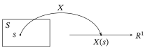
A variável aleatória descrita acima poderia ser escrita formalmente como \(X : \{\text{chuva}, \allowbreak\text{neve}, \allowbreak\text{limpo}\} \to R^1\) dada por \(X(\text{chuva}) = 3\), \(X(\text{neve}) = 6\) e \(X(\text{limpo}) = -2{,}7\). Voltaremos a este exemplo mais adiante.
Apresentamos agora mais alguns exemplos. A questão é que podemos definir variáveis aleatórias como quisermos, desde que sejam funções do espaço amostral em \(R^1\).
Para o caso \(S = \{\text{chuva}, \allowbreak\text{neve}, \allowbreak\text{limpo}\}\), poderíamos definir uma segunda variável aleatória \(Y\) dizendo que \(Y = 0\) se chover, \(Y = -1/2\) se nevar e \(Y = 7/8\) se o tempo estiver limpo. Isto é, \(Y(\text{chuva}) = 0\), \(Y(\text{neve}) = 1/2\)6 e \(Y(\text{limpo}) = 7/8\).
Se o espaço amostral corresponde a lançar três moedas diferentes, então poderíamos tomar \(X\) como o número total de caras obtidas, \(Y\) como o número total de coroas obtidas, \(Z = 0\) se houver exatamente uma cara e, caso contrário, \(Z = 17\) etc.
Se o espaço amostral corresponde a lançar dois dados honestos, então poderíamos tomar \(X\) como o quadrado do número obtido no primeiro dado, \(Y\) como o quadrado do número obtido no segundo dado, \(Z\) como a soma dos dois números obtidos, \(W\) como o quadrado da soma dos dois números obtidos, \(R\) como a soma dos quadrados dos dois números obtidos etc.
Como caso particular, todo valor constante \(c\) também é uma variável aleatória, se dissermos que \(c(s) = c\) para todo \(s \in S\). Assim, 5 é uma variável aleatória, assim como 3 ou \(-21{,}6\).
Vale a pena mencionar um tipo especial de variável aleatória. Se \(A\) é um evento qualquer, então podemos definir a função indicadora7 de \(A\), denotada por \(I_A\), como a variável aleatória \[ I_A(s) = \begin{cases} 1 & s \in A \\ 0 & s \notin A, \end{cases} \] que é igual a 1 em \(A\) e igual a 0 em \(A^C\).
Dadas variáveis aleatórias \(X\) e \(Y\), podemos fazer com elas as operações aritméticas usuais. Assim, por exemplo, \(Z = X^2\) é outra variável aleatória, definida por \(Z(s) = X^2(s) = (X(s))^2 = X(s) \times X(s)\). Da mesma forma, se \(W = XY^3\), então \(W(s) = X(s) \times Y(s) \times Y(s) \times Y(s)\) etc. Além disso, se \(Z = X + Y\), então \(Z(s) = X(s) + Y(s)\) etc.
Considere o lançamento de um dado honesto de seis faces, de modo que \(S = \{1, 2, 3, 4, 5, 6\}\). Seja \(X\) o número obtido, de modo que \(X(s) = s\) para \(s \in S\). Seja \(Y\) o número obtido mais três, de modo que \(Y(s) = s + 3\). Seja \(Z = X^2 + Y\). Então \(Z(s) = X(s)^2 + Y(s) = s^2 + s + 3\). Assim, \(Z(1) = 5\), \(Z(2) = 9\) etc.
Escrevemos \(X = Y\) para indicar que \(X(s) = Y(s)\) para todo \(s \in S\). Da mesma forma, escrevemos \(X \leq Y\) para indicar que \(X(s) \leq Y(s)\) para todo \(s \in S\), e \(X \geq Y\) para indicar que \(X(s) \geq Y(s)\) para todo \(s \in S\). Por exemplo, escrevemos \(X \leq c\) para indicar que \(X(s) \leq c\) para todo \(s \in S\).
Considere de novo o lançamento de um dado honesto de seis faces, com \(S = \{1, 2, 3, 4, 5, 6\}\). Para \(s \in S\), seja \(X(s) = s\) e seja \(Y = X + I_{\{6\}}\). Isso significa que \[ Y(s) = X(s) + I_{\{6\}}(s) = \begin{cases} s & s \leq 5 \\ 7 & s = 6. \end{cases} \] Logo, \(Y(s) = X(s)\) para \(1 \leq s \leq 5\). Mas não é verdade que \(Y = X\), porque \(Y(6) \neq X(6)\). Por outro lado, é verdade que \(Y \geq X\).
Para a variável aleatória do Exemplo 2.1.1 acima, não é verdade que \(X \geq 0\), nem é verdade que \(X \leq 0\). No entanto, é verdade que \(X \geq -2{,}7\) e que \(X \leq 6\). Também é verdade que \(X \geq -10\) e \(X \leq 100\).
Se \(S\) é infinito, então uma variável aleatória \(X\) pode assumir infinitos valores diferentes.
Se \(S = \{1, 2, 3, \ldots\}\), com \(P\{s\} = 2^{-s}\) para todo \(s \in S\), e se \(X\) é definida por \(X(s) = s^2\), então sempre temos \(X \geq 1\). Mas não existe um maior valor de \(X(s)\), porque o valor \(X(s)\) cresce sem limite quando \(s \to \infty\). Chamaremos uma variável aleatória assim de variável aleatória ilimitada8.
Por fim, suponha que \(X\) seja uma variável aleatória. Sabemos que estados \(s\) diferentes ocorrem com probabilidades diferentes. Segue-se que \(X(s)\) também assume valores diferentes com probabilidades diferentes. Essas probabilidades são chamadas de distribuição de \(X\); vamos tratar delas a seguir.
Resumo da Seção 2.1
- Uma variável aleatória é uma função do espaço de estados9 no conjunto dos números reais.
- A função pode ser constante, ou corresponder à contagem de alguma quantidade aleatória que surja, ou ser qualquer outro tipo de função.
Exercícios
2.1.1 Seja \(S = \{1, 2, 3, \ldots\}\) e sejam \(X(s) = s^2\) e \(Y(s) = 1/s\) para \(s \in S\). Para cada uma das quantidades a seguir, determine (com justificativa) se ela existe ou não. Se existir, dê o seu valor. (a) \(\min_{s \in S} X(s)\)(b) \(\max_{s \in S} X(s)\)(c) \(\min_{s \in S} Y(s)\)(d) \(\max_{s \in S} Y(s)\)
2.1.2 Seja \(S = \{\text{alto}, \allowbreak\text{médio}, \allowbreak\text{baixo}\}\). Defina as variáveis aleatórias \(X\), \(Y\) e \(Z\) por \(X(\text{alto}) = -12\), \(X(\text{médio}) = -2\), \(X(\text{baixo}) = 3\), \(Y(\text{alto}) = 0\), \(Y(\text{médio}) = 0\), \(Y(\text{baixo}) = 1\), \(Z(\text{alto}) = 6\), \(Z(\text{médio}) = 0\), \(Z(\text{baixo}) = 4\). Determine se cada uma das relações a seguir é verdadeira ou falsa. (a) \(X < Y\)(b) \(X \leq Y\)(c) \(Y < Z\)(d) \(Y \leq Z\)(e) \(XY < Z\)(f) \(XY \leq Z\)
2.1.3 Seja \(S = \{1, 2, 3, 4, 5\}\). (a) Defina duas variáveis aleatórias não constantes diferentes (isto é, não iguais), \(X\) e \(Y\), em \(S\).(b) Para as variáveis aleatórias \(X\) e \(Y\) que você escolheu, seja \(Z = X + Y^2\). Calcule \(Z(s)\) para todo \(s \in S\).
2.1.4 Considere o lançamento de um dado honesto de seis faces, de modo que \(S = \{1, 2, 3, 4, 5, 6\}\). Sejam \(X(s) = s\) e \(Y(s) = s^3 + 2\). Seja \(Z = XY\). Calcule \(Z(s)\) para todo \(s \in S\).
2.1.5 Sejam \(A\) e \(B\) eventos e seja \(X = I_A \cdot I_B\). \(X\) é uma função indicadora? Se for, de que evento?
2.1.6 Sejam \(S = \{1, 2, 3, 4\}\), \(X = I_{\{1, 2\}}\), \(Y = I_{\{2, 3\}}\) e \(Z = I_{\{3, 4\}}\). Seja \(W = X + Y + Z\). (a) Calcule \(W(1)\).(b) Calcule \(W(2)\).(c) Calcule \(W(4)\).(d) Determine se \(W \geq Z\) ou não.
2.1.7 Sejam \(S = \{1, 2, 3\}\), \(X = I_{\{1\}}\), \(Y = I_{\{2, 3\}}\) e \(Z = I_{\{1, 2\}}\). Seja \(W = X - Y + Z\). (a) Calcule \(W(1)\).(b) Calcule \(W(2)\).(c) Calcule \(W(3)\).(d) Determine se \(W \geq Z\) ou não.
2.1.8 Sejam \(S = \{1, 2, 3, 4, 5\}\), \(X = I_{\{1, 2, 3\}}\), \(Y = I_{\{2, 3\}}\) e \(Z = I_{\{3, 4, 5\}}\). Seja \(W = X - Y + Z\). (a) Calcule \(W(1)\).(b) Calcule \(W(2)\).(c) Calcule \(W(5)\).(d) Determine se \(W \geq Z\) ou não.
2.1.9 Sejam \(S = \{1, 2, 3, 4\}\), \(X = I_{\{1, 2\}}\) e \(Y(s) = s^2 X(s)\). (a) Calcule \(Y(1)\).(b) Calcule \(Y(2)\).(c) Calcule \(Y(4)\).
Problemas
2.1.10 Seja \(X\) uma variável aleatória. (a) É necessariamente verdade que \(X \geq 0\)?(b) É necessariamente verdade que existe algum número real \(c\) tal que \(X + c \geq 0\)?(c) Suponha que o espaço amostral \(S\) seja finito. Então é necessariamente verdade que existe algum número real \(c\) tal que \(X + c \geq 0\)?
2.1.11 Suponha que o espaço amostral \(S\) seja finito. É possível definir uma variável aleatória ilimitada em \(S\)? Por quê?
2.1.12 Suponha que \(X\) seja uma variável aleatória que assume apenas os valores 0 ou 1. \(X\) tem de ser uma função indicadora? Explique.
2.1.13 Suponha que o espaço amostral \(S\) seja finito, de tamanho \(m\). Quantas funções indicadoras diferentes podem ser definidas em \(S\)?
2.1.14 Suponha que \(X\) seja uma variável aleatória. Seja \(Y = \sqrt{X}\). \(Y\) tem de ser uma variável aleatória? Explique.
Tópicos para discussão
2.1.15 A teoria matemática da probabilidade foi apresentada ao mundo de língua inglesa em grande parte por dois matemáticos americanos, William Feller e Joe Doob, que escreviam no início dos anos 1950. Segundo o professor Doob, os dois tiveram uma discussão sobre se as variáveis aleatórias deveriam se chamar “random variables” (variáveis aleatórias) ou “chance variables” (variáveis de acaso). Eles decidiram jogando uma moeda — e “random variables” venceu. (Fonte: Statistical Science 12 (1997), n.º 4, página 307.) Qual nome você acha que teria sido uma escolha melhor?
2.2 Distribuições de Variáveis Aleatórias
Como as variáveis aleatórias são definidas como funções do resultado \(s\), e como se supõe que o resultado \(s\) seja aleatório (isto é, que assuma valores diferentes com probabilidades diferentes), segue-se que o valor de uma variável aleatória também será aleatório (como o nome indica).
Mais especificamente, se \(X\) é uma variável aleatória, qual é a probabilidade de \(X\) ser igual a algum valor particular \(x\)? Bem, \(X = x\) exatamente quando o resultado \(s\) escolhido é tal que \(X(s) = x\).
Consideremos de novo a variável aleatória do Exemplo 2.1.1, em que \(S = \{\text{chuva}, \allowbreak\text{neve}, \allowbreak\text{limpo}\}\) e \(X\) é definida por \(X(\text{chuva}) = 3\), \(X(\text{neve}) = 6\) e \(X(\text{limpo}) = -2{,}7\). Suponha, além disso, que a medida de probabilidade \(P\) seja tal que \(P(\text{chuva}) = 0{,}4\), \(P(\text{neve}) = 0{,}15\) e \(P(\text{limpo}) = 0{,}45\). Então, claramente, \(X = 3\) só quando chove, \(X = 6\) só quando neva e \(X = -2{,}7\) só quando o tempo está limpo. Assim, \(P(X = 3) = P(\text{chuva}) = 0{,}4\), \(P(X = 6) = P(\text{neve}) = 0{,}15\) e \(P(X = -2{,}7) = P(\text{limpo}) = 0{,}45\). Além disso, \(P(X = 17) = 0\) e, de fato, \(P(X = x) = P(\emptyset) = 0\) para todo \(x \notin \{3, 6, -2{,}7\}\). Podemos também calcular que \[ P(X \in \{3, 6\}) = P(X = 3) + P(X = 6) = 0{,}4 + 0{,}15 = 0{,}55, \] enquanto \[ P(X < 5) = P(X = 3) + P(X = -2{,}7) = 0{,}4 + 0{,}45 = 0{,}85, \] etc.
Vemos por este exemplo que, se \(B\) é um subconjunto qualquer dos números reais, então \(P(X \in B) = P(\{s \in S : X(s) \in B\})\). Além disso, entender bem \(X\) exige conhecer as probabilidades \(P(X \in B)\) para diferentes subconjuntos \(B\). Essa é a motivação da definição a seguir.
Se \(X\) é uma variável aleatória, então a distribuição de \(X\) é a coleção de probabilidades \(P(X \in B)\) para todos os subconjuntos \(B\) dos números reais.
Em termos rigorosos, exige-se que \(B\) seja um subconjunto de Borel10, o que é uma restrição técnica da teoria da medida11 com a qual não precisamos nos preocupar aqui. Qualquer subconjunto que pudéssemos escrever é um subconjunto de Borel.
Na Figura 2.2.1, damos uma representação gráfica de como calculamos a distribuição de uma variável aleatória \(X\). Para um conjunto \(B\), precisamos encontrar os elementos \(s \in S\) tais que \(X(s) \in B\). Esses elementos são dados pelo conjunto \(\{s \in S : X(s) \in B\}\). Em seguida, calculamos a probabilidade \(P(\{s \in S : X(s) \in B\})\). Precisamos fazer isso para todo subconjunto \(B \subset R^1\).
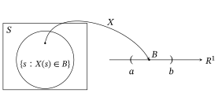
Considere mais uma vez a variável aleatória acima, em que \(S = \{\text{chuva}, \allowbreak\text{neve}, \allowbreak\text{limpo}\}\) e \(X\) é definida por \(X(\text{chuva}) = 3\), \(X(\text{neve}) = 6\) e \(X(\text{limpo}) = -2{,}7\), e \(P(\text{chuva}) = 0{,}4\), \(P(\text{neve}) = 0{,}15\) e \(P(\text{limpo}) = 0{,}45\). Qual é a distribuição de \(X\)? Bem, se \(B\) é um subconjunto qualquer dos números reais, então \(P(X \in B)\) deve contar 0,4 se \(3 \in B\), mais 0,15 se \(6 \in B\), mais 0,45 se \(-2{,}7 \in B\). Podemos escrever formalmente toda essa informação de uma só vez dizendo que \[ P(X \in B) = 0{,}4\, I_B(3) + 0{,}15\, I_B(6) + 0{,}45\, I_B(-2{,}7), \] em que, de novo, \(I_B(x) = 1\) se \(x \in B\), e \(I_B(x) = 0\) se \(x \notin B\).
Considere mais uma vez a situação acima, com \(S = \{\text{chuva}, \allowbreak\text{neve}, \allowbreak\text{limpo}\}\) e \(P(\text{chuva}) = 0{,}4\), \(P(\text{neve}) = 0{,}15\) e \(P(\text{limpo}) = 0{,}45\). Considere uma variável aleatória \(Y\) definida por \(Y(\text{chuva}) = 5\), \(Y(\text{neve}) = 7\) e \(Y(\text{limpo}) = 5\).
Qual é a distribuição de \(Y\)? Claramente, \(Y = 7\) só quando neva, de modo que \(P(Y = 7) = P(\text{neve}) = 0{,}15\). No entanto, aqui \(Y = 5\) se chover ou se o tempo estiver limpo. Logo, \(P(Y = 5) = P(\{\text{chuva}, \allowbreak\text{limpo}\})\) \({}= 0{,}4 + 0{,}45\) \({}= 0{,}85\). Portanto, se \(B\) é um subconjunto qualquer dos números reais, então \[ P(Y \in B) = 0{,}15\, I_B(7) + 0{,}85\, I_B(5). \]
Embora os exemplos acima mostrem que é possível acompanhar \(P(X \in B)\) para todos os subconjuntos \(B\) dos números reais, eles também indicam que fazer isso é bastante trabalhoso. Felizmente, há funções mais simples disponíveis para nos ajudar a acompanhar distribuições de probabilidade, entre elas as funções de distribuição acumulada, as funções de probabilidade e as funções densidade. Vamos tratar delas a seguir.
Resumo da Seção 2.2
- A distribuição de uma variável aleatória \(X\) é a coleção de probabilidades \(P(X \in B)\) de \(X\) pertencer a diversos conjuntos.
- A probabilidade \(P(X \in B)\) é determinada calculando-se a probabilidade do conjunto dos valores de resposta \(s\) tais que \(X(s) \in B\), isto é, \(P(X \in B) = P(\{s \in S : X(s) \in B\})\).
Exercícios
2.2.1 Considere o lançamento de duas moedas honestas independentes. Seja \(X\) o número de caras que aparecem. Calcule \(P(X = x)\) para todo número real \(x\).
2.2.2 Suponha que lançamos três moedas honestas e seja \(X\) o número de caras obtidas. (a) Calcule \(P(X = x)\) para todo número real \(x\).(b) Escreva uma fórmula para \(P(X \in B)\), para qualquer subconjunto \(B\) dos números reais.
2.2.3 Suponha que lançamos dois dados honestos de seis faces e seja \(Y\) a soma dos dois números obtidos. (a) Calcule \(P(Y = y)\) para todo número real \(y\).(b) Escreva uma fórmula para \(P(Y \in B)\), para qualquer subconjunto \(B\) dos números reais.
2.2.4 Suponha que lançamos um dado honesto de seis faces e seja \(Z\) o número obtido. Sejam \(W = Z^3 + 4\) e \(V = \sqrt{Z}\). (a) Calcule \(P(W = w)\) para todo número real \(w\).(b) Calcule \(P(V = v)\) para todo número real \(v\).(c) Calcule \(P(ZW = x)\) para todo número real \(x\).(d) Calcule \(P(VW = y)\) para todo número real \(y\).(e) Calcule \(P(V + W = r)\) para todo número real \(r\).
2.2.5 Suponha que uma tigela contenha 100 fichas: 30 marcadas com 1, 20 marcadas com 2 e 50 marcadas com 3. As fichas são bem misturadas, uma ficha é retirada e o número \(X\) da ficha é anotado. (a) Calcule \(P(X = x)\) para todo número real \(x\).(b) Suponha que a primeira ficha seja devolvida, uma segunda ficha seja retirada e o número \(Y\) da ficha seja anotado. Calcule \(P(Y = y)\) para todo número real \(y\).(c) Calcule \(P(W = w)\) para todo número real \(w\) quando \(W = X + Y\).
2.2.6 Suponha que um baralho comum de 52 cartas seja bem embaralhado e que uma única carta seja retirada. Suponha que um ás valha 1, um valete valha 11, uma dama valha 12 e um rei valha 13. (a) Calcule \(P(X = x)\) para todo número real \(x\), quando \(X\) é o valor da carta retirada.(b) Suponha que \(Y = 1, 2, 3\) ou 4 quando sai uma carta de ouros, copas, paus ou espadas, respectivamente. Calcule \(P(Y = y)\) para todo número real \(y\).(c) Calcule \(P(W = w)\) para todo número real \(w\) quando \(W = X + Y\).
2.2.7 Suponha que uma universidade seja composta de 55% de alunas e 45% de alunos. Um estudante é selecionado para responder a um questionário. Há 25 perguntas no questionário aplicado a um aluno e 30 perguntas no questionário aplicado a uma aluna. Se \(X\) denota o número de perguntas respondidas por um estudante selecionado ao acaso, calcule \(P(X = x)\) para todo número real \(x\).
2.2.8 Suponha que uma tigela contenha 10 fichas, numeradas de 0 a 9, cada uma com um número diferente. As fichas são bem misturadas, uma é retirada e o número nela, \(X_1\), é anotado. Essa ficha é então devolvida à tigela. Uma segunda ficha é retirada e o número nela, \(X_2\), é anotado. Calcule \(P(W = w)\) para todo número real \(w\) quando \(W = X_1 + 10X_2\).
Problemas
2.2.9 Suponha que uma tigela contenha 10 fichas, numeradas de 0 a 9, cada uma com um número diferente. As fichas são bem misturadas, uma é retirada e o número nela, \(X_1\), é anotado. Essa ficha não é devolvida à tigela. Uma segunda ficha é retirada e o número nela, \(X_2\), é anotado. Calcule \(P(W = w)\) para todo número real \(w\) quando \(W = X_1 + 10X_2\).
Desafios
2.2.10 Suponha que Alice lance três moedas honestas e seja \(X\) o número de caras obtidas. Suponha que Barbara lance cinco moedas honestas e seja \(Y\) o número de caras obtidas. Seja \(Z = X - Y\). Calcule \(P(Z = z)\) para todo número real \(z\).
2.3 Distribuições Discretas
Para muitas variáveis aleatórias \(X\), temos \(P(X = x) > 0\) para certos valores de \(x\). Isso significa que há probabilidade positiva de a variável ser igual a certos valores particulares.
Se \[ \sum_{x \in R^1} P(X = x) = 1, \] então toda a probabilidade associada à variável aleatória \(X\) pode ser obtida a partir da probabilidade de \(X\) ser igual a certos valores particulares. Isso motiva a definição a seguir.
Uma variável aleatória \(X\) é discreta se \begin{equation} \sum_{x \in R^1} P(X = x) = 1. \tag{2.3.1} \end{equation}
À primeira vista, poderíamos esperar que (2.3.1) valesse para qualquer variável aleatória. No entanto, (2.3.1) não vale para a distribuição uniforme12 em \([0, 1]\) nem para outras distribuições contínuas, como veremos na próxima seção.
Variáveis aleatórias que satisfazem (2.3.1) são simples, em certo sentido, porque podemos entendê-las completamente apenas entendendo suas probabilidades de serem iguais a valores particulares \(x\). De fato, simplesmente listando todos os valores possíveis \(x\) tais que \(P(X = x) > 0\), obtemos uma segunda definição, equivalente, como segue.
Uma variável aleatória \(X\) é discreta se existe uma sequência finita ou enumerável13 \(x_1, x_2, \ldots\) de números reais distintos, e uma sequência correspondente \(p_1, p_2, \ldots\) de números reais não negativos, tais que \(P(X = x_i) = p_i\) para todo \(i\), e \(\sum_i p_i = 1\).
Essa segunda definição também sugere como registrar distribuições discretas. Ela motiva a definição a seguir.
Para uma variável aleatória discreta \(X\), sua função de probabilidade14 é a função \(p_X : R^1 \to [0, 1]\) definida por \[ p_X(x) = P(X = x). \]
Portanto, se \(x_1, x_2, \ldots\) são os valores distintos tais que \(P(X = x_i) = p_i\) para todo \(i\), com \(\sum_i p_i = 1\), então \[ p_X(x) = \begin{cases} p_i & x = x_i \text{ para algum } i\\ 0 & \text{caso contrário.} \end{cases} \]
Evidentemente, toda a informação sobre a distribuição de \(X\) está contida em sua função de probabilidade, mas só se soubermos que \(X\) é uma variável aleatória discreta.
Por fim, observamos que o Teorema 1.5.1 implica imediatamente o seguinte.
Seja \(X\) uma variável aleatória discreta e seja \(A\) algum evento. Então \[ P(A) = \sum_{x \in R^1} P(X = x)\, P(A \mid X = x). \]
2.3.1 Distribuições Discretas Importantes
Certas distribuições discretas particulares são tão importantes que as listamos aqui.
Seja \(c\) algum número real fixo. Então, como já discutido, \(c\) também é uma variável aleatória (na verdade, \(c\) é uma variável aleatória constante). Nesse caso, evidentemente \(c\) é discreta, com função de probabilidade \(p_c\) satisfazendo \(p_c(c) = 1\) e \(p_c(x) = 0\) para \(x \neq c\). Como \(c\) é sempre igual a um valor particular (a saber, \(c\)) com probabilidade 1, a distribuição de \(c\) às vezes é chamada de massa pontual16, distribuição pontual17 ou distribuição degenerada18.
Considere o lançamento de uma moeda que tem probabilidade \(\theta\) de dar cara e probabilidade \(1 - \theta\) de dar coroa, em que \(0 < \theta < 1\). Seja \(X = 1\) se a moeda der cara, e \(X = 0\) se der coroa. Então \(p_X(1) = P(X = 1) = \theta\), enquanto \(p_X(0) = P(X = 0) = 1 - \theta\). Dizemos que a variável aleatória \(X\) tem distribuição Bernoulli\((\theta)\); escrevemos isso como \(X \sim \text{Bernoulli}(\theta)\).
Distribuições de Bernoulli surgem sempre que temos uma variável resposta19 que assume só dois valores possíveis e rotulamos um desses resultados como 1 e o outro como 0. Por exemplo, 1 poderia corresponder ao sucesso e 0 ao fracasso em algum teste de qualidade aplicado a um item produzido num processo de fabricação. Nesse caso, \(\theta\) é a proporção de itens fabricados que passarão no teste. Alternativamente, poderíamos selecionar ao acaso um indivíduo de uma população e registrar 1 quando o indivíduo for do sexo feminino e 0 se for do sexo masculino. Nesse caso, \(\theta\) é a proporção de mulheres na população.
Considere o lançamento de \(n\) moedas, cada uma com probabilidade (independente) \(\theta\) de dar cara e probabilidade \(1 - \theta\) de dar coroa. (Novamente, \(0 < \theta < 1\).) Seja \(X\) o número total de caras obtidas. Por (1.4.2), vemos que, para \(x = 0, 1, 2, \ldots, n\), \[ p_X(x) = P(X = x) = \binom{n}{x} \theta^x (1 - \theta)^{n-x} = \frac{n!}{x!\,(n - x)!}\, \theta^x (1 - \theta)^{n-x}. \] Dizemos que a variável aleatória \(X\) tem distribuição Binomial\((n, \theta)\); escrevemos isso como \(X \sim \text{Binomial}(n, \theta)\). A distribuição Bernoulli\((\theta)\) corresponde ao caso particular da distribuição Binomial\((n, \theta)\) em que \(n = 1\), a saber, \(\text{Bernoulli}(\theta)\) \({}= \text{Binomial}(1, \theta)\). A Figura 2.3.1 traz os gráficos de várias funções de probabilidade Binomial\((20, \theta)\).
A distribuição binomial se aplica a qualquer situação que envolva \(n\) realizações independentes de um sistema aleatório; em cada realização, registramos se um evento particular ocorreu, o que se chama sucesso, ou não ocorreu, o que se chama fracasso. Se denotarmos o evento em questão por \(A\) e pusermos \(\theta = P(A)\), temos que o número de sucessos nas \(n\) realizações tem distribuição Binomial\((n, \theta)\). Por exemplo, poderíamos estar testando lâmpadas produzidas por um fabricante, e \(\theta\) é a probabilidade de uma lâmpada funcionar quando a testamos. Então o número de lâmpadas que funcionam num lote de \(n\) tem distribuição Binomial\((n, \theta)\). Se um jogador de beisebol tem probabilidade \(\theta\) de rebater com sucesso quando está no bastão, então o número de rebatidas válidas obtidas em \(n\) vezes no bastão tem distribuição Binomial\((n, \theta)\).
Há outra maneira de expressar a distribuição binomial que às vezes é útil. Por exemplo, se \(X_1, X_2, \ldots, X_n\) são escolhidas de forma independente e cada uma tem distribuição Bernoulli\((\theta)\), e \(Y = X_1 + \cdots + X_n\), então \(Y\) terá distribuição Binomial\((n, \theta)\) (veja o Exemplo 3.4.10 para os detalhes).
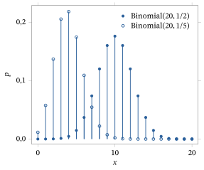
Considere lançar repetidamente uma moeda que tem probabilidade \(\theta\) de dar cara e probabilidade \(1 - \theta\) de dar coroa, em que, novamente, \(0 < \theta < 1\). Seja \(X\) o número de coroas que aparecem antes da primeira cara. Então, para \(k \geq 0\), \(X = k\) se e somente se a moeda mostra exatamente \(k\) coroas seguidas de uma cara. A probabilidade disso é igual a \((1 - \theta)^k \theta\). (Em particular, a probabilidade de obter um número infinito de coroas antes da primeira cara é igual a \((1 - \theta)^\infty \theta = 0\), de modo que \(X\) nunca é igual a infinito.) Portanto, \(p_X(k) = (1 - \theta)^k \theta\), para \(k = 0, 1, 2, 3, \ldots\). Dizemos que a variável aleatória \(X\) tem distribuição Geométrica\((\theta)\); escrevemos isso como \(X \sim \text{Geométrica}(\theta)\). A Figura 2.3.2 traz os gráficos de várias funções de probabilidade Geométrica\((\theta)\).
A distribuição geométrica se aplica sempre que contamos o número de fracassos até o primeiro sucesso em realizações independentes de um sistema aleatório em que a ocorrência de algum evento é considerada um sucesso. Por exemplo, o número de lâmpadas testadas que funcionam até a primeira lâmpada que não funciona (uma lâmpada que funciona é considerada um “fracasso” para o teste) e o número de vezes no bastão sem rebatida válida até a primeira rebatida válida do jogador de beisebol seguem, ambos, a distribuição geométrica.
Observamos que alguns livros definem a distribuição geométrica, em vez disso, como o número de lançamentos da moeda até a primeira cara, inclusive, que é simplesmente igual a um mais a variável aleatória definida aqui.
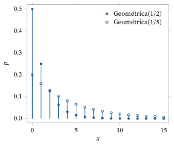
Generalizando o exemplo anterior, considere novamente lançar repetidamente uma moeda que tem probabilidade \(\theta\) de dar cara e probabilidade \(1 - \theta\) de dar coroa. Seja \(r\) um inteiro positivo e seja \(Y\) o número de coroas que aparecem antes da \(r\)-ésima cara. Então, para \(k \geq 0\), \(Y = k\) se e somente se a moeda mostra exatamente \(r - 1\) caras (e \(k\) coroas) nos primeiros \(r - 1 + k\) lançamentos e, depois, mostra cara no \((r + k)\)-ésimo lançamento. A probabilidade disso é igual a \[ p_Y(k) = \binom{r - 1 + k}{r - 1} \theta^{r-1} (1 - \theta)^k \theta = \binom{r - 1 + k}{k} \theta^r (1 - \theta)^k, \] para \(k = 0, 1, 2, 3, \ldots\).
Dizemos que a variável aleatória \(Y\) tem distribuição Binomial Negativa\((r, \theta)\); escrevemos isso como \(Y \sim \text{Binomial Negativa}(r, \theta)\). Naturalmente, o caso particular \(r = 1\) corresponde à distribuição Geométrica\((\theta)\). Assim, na nossa notação, temos que \(\text{Binomial Negativa}(1, \theta)\) \({}= \text{Geométrica}(\theta)\). A Figura 2.3.3 traz os gráficos de várias funções de probabilidade Binomial Negativa\((r, \theta)\).
A distribuição Binomial Negativa\((r, \theta)\) se aplica sempre que contamos o número de fracassos até o \(r\)-ésimo sucesso em realizações independentes de um sistema aleatório em que a ocorrência de algum evento é considerada um sucesso. Por exemplo, o número de lâmpadas testadas que funcionam até a terceira lâmpada que não funciona e o número de vezes no bastão sem rebatida válida até a quinta rebatida válida do jogador de beisebol seguem, ambos, a distribuição binomial negativa.
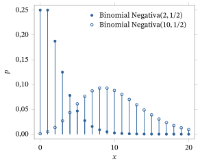
Dizemos que uma variável aleatória \(Y\) tem distribuição Poisson\((\lambda)\), e escrevemos \(Y \sim \text{Poisson}(\lambda)\), se \[ p_Y(y) = P(Y = y) = \frac{\lambda^y}{y!} e^{-\lambda} \] para \(y = 0, 1, 2, 3, \ldots\). Observamos que, como (pelo cálculo) \(\sum_{y=0}^{\infty} \lambda^y / y!\) \({}= e^{\lambda}\), de fato vale (como tem de valer) que \(\sum_{y=0}^{\infty} P(Y = y) = 1\). A Figura 2.3.4 traz os gráficos de várias funções de probabilidade Poisson\((\lambda)\).
Motivamos a distribuição de Poisson da seguinte maneira. Suponha que \(X \sim \text{Binomial}(n, \theta)\), isto é, que \(X\) tem distribuição Binomial\((n, \theta)\) como no Exemplo 2.3.3. Então, para \(0 \leq x \leq n\), \[ P(X = x) = \binom{n}{x} \theta^x (1 - \theta)^{n-x}. \] Se tomarmos \(\theta = \lambda / n\) para algum \(\lambda > 0\), isso se torna \begin{align} P(X = x) &= \binom{n}{x} \left(\frac{\lambda}{n}\right)^{x} \left(1 - \frac{\lambda}{n}\right)^{n-x} \notag\\ &= \frac{n(n - 1) \cdots (n - x + 1)}{x!} \left(\frac{\lambda}{n}\right)^{x} \left(1 - \frac{\lambda}{n}\right)^{n-x}. \tag{2.3.2} \end{align}
Vamos considerar agora o que acontece se fizermos \(n \to \infty\) em (2.3.2), mantendo \(x\) fixo em algum inteiro não negativo20. Nesse caso,21 \[ \frac{n(n - 1)(n - 2) \cdots (n - x + 1)}{n^x} = 1 \left(1 - \frac{1}{n}\right) \left(1 - \frac{2}{n}\right) \cdots \left(1 - \frac{x + 1}{n}\right) \] converge para 1, enquanto (como, pelo cálculo, \((1 + (c/n))^n \to e^c\) para qualquer \(c\)) \[ \left(1 - \frac{\lambda}{n}\right)^{n-x} = \left(1 - \frac{\lambda}{n}\right)^{n} \left(1 - \frac{\lambda}{n}\right)^{-x} \to e^{-\lambda} \cdot 1 = e^{-\lambda}. \] Substituindo esses limites em (2.3.2), vemos que \[ \lim_{n \to \infty} P(X = x) = \frac{\lambda^x}{x!} e^{-\lambda} \] para \(x = 0, 1, 2, 3, \ldots\).
Intuitivamente, podemos enunciar esse resultado da seguinte forma. Se lançarmos um número \(n\) muito grande de moedas, e cada moeda tiver probabilidade muito pequena \(\theta = \lambda / n\) de dar cara, então a probabilidade de o número total de caras ser \(x\) é dada aproximadamente por \(\lambda^x e^{-\lambda} / x!\). A Figura 2.3.5 mostra a precisão dessa estimativa22 quando aproximamos a distribuição Binomial\((100, 1/10)\) pela distribuição Poisson\((\lambda)\), em que \(\lambda = n\theta = 100(1/10) = 10\).
A distribuição de Poisson é um bom modelo para contar ocorrências aleatórias de um evento quando há muitas ocorrências possíveis, mas cada ocorrência tem probabilidade muito pequena. Exemplos incluem o número de incêndios em residências numa cidade num dado dia, o número de eventos radioativos registrados por um contador Geiger, o número de chamadas telefônicas que chegam a uma central telefônica e o número de acessos a uma página popular da World Wide Web num dado dia etc.
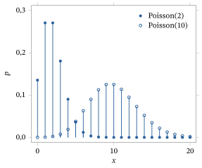
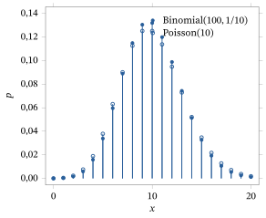
Suponha que uma urna contenha \(M\) bolas brancas e \(N - M\) bolas pretas. Suponha que retiramos \(n \leq N\) bolas da urna de tal maneira que cada subconjunto de \(n\) bolas tenha a mesma probabilidade de ser retirado. Como há \(\binom{N}{n}\) desses subconjuntos, essa probabilidade é \(1 / \binom{N}{n}\).
Uma maneira de fazer isso é misturar bem as bolas na urna e então retirar uma primeira bola. Assim, cada bola tem probabilidade \(1/N\) de ser retirada. Em seguida, sem repor a primeira bola, misturamos bem as bolas na urna e retiramos uma segunda bola. Assim, cada bola na urna tem probabilidade \(1/(N - 1)\) de ser retirada. Temos então que quaisquer duas bolas, digamos a \(i\)-ésima e a \(j\)-ésima, têm probabilidade \begin{align*} &P(\text{bolas } i \text{ e } j \text{ são retiradas})\\ &= P(\text{bola } i \text{ é a 1ª})\, P(\text{bola } j \text{ é a 2ª} \mid \text{bola } i \text{ é a 1ª})\\ &\quad + P(\text{bola } j \text{ é a 1ª})\, P(\text{bola } i \text{ é a 2ª} \mid \text{bola } j \text{ é a 1ª})\\ &= \frac{1}{N} \frac{1}{N - 1} + \frac{1}{N} \frac{1}{N - 1} = 1 \Big/ \binom{N}{2} \end{align*} de serem retiradas nas duas primeiras retiradas. Continuando dessa forma por \(n\) retiradas, obtemos que a probabilidade de qualquer conjunto particular de \(n\) bolas ser retirado é \(1 / \binom{N}{n}\). Esse tipo de amostragem é chamado de amostragem sem reposição23.
Dado que tomamos uma amostra de tamanho \(n\), seja \(X\) o número de bolas brancas obtidas. Note que devemos ter \(X \geq 0\) e \(X \geq n - (N - M)\), porque no máximo \(N - M\) das bolas podem ser pretas. Portanto, \(X \geq \max(0, n + M - N)\). Além disso, \(X \leq n\) e \(X \leq M\), porque há só \(M\) bolas brancas. Portanto, \(X \leq \min(n, M)\).
Suponha então que \(\max(0, n + M - N) \leq x \leq \min(n, M)\). Qual é a probabilidade de se obterem \(x\) bolas brancas? Em outras palavras, quanto vale \(P(X = x)\)? Para calcular isso, sabemos que precisamos contar o número de subconjuntos de \(n\) bolas que contêm \(x\) bolas brancas. Usando os princípios combinatórios da Seção 1.4.1, vemos que esse número é dado por \(\binom{M}{x} \binom{N - M}{n - x}\). Portanto, \[ P(X = x) = \binom{M}{x} \binom{N - M}{n - x} \Big/ \binom{N}{n} \] para \(\max(0, n + M - N) \leq x \leq \min(n, M)\). Dizemos que a variável aleatória \(X\) tem distribuição Hipergeométrica\((N, M, n)\). Na Figura 2.3.6, traçamos algumas funções de probabilidade hipergeométricas. A função de probabilidade Hipergeométrica\((20, 10, 10)\) é 0 para \(x > 10\), enquanto a função de probabilidade Hipergeométrica\((20, 10, 5)\) é 0 para \(x > 5\).
Evidentemente, a distribuição hipergeométrica se aplica a qualquer contexto em que estejamos fazendo amostragem sem reposição de um conjunto finito de \(N\) elementos e em que cada elemento do conjunto tem ou não tem uma característica. Por exemplo, se selecionamos pessoas ao acaso para participar de uma pesquisa de opinião de modo que cada conjunto de \(n\) indivíduos numa população de \(N\) tenha a mesma probabilidade de ser selecionado, então o número de pessoas que respondem sim a uma pergunta particular tem distribuição Hipergeométrica\((N, M, n)\), em que \(M\) é o número de pessoas da população inteira que responderiam sim. Veremos a relevância disso para a estatística na Seção 5.4.2.
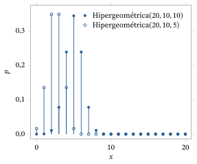
Suponha que, no Exemplo 2.3.7, tivéssemos reposto a bola retirada antes de retirar a bola seguinte. Isso se chama amostragem com reposição24. Fica então claro, pelo Exemplo 2.3.3, que o número de bolas brancas observadas em \(n\) retiradas tem distribuição Binomial\((n, M/N)\).
Resumo da Seção 2.3
- Uma variável aleatória \(X\) é discreta se \(\sum_x P(X = x) = 1\), isto é, se toda a sua probabilidade vem de ela ser igual a valores particulares.
- Uma variável aleatória discreta \(X\) assume só um número finito, ou enumerável, de valores distintos.
- Distribuições discretas importantes incluem as distribuições degenerada, de Bernoulli, binomial, geométrica, binomial negativa, de Poisson e hipergeométrica.
Exercícios
2.3.1 Considere o lançamento de dois dados honestos de seis faces. Seja \(Y\) a soma dos números obtidos. Qual é a função de probabilidade de \(Y\)?
2.3.2 Considere o lançamento de uma moeda honesta. Seja \(Z = 1\) se a moeda der cara e \(Z = 3\) se der coroa. Seja \(W = Z^2 + Z\). (a) Qual é a função de probabilidade de \(Z\)?(b) Qual é a função de probabilidade de \(W\)?
2.3.3 Considere o lançamento de duas moedas honestas. Seja \(X = 1\) se a primeira moeda der cara e \(X = 0\) se a primeira moeda der coroa. Seja \(Y = 1\) se a segunda moeda der cara e \(Y = 5\) se a segunda moeda der coroa. Seja \(Z = XY\). Qual é a função de probabilidade de \(Z\)?
2.3.4 Considere o lançamento de duas moedas honestas. Seja \(X = 1\) se a primeira moeda der cara e \(X = 0\) se a primeira moeda der coroa. Seja \(Y = 1\) se as duas moedas mostrarem a mesma face (isto é, as duas cara ou as duas coroa), com \(Y = 0\) caso contrário. Seja \(Z = X + Y\) e \(W = XY\). (a) Qual é a função de probabilidade de \(Z\)?(b) Qual é a função de probabilidade de \(W\)?
2.3.5 Considere o lançamento de dois dados honestos de seis faces. Seja \(W\) o produto dos números obtidos. Qual é a função de probabilidade de \(W\)?
2.3.6 Seja \(Z \sim \text{Geométrica}(\theta)\). Calcule \(P(5 \leq Z \leq 9)\).
2.3.7 Seja \(X \sim \text{Binomial}(12, \theta)\). Para que valor de \(\theta\) a probabilidade \(P(X = 11)\) é máxima?
2.3.8 Seja \(W \sim \text{Poisson}(\lambda)\). Para que valor de \(\lambda\) a probabilidade \(P(W = 11)\) é máxima?
2.3.9 Seja \(Z \sim \text{Binomial Negativa}(3, 1/4)\). Calcule \(P(Z \leq 2)\).
2.3.10 Seja \(X \sim \text{Geométrica}(1/5)\). Calcule \(P(X^2 \leq 15)\).
2.3.11 Seja \(Y \sim \text{Binomial}(10, \theta)\). Calcule \(P(Y = 10)\).
2.3.12 Seja \(X \sim \text{Poisson}(\lambda)\). Seja \(Y = X - 7\). Qual é a função de probabilidade de \(Y\)?
2.3.13 Seja \(X \sim \text{Hipergeométrica}(20, 7, 8)\). Qual é a probabilidade de \(X = 3\)? Qual é a probabilidade de \(X = 8\)?
2.3.14 Suponha que um dado simétrico seja lançado 20 vezes de forma independente e que, a cada vez, registremos se o evento \(\{2, 3, 5, 6\}\) ocorreu ou não. (a) Qual é a distribuição do número de vezes que esse evento ocorre em 20 lançamentos?(b) Calcule a probabilidade de o evento ocorrer cinco vezes.
2.3.15 Suponha que um jogador de basquete acerte a cesta, de certa posição da quadra, com probabilidade \(0{,}35\). (a) Qual é a probabilidade de o jogador acertar três cestas em 10 arremessos independentes?(b) Qual é a probabilidade de o jogador fazer sua primeira cesta na décima tentativa?(c) Qual é a probabilidade de o jogador fazer sua segunda cesta na décima tentativa?
2.3.16 Uma urna contém 4 bolas pretas e 5 bolas brancas. Depois de uma boa mistura, uma bola é retirada da urna, sua cor é anotada e a bola é devolvida à urna. (a) Qual é a probabilidade de se observarem 5 bolas pretas em 15 retiradas como essa?(b) Qual é a probabilidade de serem necessárias 15 retiradas até que se observe a primeira bola preta?(c) Qual é a probabilidade de se fazerem 15 retiradas com 5 bolas pretas observadas e de a quinta bola preta ser observada na 15ª retirada?
2.3.17 Uma urna contém 4 bolas pretas e 5 bolas brancas. Depois de uma boa mistura, uma bola é retirada da urna, sua cor é anotada e a bola é posta de lado. As bolas restantes são então misturadas e uma segunda bola é retirada. (a) Qual é a distribuição de probabilidade do número de bolas pretas observadas?(b) Qual é a distribuição de probabilidade do número de bolas brancas observadas?
2.3.18 (Processos de Poisson e filas) Considere uma situação que envolva um atendente, por exemplo, um caixa numa lanchonete de fast-food, um caixa eletrônico de banco, uma central telefônica etc. Em geral, as unidades chegam para atendimento de forma aleatória e formam uma fila quando o atendente está ocupado. Muitas vezes, o número de chegadas ao atendente, para alguma unidade de tempo específica \(t\), pode ser modelado por uma distribuição Poisson\((\lambda t)\) e é tal que os números de chegadas em períodos que não se sobrepõem são independentes. No Capítulo 3, mostraremos que \(\lambda t\) é o número médio de chegadas durante um período de tempo de duração \(t\) e, portanto, que \(\lambda\) é a taxa de chegadas por unidade de tempo.
Suponha que chamadas telefônicas cheguem a uma linha de atendimento à taxa de duas por minuto. Um processo de Poisson25 fornece um bom modelo. (a) Qual é a probabilidade de chegarem cinco chamadas nos próximos 2 minutos?(b) Qual é a probabilidade de chegarem cinco chamadas nos próximos 2 minutos e, depois, mais cinco chamadas nos 2 minutos seguintes?(c) Qual é a probabilidade de não chegar nenhuma chamada durante um período de 10 minutos?
2.3.19 Suponha que uma urna contenha 1000 bolas, uma delas preta e as outras 999 brancas. Suponha que 100 bolas sejam retiradas da urna ao acaso, com reposição. Use a distribuição de Poisson apropriada para aproximar a probabilidade de se observarem cinco bolas pretas.
2.3.20 Suponha que haja um laço num programa de computador e que o teste para sair do laço dependa do valor de uma variável aleatória \(X\). O programa sai do laço sempre que \(X \in A\), e isso ocorre com probabilidade \(1/3\). Se o laço é executado pelo menos uma vez, qual é a probabilidade de o laço ser executado cinco vezes antes de sair?
Exercícios computacionais
2.3.21 Tabule e faça o gráfico da função de probabilidade Hipergeométrica\((20, 8, 10)\).
2.3.22 Tabule e faça o gráfico da função de probabilidade Binomial\((30; 0{,}3)\). Tabule e faça o gráfico da função de probabilidade Binomial\((30; 0{,}7)\). Explique por que a função de probabilidade Binomial\((30; 0{,}3)\) em \(x\) coincide com a função de probabilidade Binomial\((30; 0{,}7)\) em \(n - x\).
Problemas
2.3.23 Seja \(X\) uma variável aleatória discreta com função de probabilidade \(p_X(x) = 2^{-x}\) para \(x = 1, 2, 3, \ldots\), com \(p_X(x) = 0\) caso contrário. (a) Seja \(Y = X^2\). Qual é a função de probabilidade \(p_Y\) de \(Y\)?(b) Seja \(Z = X - 1\). Qual é a distribuição de \(Z\)? (Identifique a distribuição pelo nome e especifique os valores de todos os parâmetros.)
2.3.24 Sejam \(X \sim \text{Binomial}(n_1, \theta)\) e \(Y \sim \text{Binomial}(n_2, \theta)\), com \(X\) e \(Y\) escolhidas de forma independente. Seja \(Z = X + Y\). Qual será a distribuição de \(Z\)? (Explique seu raciocínio.) (Sugestão: veja o fim do Exemplo 2.3.3.)
2.3.25 Sejam \(X \sim \text{Geométrica}(\theta)\) e \(Y \sim \text{Geométrica}(\theta)\), com \(X\) e \(Y\) escolhidas de forma independente. Seja \(Z = X + Y\). Qual será a distribuição de \(Z\)? Generalize isso para \(r\) moedas. (Explique seu raciocínio.)
2.3.26 Sejam \(X \sim \text{Geométrica}(\theta_1)\) e \(Y \sim \text{Geométrica}(\theta_2)\), com \(X\) e \(Y\) escolhidas de forma independente. Calcule \(P(X \leq Y)\). Explique o que essa probabilidade significa em termos de lançamentos de moedas.
2.3.27 Suponha que \(X_n \sim \text{Geométrica}(\lambda / n)\). Calcule \(\lim_{n \to \infty} P(X_n \leq n)\).
2.3.28 Sejam \(X \sim \text{Binomial Negativa}(r, \theta)\) e \(Y \sim \text{Binomial Negativa}(s, \theta)\), com \(X\) e \(Y\) escolhidas de forma independente. Seja \(Z = X + Y\). Qual será a distribuição de \(Z\)? (Explique seu raciocínio.)
2.3.29 (Distribuição hipergeométrica generalizada) Suponha que um conjunto contenha \(N\) objetos, \(M_1\) dos quais rotulados com 1, \(M_2\) rotulados com 2 e os restantes rotulados com 3. Suponha que selecionamos uma amostra de \(n \leq N\) objetos do conjunto usando amostragem sem reposição, como descrito no Exemplo 2.3.7. Determine a probabilidade de obtermos as contagens \((f_1, f_2, f_3)\), em que \(f_i\) é o número de objetos rotulados com \(i\) na amostra.
2.3.30 Suponha que unidades cheguem a um atendente segundo um processo de Poisson com taxa \(\lambda\) (veja o Exercício 2.3.18). Seja \(T\) o tempo até a primeira chegada. Calcule \(P(T > t)\).
2.4 Distribuições Contínuas
Na seção anterior, consideramos variáveis aleatórias discretas \(X\) para as quais \(P(X = x) > 0\) para certos valores de \(x\). No entanto, para algumas variáveis aleatórias \(X\), como uma que tenha a distribuição uniforme, temos \(P(X = x) = 0\) para todo \(x\). Isso motiva a definição a seguir.
Uma variável aleatória \(X\) é contínua se \begin{equation} P(X = x) = 0, \tag{2.4.1} \end{equation} para todo \(x \in R^1\).
Considere uma variável aleatória cuja distribuição é a distribuição uniforme em \([0, 1]\), como apresentada em (1.2.2). Isto é, \begin{equation} P(a \le X \le b) = b - a, \tag{2.4.2} \end{equation} sempre que \(0 \le a \le b \le 1\), com \(P(X < 0) = P(X > 1) = 0\). Diz-se que a variável aleatória \(X\) tem a distribuição Uniforme\([0, 1]\); escrevemos isso como \(X \sim \text{Uniforme}[0, 1]\). Por exemplo, \[ P\left(\frac{1}{2} \le X \le \frac{3}{4}\right) = \frac{3}{4} - \frac{1}{2} = \frac{1}{4}. \] Além disso, \[ P\left(X \ge \frac{2}{3}\right) = P\left(\frac{2}{3} \le X \le 1\right) + P(X > 1)) = \left(1 - \frac{2}{3}\right) + 0 = \frac{1}{3}. \] 26 De fato, para qualquer \(x \in [0, 1]\), \[ P(X \le x) = P(X < 0) + P(0 \le X \le x) = 0 + (x - 0) = x. \]
Observe que, tomando \(a = b = x\) em (2.4.2), vemos em particular que \(P(X = x) = x - x = 0\) para todo \(x \in R^1\). Assim, a distribuição uniforme é um exemplo de distribuição contínua. Na verdade, é um dos exemplos mais importantes!
A distribuição Uniforme\([0, 1]\) é bastante fácil de manipular. No entanto, em geral, é muito difícil trabalhar com distribuições contínuas. Como \(P(X = x) = 0\) para todo \(x\), não podemos simplesmente somar probabilidades, como fazemos com variáveis aleatórias discretas. Então, como podemos controlar todas as probabilidades?
Uma solução possível é sugerida reescrevendo (2.4.2) da seguinte forma. Para \(x \in R^1\), seja \begin{equation} f(x) = \begin{cases} 1 & 0 \le x \le 1\\ 0 & \text{caso contrário.} \end{cases} \tag{2.4.3} \end{equation} Então (2.4.2) pode ser reescrita como \begin{equation} P(a \le X \le b) = \int_a^b f(x)\, dx, \tag{2.4.4} \end{equation} sempre que \(a \le b\).
Pode-se questionar se é sensato converter a equação simples (2.4.2) na complicada equação integral (2.4.4). No entanto, a vantagem de (2.4.4) é que, modificando a função \(f\), podemos obter muitas outras distribuições contínuas além da distribuição uniforme. Para explorar isso, fazemos as definições a seguir.
Seja \(f : R^1 \to R^1\) uma função. Então \(f\) é uma função densidade27 se \(f(x) \ge 0\) para todo \(x \in R^1\) e \(\int_{-\infty}^{\infty} f(x)\, dx = 1\).
Uma variável aleatória \(X\) é absolutamente contínua28 se existe uma função densidade \(f\) tal que \begin{equation} P(a \le X \le b) = \int_a^b f(x)\, dx, \tag{2.4.5} \end{equation} sempre que \(a \le b\), como em (2.4.4).
Em particular, se \(b = a + \delta\), com \(\delta\) um número positivo pequeno, e se \(f\) é contínua em \(a\), então vemos que \[ P(a \le X \le a + \delta) = \int_a^{a+\delta} f(x)\, dx \approx \delta\, f(a). \] Assim, uma função densidade avaliada em \(a\) pode ser vista como uma medida da probabilidade de uma variável aleatória estar num pequeno intervalo em torno de \(a\).
Para entender melhor as variáveis aleatórias absolutamente contínuas, observamos o teorema a seguir.
Seja \(X\) uma variável aleatória absolutamente contínua. Então \(X\) é uma variável aleatória contínua, isto é, \(P(X = a) = 0\) para todo \(a \in R^1\).
Seja \(a\) um número real qualquer. Então \(P(X = a) = P(a \le X \le a)\). Por outro lado, tomando \(a = b\) em (2.4.5), vemos que \(P(a \le X \le a) = \int_a^a f(x)\, dx = 0\). Portanto, \(P(X = a) = 0\) para todo \(a\), como queríamos.
Acontece que a recíproca29 do Teorema 2.4.1 é falsa. Isto é, nem toda distribuição contínua é absolutamente contínua.30 No entanto, a maioria das distribuições contínuas que surgem em estatística é absolutamente contínua. Além disso, é muito mais fácil trabalhar com distribuições absolutamente contínuas do que com outros tipos de distribuições contínuas. Por isso, restringimos aqui nossa discussão às distribuições absolutamente contínuas. Na verdade, os estatísticos às vezes dizem que \(X\) é contínua como forma abreviada de dizer que \(X\) é absolutamente contínua.
2.4.1 Distribuições Absolutamente Contínuas Importantes
Certas distribuições absolutamente contínuas são tão importantes que as listamos aqui.
Evidentemente, a distribuição uniforme é absolutamente contínua, com a função densidade dada por (2.4.3). Veremos, na Seção 2.10, que a distribuição Uniforme\([0, 1]\) tem uma relação importante com toda distribuição absolutamente contínua.
Sejam \(L\) e \(R\) dois números reais quaisquer com \(L < R\). Considere uma variável aleatória \(X\) tal que \begin{equation} P(a \le X \le b) = \frac{b - a}{R - L} \tag{2.4.6} \end{equation} sempre que \(L \le a \le b \le R\), com \(P(X < L) = P(X > R) = 0\). Diz-se que a variável aleatória \(X\) tem a distribuição Uniforme\([L, R]\); escrevemos isso como \(X \sim \text{Uniforme}[L, R]\). (Se \(L = 0\) e \(R = 1\), essa definição coincide com a definição anterior da distribuição Uniforme\([0, 1]\).) Observe que \(X \sim \text{Uniforme}[L, R]\) tem a mesma probabilidade de estar em quaisquer dois subintervalos de \([L, R]\) que tenham o mesmo comprimento.
Observe que a distribuição Uniforme\([L, R]\) também é absolutamente contínua, com densidade dada por \[ f(x) = \begin{cases} \dfrac{1}{R - L} & L \le x \le R\\[1ex] 0 & \text{caso contrário.} \end{cases} \]
Na Figura 2.4.1, traçamos o gráfico de uma densidade Uniforme\([2, 4]\).
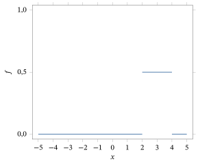
Defina uma função \(f : R^1 \to R^1\) por \[ f(x) = \begin{cases} e^{-x} & x \ge 0\\ 0 & x < 0. \end{cases} \] Então, evidentemente, \(f(x) \ge 0\) para todo \(x\). Além disso, \[ \int_{-\infty}^{\infty} f(x)\, dx = \int_0^{\infty} e^{-x}\, dx = -e^{-x}\,\Big|_0^{\infty} = (-0) - (-1) = 1. \] Portanto, \(f\) é uma função densidade. Veja a Figura 2.4.2 para um gráfico dessa densidade.
Considere agora uma variável aleatória \(X\) com essa função densidade \(f\). Se \(0 \le a \le b < \infty\), então \[ P(a \le X \le b) = \int_a^b f(x)\, dx = \int_a^b e^{-x}\, dx = (-e^{-b}) - (-e^{-a}) = e^{-a} - e^{-b}. \] Diz-se que a variável aleatória \(X\) tem a distribuição Exponencial\((1)\), o que escrevemos como \(X \sim \text{Exponencial}(1)\). A distribuição exponencial tem muitas propriedades importantes, que exploraremos nas próximas seções.
Seja \(\lambda > 0\) uma constante fixa. Defina uma função \(f : R^1 \to R^1\) por \[ f(x) = \begin{cases} \lambda\, e^{-\lambda x} & x \ge 0\\ 0 & x < 0. \end{cases} \] Então, evidentemente, \(f(x) \ge 0\) para todo \(x\). Além disso, \[ \int_{-\infty}^{\infty} f(x)\, dx = \int_0^{\infty} \lambda e^{-\lambda x}\, dx = -e^{-\lambda x}\,\Big|_0^{\infty} = (-0) - (-1) = 1. \] Portanto, \(f\) é novamente uma função densidade. (Se \(\lambda = 1\), isso corresponde à densidade Exponencial\((1)\).)
Se \(X\) é uma variável aleatória com essa função densidade \(f\), então \[ P(a \le X \le b) = \int_a^b \lambda\, e^{-\lambda x}\, dx = (-e^{-\lambda b}) - (-e^{-\lambda a}) = e^{-\lambda a} - e^{-\lambda b} \] para \(0 \le a \le b < \infty\). Diz-se que a variável aleatória \(X\) tem a distribuição Exponencial\((\lambda)\); escrevemos isso como \(X \sim \text{Exponencial}(\lambda)\). Observe que alguns livros e pacotes de software substituem \(\lambda\) por \(1/\lambda\) na definição da distribuição Exponencial\((\lambda)\) — sempre verifique isso ao usar outro livro ou um software.
Uma distribuição exponencial pode ser usada muitas vezes para modelar tempos de vida. Por exemplo, certo tipo de lâmpada produzido por um fabricante poderia seguir uma distribuição Exponencial\((\lambda)\), para uma escolha adequada de \(\lambda\). Com isso queremos dizer que o tempo de vida31 \(X\) de uma lâmpada selecionada ao acaso entre as produzidas por esse fabricante tem probabilidade \[ P(X \ge x) = \int_x^{\infty} \lambda e^{-\lambda z}\, dz = e^{-\lambda x} \] de durar mais do que \(x\), em quaisquer unidades de tempo que estejam sendo usadas. Veremos no Capítulo 3 que, numa aplicação específica, o valor \(1/\lambda\) corresponde ao tempo de vida médio das lâmpadas.
Como outra aplicação dessa distribuição, considere uma situação que envolve um atendente, por exemplo, um caixa de uma lanchonete de fast-food, um caixa eletrônico, uma central telefônica etc. Unidades chegam para atendimento de forma aleatória e formam uma fila quando o atendente está ocupado. Muitas vezes o número de chegadas ao atendente, num intervalo de tempo específico \(t\), pode ser modelado por uma distribuição Poisson\((\lambda t)\). Seja agora \(T_1\) o tempo até a primeira chegada. Então temos \[ P(T_1 > t) = P(\text{nenhuma chegada em } (0, t]) = \frac{(\lambda t)^0}{0!} e^{-\lambda t} = e^{-\lambda t} \] e \(T_1\) tem densidade dada por \[ f(t) = -\frac{d}{dt} \int_t^{\infty} f(z)\, dz = -\frac{d}{dt} P(T_1 > t) = \lambda e^{-\lambda t}. \] Logo, \(T_1 \sim \text{Exponencial}(\lambda)\).
A função gama32 é definida por \[ \Gamma(\alpha) = \int_0^{\infty} t^{\alpha-1} e^{-t}\, dt, \qquad \alpha > 0. \] Acontece (veja o Problema 2.4.15) que \begin{equation} \Gamma(\alpha + 1) = \alpha\, \Gamma(\alpha) \tag{2.4.7} \end{equation} e que, se \(n\) é um inteiro positivo, então \(\Gamma(n) = (n - 1)!\), enquanto \(\Gamma(1/2) = \sqrt{\pi}\).
Podemos usar a função gama para definir a densidade da distribuição Gama\((\alpha, \lambda)\), da seguinte forma. Sejam \(\alpha > 0\) e \(\lambda > 0\), e defina uma função \(f\) por \begin{equation} f(x) = \frac{\lambda^{\alpha} x^{\alpha-1}}{\Gamma(\alpha)}\, e^{-\lambda x} \tag{2.4.8} \end{equation} quando \(x > 0\), com \(f(x) = 0\) para \(x \le 0\). Então, evidentemente, \(f \ge 0\). Além disso, não é difícil verificar (veja o Problema 2.4.17) que \(\int_0^{\infty} f(x)\, dx = 1\). Portanto, \(f\) é uma função densidade.
Diz-se que uma variável aleatória \(X\) com função densidade \(f\) dada por (2.4.8) tem a distribuição Gama\((\alpha, \lambda)\); escrevemos isso como \(X \sim \text{Gama}(\alpha, \lambda)\). Observe que alguns livros e pacotes de software substituem \(\lambda\) por \(1/\lambda\) na definição da distribuição Gama\((\alpha, \lambda)\) — sempre verifique isso ao usar outro livro ou um software.
O caso \(\alpha = 1\) corresponde (porque \(\Gamma(1) = 0! = 1\)) à distribuição Exponencial\((\lambda)\): \(\text{Gama}(1, \lambda)\) \({}= \text{Exponencial}(\lambda)\). Na Figura 2.4.2, traçamos os gráficos de várias funções densidade Gama\((\alpha, \lambda)\).
Uma distribuição gama também pode ser usada para modelar tempos de vida. Como mostra a Figura 2.4.2, a família gama oferece uma variedade de formas para escolher muito maior do que a família exponencial.
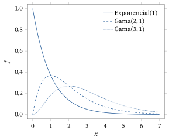
Definimos agora uma função \(\phi : R^1 \to R^1\) por \begin{equation} \phi(x) = \frac{1}{\sqrt{2\pi}} e^{-x^2/2}. \tag{2.4.9} \end{equation} Essa função \(\phi\) é a famosa “curva em forma de sino”, pois seu gráfico tem a forma de um sino, como mostra a Figura 2.4.3.
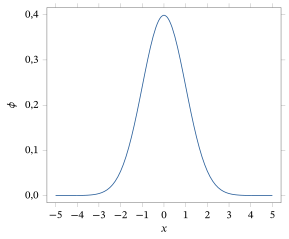
Temos o seguinte resultado para \(\phi\).
A função \(\phi\) dada por (2.4.9) é uma função densidade.
Veja a Seção 2.11 para a demonstração deste resultado.
Isso leva às seguintes distribuições importantes.
Seja \(X\) uma variável aleatória com a função densidade \(\phi\) dada por (2.4.9). Isso significa que, para \(-\infty < a \le b < \infty\), \[ P(a \le X \le b) = \int_a^b \phi(x)\, dx = \int_a^b \frac{1}{\sqrt{2\pi}}\, e^{-x^2/2}\, dx. \] Diz-se que a variável aleatória \(X\) tem a distribuição \(N(0, 1)\) (ou a distribuição normal padrão33); escrevemos isso como \(X \sim N(0, 1)\).
Sejam \(\mu \in R^1\) e \(\sigma > 0\). Seja \(f\) a função definida por \[ f(x) = \frac{1}{\sigma}\, \phi\Bigl(\frac{x - \mu}{\sigma}\Bigr) = \frac{1}{\sigma\sqrt{2\pi}}\, e^{-(x-\mu)^2/2\sigma^2}. \] (Se \(\mu = 0\) e \(\sigma = 1\), isso corresponde ao exemplo anterior.) Evidentemente, \(f \ge 0\). Além disso, fazendo \(y = (x - \mu)/\sigma\), temos \begin{align*} \int_{-\infty}^{\infty} f(x)\, dx &= \int_{-\infty}^{\infty} \sigma^{-1} \phi((x-\mu)/\sigma)\, dx\\ &= \int_{-\infty}^{\infty} \sigma^{-1} \phi(y) \sigma\, dy = \int_{-\infty}^{\infty} \phi(y)\, dy = 1. \end{align*} Portanto, \(f\) é uma função densidade.
Seja \(X\) uma variável aleatória com essa função densidade \(f\). Diz-se que a variável aleatória \(X\) tem a distribuição \(N(\mu, \sigma^2)\); escrevemos isso como \(X \sim N(\mu, \sigma^2)\). Na Figura 2.4.4, traçamos os gráficos das densidades \(N(0, 1)\) e \(N(1, 1)\). Observe que mudanças em \(\mu\) simplesmente deslocam a densidade, sem mudar sua forma. Na Figura 2.4.5, traçamos os gráficos das densidades \(N(0, 1)\) e \(N(0, 4)\). Observe que as duas densidades estão centradas em 0, mas a densidade \(N(0, 4)\) é muito mais espalhada. O valor de \(\sigma^2\) controla o grau de dispersão.
A distribuição \(N(\mu, \sigma^2)\), para alguma escolha de \(\mu\) e \(\sigma^2\), aparece com bastante frequência nas aplicações. Parte da razão para isso é um resultado importante conhecido como teorema central do limite34, que discutiremos na Seção 4.4. Em particular, esse resultado leva ao uso de uma distribuição normal para aproximar outras distribuições, assim como usamos a distribuição de Poisson para aproximar a distribuição binomial no Exemplo 2.3.6.
Numa população humana grande, não é incomum que várias medidas corporais tenham distribuição normal (pelo menos com um grau razoável de aproximação). Por exemplo, suponhamos que as alturas (medidas em pés) dos estudantes de certa universidade tenham distribuição \(N(\mu, \sigma^2)\) para alguma escolha de \(\mu\) e \(\sigma^2\). Então a probabilidade de que um estudante selecionado ao acaso tenha altura entre \(a\) e \(b\) pés, com \(a < b\), é dada por \[ \int_a^b \frac{1}{\sigma\sqrt{2\pi}}\, e^{-(x-\mu)^2/2\sigma^2}\, dx. \] Na Seção 2.5, discutiremos como calcular uma integral como essa. Mais adiante neste texto, discutiremos como escolher um valor adequado para \(\mu\) e \(\sigma^2\) e como avaliar se alguma distribuição normal é adequada para modelar a distribuição de uma variável definida numa população específica.
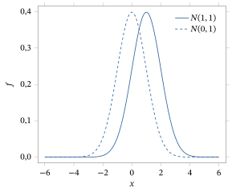
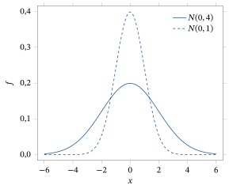
Dada uma variável aleatória absolutamente contínua \(X\), escreveremos sua densidade como \(f_X\), ou como \(f\) se não houver confusão. Variáveis aleatórias absolutamente contínuas serão usadas extensamente nos capítulos seguintes deste livro.
Por fim, observamos que funções densidade não são únicas. De fato, se \(f\) é uma função densidade e mudamos seu valor num número finito de pontos, então o valor de \(\int_a^b f(x)\, dx\) continua inalterado. Portanto, a função modificada também serve como densidade correspondente à mesma distribuição. Por outro lado, muitas vezes uma escolha “melhor” particular de função densidade é clara. Por exemplo, se a função densidade pode ser escolhida contínua, ou mesmo contínua por partes35, então essa escolha é preferível a alguma outra versão da função densidade.
Para dar um exemplo específico, para a distribuição Uniforme\([0, 1]\), poderíamos substituir a densidade \(f\) de (2.4.3) por \[ g(x) = \begin{cases} 1 & 0 < x < 1\\ 0 & \text{caso contrário,} \end{cases} \] ou até por \[ h(x) = \begin{cases} 1 & 0 < x < 3/4\\ 17 & x = 3/4\\ 1 & 3/4 < x < 1\\ 0 & \text{caso contrário.} \end{cases} \] Qualquer uma dessas novas densidades definiria novamente a distribuição Uniforme\([0, 1]\), porque teríamos \(\int_a^b f(x)\, dx\) \({}= \int_a^b g(x)\, dx\) \({}= \int_a^b h(x)\, dx\) para quaisquer \(a < b\).
Por outro lado, as densidades \(f\) e \(g\) são ambas contínuas por partes e, portanto, são escolhas naturais para a função densidade, enquanto \(h\) é uma escolha desnecessariamente complicada. Por isso, ao lidar com funções densidade, sempre suporemos que elas são tão contínuas quanto possível, como \(f\) e \(g\), em vez de terem descontinuidades removíveis como \(h\). Isso será particularmente importante quando discutirmos os métodos de verossimilhança36 no Capítulo 6.
Resumo da Seção 2.4
- Uma variável aleatória \(X\) é contínua se \(P(X = x) = 0\) para todo \(x\), isto é, se nenhuma parte de sua probabilidade vem de ser igual a valores particulares.
- \(X\) é absolutamente contínua se existe uma função densidade \(f_X\) com \(P(a \le X \le b) = \int_a^b f_X(x)\, dx\) para todos \(a < b\).
- Distribuições absolutamente contínuas importantes incluem a uniforme, a exponencial, a gama e a normal.
Exercícios
2.4.1 Seja \(U \sim \text{Uniforme}[0, 1]\). Calcule cada uma das probabilidades a seguir. (a) \(P(U \le 0)\)(b) \(P(U = 1/2)\)(c) \(P(U < -1/3)\)(d) \(P(U \le 2/3)\)(e) \(P(U < 2/3)\)(f) \(P(U < 1)\)(g) \(P(U \le 17)\)
2.4.2 Seja \(W \sim \text{Uniforme}[1, 4]\). Calcule cada uma das probabilidades a seguir. (a) \(P(W \ge 5)\)(b) \(P(W \ge 2)\)(c) \(P(W^2 \le 9)\) (Sugestão: se \(W^2 \le 9\), como \(W\) tem de ser?)(d) \(P(W^2 \le 2)\)
2.4.3 Seja \(Z \sim \text{Exponencial}(4)\). Calcule cada uma das probabilidades a seguir. (a) \(P(Z \ge 5)\)(b) \(P(Z \ge -5)\)(c) \(P(Z^2 \ge 9)\)(d) \(P(Z^4 - 17 \ge 9)\)
2.4.4 Determine para quais constantes \(c\) as funções a seguir são densidades. (a) \(f(x) = cx\) em \((0, 1)\) e 0 caso contrário.(b) \(f(x) = cx^n\) em \((0, 1)\) e 0 caso contrário, para \(n\) um inteiro não negativo.(c) \(f(x) = cx^{1/2}\) em \((0, 2)\) e 0 caso contrário.(d) \(f(x) = c \sin x\) em \((0, \pi/2)\) e 0 caso contrário.
2.4.5 A função definida por \(f(x) = x/3\) para \(-1 < x < 2\) e 0 caso contrário é uma densidade? Por quê?
2.4.6 Seja \(X \sim \text{Exponencial}(3)\). Calcule cada uma das probabilidades a seguir. (a) \(P(0 < X < 1)\)(b) \(P(0 < X < 3)\)(c) \(P(0 < X < 5)\)(d) \(P(2 < X < 5)\)(e) \(P(2 < X < 10)\)(f) \(P(X > 2)\)
2.4.7 Seja \(M > 0\) e suponha que \(f(x) = cx^2\) para \(0 < x < M\), e \(f(x) = 0\) caso contrário. Para que valor de \(c\) (dependendo de \(M\)) \(f\) é uma densidade?
2.4.8 Suponha que \(X\) tenha densidade \(f\) e que \(f(x) \ge 2\) para \(0{,}3 < x < 0{,}4\). Prove que \(P(0{,}3 < X < 0{,}4) \ge 0{,}2\).
2.4.9 Suponha que \(X\) tenha densidade \(f\) e \(Y\) tenha densidade \(g\). Suponha que \(f(x) > g(x)\) para \(1 < x < 2\). Prove que \(P(1 < X < 2) > P(1 < Y < 2)\).
2.4.10 Suponha que \(X\) tenha densidade \(f\) e \(Y\) tenha densidade \(g\). É possível que \(f(x) > g(x)\) para todo \(x\)? Explique.
2.4.11 Suponha que \(X\) tenha densidade \(f\) e que \(f(x) > f(y)\) sempre que \(0 < x < 1 < y < 2\). Segue-se que \(P(0 < X < 1) > P(1 < X < 2)\)? Explique.
2.4.12 Suponha que \(X\) tenha densidade \(f\) e que \(f(x) > f(y)\) sempre que \(0 < x < 1 < y < 3\). Segue-se que \(P(0 < X < 1) > P(1 < X < 3)\)? Explique.
2.4.13 Suponha que \(X \sim N(0, 1)\) e \(Y \sim N(1, 1)\). Prove que \(P(X < 3) > P(Y < 3)\).
Problemas
2.4.14 Seja \(Y \sim \text{Exponencial}(\lambda)\) para algum \(\lambda > 0\). Sejam \(y, h \ge 0\). Prove que \(P(Y - h \ge y \mid Y \ge h) = P(Y \ge y)\). Isto é, condicionalmente a saber que \(Y \ge h\), a variável aleatória \(Y - h\) tem a mesma distribuição que \(Y\) tinha originalmente. Essa é a chamada propriedade de falta de memória das distribuições exponenciais; ela diz que elas “esquecem” imediatamente seu comportamento passado.
2.4.15 Considere a função gama \(\Gamma(\alpha)\) \({}= \int_0^{\infty} t^{\alpha-1} e^{-t}\, dt\), para \(\alpha > 0\). (a) Prove que \(\Gamma(\alpha + 1) = \alpha\, \Gamma(\alpha)\). (Sugestão: use integração por partes37.)(b) Prove que \(\Gamma(1) = 1\).(c) Use os itens (a) e (b) para mostrar que \(\Gamma(n) = (n - 1)!\) se \(n\) é um inteiro positivo.
2.4.16 Use o fato de que \(\Gamma(1/2) = \sqrt{\pi}\) para dar uma demonstração alternativa de que \(\int_{-\infty}^{\infty} \phi(x)\, dx = 1\) (como no Teorema 2.4.2). (Sugestão: faça a substituição \(t = x^2/2\).)
2.4.17 Seja \(f\) a densidade da distribuição Gama\((\alpha, \lambda)\), como em (2.4.8). Prove que \(\int_0^{\infty} f(x)\, dx = 1\). (Sugestão: tome \(t = \lambda x\).)
2.4.18 (Distribuição logística38) Considere a função dada por \(f(x) = e^{-x}\left(1 + e^{-x}\right)^{-2}\) para \(-\infty < x < \infty\). Prove que \(f\) é uma função densidade.
2.4.19 (Distribuição Weibull\((\alpha)\)) Considere, para \(\alpha > 0\) fixo, a função dada por \(f(x) = \alpha x^{\alpha-1} e^{-x^{\alpha}}\) para \(0 < x < \infty\) e 0 caso contrário. Prove que \(f\) é uma função densidade.
2.4.20 (Distribuição Pareto\((\alpha)\)) Considere, para \(\alpha > 0\) fixo, a função dada por \(f(x) = \alpha\,(1 + x)^{-\alpha-1}\) para \(0 < x < \infty\) e 0 caso contrário. Prove que \(f\) é uma função densidade.
2.4.21 (Distribuição de Cauchy39) Considere a função dada por \[ f(x) = \frac{1}{\pi} \frac{1}{1 + x^2} \] para \(-\infty < x < \infty\). Prove que \(f\) é uma função densidade. (Sugestão: lembre-se da derivada de \(\arctan(x)\).)
2.4.22 (Distribuição de Laplace40) Considere a função dada por \(f(x) = e^{-|x|}/2\) para \(-\infty < x < \infty\) e 0 caso contrário. Prove que \(f\) é uma função densidade.
2.4.23 (Distribuição de valor extremo41) Considere a função dada por \(f(x) = e^{-x} \exp\left\{-e^{-x}\right\}\) para \(-\infty < x < \infty\) e 0 caso contrário. Prove que \(f\) é uma função densidade.
2.4.24 (Distribuição Beta\((a, b)\)) A função beta42 é a função \(B : (0, \infty)^2 \to R^1\) dada por \[ B(a, b) = \int_0^1 x^{a-1} (1 - x)^{b-1}\, dx. \] Pode-se provar (veja o Desafio 2.4.25) que \begin{equation} B(a, b) = \frac{\Gamma(a)\, \Gamma(b)}{\Gamma(a + b)} \tag{2.4.10} \end{equation} (a) Prove que a função \(f\) dada por \(f(x) = B^{-1}(a, b)\, x^{a-1} (1 - x)^{b-1}\), para \(0 < x < 1\), e 0 caso contrário, é uma função densidade.(b) Determine e trace o gráfico da densidade quando \(a = 1\), \(b = 1\). Você sabe o nome dessa distribuição?(c) Determine e trace o gráfico da densidade quando \(a = 2\), \(b = 1\).(d) Determine e trace o gráfico da densidade quando \(a = 1\), \(b = 2\).(e) Determine e trace o gráfico da densidade quando \(a = 2\), \(b = 2\).
Desafios
2.4.25 Prove (2.4.10). (Sugestão: use \(\Gamma(a)\, \Gamma(b)\) \({}= \int_0^{\infty} \int_0^{\infty} x^{a-1} y^{b-1} e^{-x-y}\, dx\, dy\) e faça a mudança de variável43 \(u = x + y\), \(v = x/u\).)
Tópicos para discussão
2.4.26 Suponha que \(X \sim N(0, 1)\) e \(Y \sim N(0, 4)\). Qual você acha que é maior, \(P(X > 2)\) ou \(P(Y > 2)\)? Por quê? (Sugestão: veja a Figura 2.4.5.)
2.5 Funções de Distribuição Acumulada
Se \(X\) é uma variável aleatória, então sua distribuição consiste nos valores de \(P(X \in B)\) para todos os subconjuntos \(B\) dos números reais. No entanto, há certos subconjuntos especiais \(B\) com os quais é conveniente trabalhar. Especificamente, se \(B = (-\infty, x]\) para algum número real \(x\), então \(P(X \in B) = P(X \le x)\). Acontece (ver Teorema 2.5.1) que basta acompanhar \(P(X \le x)\) para todos os números reais \(x\).
Isso motiva a definição a seguir.
Dada uma variável aleatória \(X\), sua função de distribuição acumulada44 (ou função de distribuição, ou fda, para abreviar) é a função \(F_X : R^1 \to [0, 1]\) definida por \(F_X(x) = P(X \le x)\). (Quando não há risco de confusão, às vezes escrevemos \(F(x)\) em vez de \(F_X(x)\).)
A razão de chamar \(F_X\) de “função de distribuição” é que a distribuição completa de \(X\) pode ser determinada diretamente a partir de \(F_X\). Mostramos isso para alguns eventos de importância especial.
Primeiro, suponha que \(B = (a, b]\) seja um intervalo aberto à esquerda. Usando (1.3.3), \[ P(X \in B) = P(a < X \le b) = P(X \le b) - P(X \le a) = F_X(b) - F_X(a). \]
Agora, suponha que \(B = [a, b]\) seja um intervalo fechado. Usando a continuidade da probabilidade (ver Teorema 1.6.1), temos \begin{align*} P(X \in B) &= P(a \le X \le b) = \lim_{n \to \infty} P(a - 1/n < X \le b)\\ &= \lim_{n \to \infty} \bigl(F_X(b) - F_X(a - 1/n)\bigr) = F_X(b) - \lim_{n \to \infty} F_X(a - 1/n). \end{align*} Às vezes escrevemos \(\lim_{n \to \infty} F_X(a - 1/n)\) como \(F_X(a^-)\), de modo que \(P(X \in [a, b]) = F_X(b) - F_X(a^-)\). No caso particular em que \(a = b\), temos \begin{equation} P(X = a) = F_X(a) - F_X(a^-). \tag{2.5.1} \end{equation}
Da mesma forma, se \(B = (a, b)\) é um intervalo aberto, então \[ P(X \in B) = P(a < X < b) = \lim_{n \to \infty} F_X(b - 1/n) - F_X(a) = F_X(b^-) - F_X(a). \] Se \(B = [a, b)\) é um intervalo aberto à direita, então \begin{align*} P(X \in B) &= P(a \le X < b) = \lim_{n \to \infty} F_X(b - 1/n) - \lim_{n \to \infty} F_X(a - 1/n)\\ &= F_X(b^-) - F_X(a^-). \end{align*} Concluímos que podemos determinar \(P(X \in B)\) a partir de \(F_X\) sempre que \(B\) for qualquer tipo de intervalo.
Agora, se \(B\) for, em vez disso, uma união de intervalos, então podemos usar a aditividade para, de novo, calcular \(P(X \in B)\) a partir de \(F_X\). Por exemplo, se \[ B = (a_1, b_1] \cup (a_2, b_2] \cup \cdots \cup (a_k, b_k], \] com \(a_1 < b_1 < a_2 < b_2 < \cdots < a_k < b_k\), então, pela aditividade, \begin{align*} P(X \in B) &= P(X \in (a_1, b_1]) + \cdots + P(X \in (a_k, b_k])\\ &= F_X(b_1) - F_X(a_1) + \cdots + F_X(b_k) - F_X(a_k). \end{align*} Portanto, ainda podemos calcular \(P(X \in B)\) apenas a partir dos valores de \(F_X(x)\).
Seja \(X\) uma variável aleatória qualquer, com função de distribuição acumulada \(F_X\). Seja \(B\) um subconjunto qualquer dos números reais. Então \(P(X \in B)\) pode ser determinada apenas a partir dos valores de \(F_X(x)\).
(Esboço) Acontece que todos os subconjuntos \(B\) relevantes podem ser obtidos aplicando operações de limite a uniões de intervalos. Portanto, como \(F_X\) determina \(P(X \in B)\) quando \(B\) é uma união de intervalos, segue que \(F_X\) determina \(P(X \in B)\) para todos os subconjuntos \(B\) relevantes.
2.5.1 Propriedades das Funções de Distribuição
À luz do Teorema 2.5.1, vemos que as funções de distribuição acumulada \(F_X\) são muito úteis. Assim, registramos aqui algumas de suas propriedades básicas.
Seja \(F_X\) a função de distribuição acumulada de uma variável aleatória \(X\). Então
(a) \(0 \le F_X(x) \le 1\) para todo \(x\),
(b) \(F_X(x) \le F_X(y)\) sempre que \(x \le y\) (isto é, \(F_X\) é crescente),
(c) \(\lim_{x \to +\infty} F_X(x) = 1\),
(d) \(\lim_{x \to -\infty} F_X(x) = 0\).
(a) Como \(F_X(x) = P(X \le x)\) é uma probabilidade, está entre 0 e 1.
(b) Sejam \(A = \{X \le x\}\) e \(B = \{X \le y\}\). Então, se \(x \le y\), temos \(A \subseteq B\), de modo que \(P(A) \le P(B)\). Mas \(P(A) = F_X(x)\) e \(P(B) = F_X(y)\), e o resultado segue.
(c) Seja \(A_n = \{X \le n\}\). Como \(X\) tem de assumir algum valor e, portanto, \(X \le n\) para \(n\) suficientemente grande, vemos que \(\{A_n\}\) cresce para \(S\), isto é, \(\{A_n\} \nearrow S\) (ver Seção 1.6). Portanto, pela continuidade de \(P\) (ver Teorema 1.6.1), \(\lim_{n \to \infty} P(A_n) = P(S) = 1\). Mas \(P(A_n) = P(X \le n) = F_X(n)\), e o resultado segue.
(d) Seja \(B_n = \{X \le -n\}\). Como \(X \ge -n\) para \(n\) suficientemente grande, \(\{B_n\}\) decresce para o conjunto vazio, isto é, \(\{B_n\} \searrow \emptyset\). Portanto, de novo pela continuidade de \(P\), \(\lim_{n \to \infty} P(B_n)\) \({}= P(\emptyset)\) \({}= 0\). Mas \(P(B_n) = P(X \le -n) = F_X(-n)\), e o resultado segue.
Se \(F_X\) é uma função de distribuição acumulada, então \(F_X\) também é contínua à direita45; ver Problema 2.5.17. Acontece que, se uma função \(F : R^1 \to R^1\) satisfaz as propriedades (a) a (d) e é contínua à direita, então existe uma única medida de probabilidade \(P\) em \(R^1\) tal que \(F\) é a fda de \(P\). Não demonstraremos esse resultado aqui.46
2.5.2 Fdas de Distribuições Discretas
Podemos calcular a função de distribuição acumulada (fda) \(F_X\) de uma variável aleatória discreta a partir de sua função de probabilidade \(p_X\), como segue.
Seja \(X\) uma variável aleatória discreta com função de probabilidade \(p_X\). Então sua função de distribuição acumulada \(F_X\) satisfaz \(F_X(x) = \sum_{y \le x} p_X(y)\).
Sejam \(x_1, x_2, \ldots\) os valores possíveis de \(X\). Então \(F_X(x) = P(X \le x)\) \({}= \sum_{x_i \le x} P(X = x_i)\) \({}= \sum_{y \le x} P(X = y)\) \({}= \sum_{y \le x} p_X(y)\), como afirmado.
Portanto, se \(X\) é uma variável aleatória discreta, então, pelo Teorema 2.5.3, \(F_X\) é constante por partes47, com um salto de tamanho \(p_X(x_i)\) em cada valor \(x_i\). O gráfico de uma distribuição assim tem a aparência do que está representado na Figura 2.5.1.
Vejamos um exemplo de função de distribuição de uma variável aleatória discreta.
Considere o lançamento de um dado honesto de seis faces, de modo que \(S = \{1, 2, 3, 4, 5, 6\}\), com \(P(s) = 1/6\) para cada \(s \in S\). Seja \(X\) o número mostrado no dado dividido por 6, de modo que \(X(s) = s/6\) para \(s \in S\). Quanto vale \(F_X(x)\)? Como \(X(s) \le x\) se e somente se \(s \le 6x\), temos \[ F_X(x) = P(X \le x) = \sum_{s \in S,\, s \le 6x} P(s) = \sum_{s \in S,\, s \le 6x} \frac{1}{6} = \frac{1}{6}\, \bigl|\{s \in S : s \le 6x\}\bigr| . \] Isto é, para calcular \(F_X(x)\), contamos quantos elementos \(s \in S\) satisfazem \(s \le 6x\) e multiplicamos esse número por \(1/6\). Portanto, \[ F_X(x) = \begin{cases} 0 & x < 1/6\\ 1/6 & 1/6 \le x < 2/6\\ 2/6 & 2/6 \le x < 3/6\\ 3/6 & 3/6 \le x < 4/6\\ 4/6 & 4/6 \le x < 5/6\\ 5/6 & 5/6 \le x < 1\\ 6/6 & 1 \le x. \end{cases} \]
Na Figura 2.5.1, apresentamos um gráfico da função \(F_X\) e observamos que se trata de uma função escada48. Observe (ver Exercício 2.5.1) que as propriedades do Teorema 2.5.2 são de fato satisfeitas pela função \(F_X\).
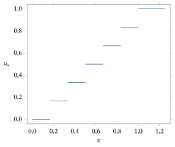
2.5.3 Fdas de Distribuições Absolutamente Contínuas
Uma vez conhecida a densidade \(f_X\) de \(X\), é fácil calcular a função de distribuição acumulada de \(X\), como segue.
Seja \(X\) uma variável aleatória absolutamente contínua, com função densidade \(f_X\). Então a função de distribuição acumulada \(F_X\) de \(X\) satisfaz \[ F_X(x) = \int_{-\infty}^{x} f_X(t)\, dt \] para \(x \in R^1\).
Isso segue de (2.4.5), tomando \(b = x\) e fazendo \(a \to -\infty\).
Pelo teorema fundamental do cálculo, vemos que também é possível calcular uma densidade \(f_X\) uma vez conhecida a função de distribuição acumulada \(F_X\).
Seja \(X\) uma variável aleatória absolutamente contínua, com função de distribuição acumulada \(F_X\). Seja \[ f_X(x) = \frac{d}{dx} F_X(x) = F_X'(x). \] Então \(f_X\) é uma função densidade de \(X\).
Observamos que \(F_X\) pode não ser diferenciável em todo ponto, de modo que a função \(f_X\) do corolário pode não estar definida em certos pontos isolados. A função densidade pode assumir qualquer valor nesses pontos.
Considere novamente a distribuição \(N(0, 1)\), com densidade \(\phi\) dada por (2.4.9). De acordo com o Teorema 2.5.4, a função de distribuição acumulada \(F\) dessa distribuição é dada por \[ F(x) = \int_{-\infty}^{x} \phi(t)\, dt = \int_{-\infty}^{x} \frac{1}{\sqrt{2\pi}}\, e^{-t^2/2}\, dt. \] Acontece que é comprovadamente impossível calcular essa integral de forma exata, exceto para certos valores específicos de \(x\) (por exemplo, \(x = -\infty\), \(x = 0\) ou \(x = \infty\)). Ainda assim, a função de distribuição acumulada da distribuição \(N(0, 1)\) é tão importante que recebe um símbolo especial. Além disso, ela está tabelada na Tabela D.2 do Apêndice D para certos valores de \(x\).
O símbolo \(\Phi\) denota a função de distribuição acumulada de uma distribuição normal padrão, definida por \begin{equation} \Phi(x) = \int_{-\infty}^{x} \phi(t)\, dt = \int_{-\infty}^{x} \frac{1}{\sqrt{2\pi}}\, e^{-t^2/2}\, dt, \tag{2.5.2} \end{equation} para \(x \in R^1\).
Suponha que \(X \sim N(0, 1)\) e que queremos calcular \[ P(-0{,}63 \le X \le 2{,}0) = P(X \le 2{,}0) - P(X \le -0{,}63). \] Então \(P(X \le 2) = \Phi(2)\), enquanto \(P(X \le -0{,}63) = \Phi(-0{,}63)\). Infelizmente, \(\Phi(2)\) e \(\Phi(-0{,}63)\) não podem ser calculados de forma exata, mas podem ser aproximados usando um computador para calcular numericamente a integral (2.5.2). Praticamente todos os pacotes de software estatístico fornecem essas aproximações, mas também há muitas tabelas disponíveis, como a Tabela D.2. Usando essa tabela, obtemos \(\Phi(2) = 0{,}9772\), enquanto \(\Phi(-0{,}63) = 0{,}2643\). Isso implica que \[ P(-0{,}63 \le X \le 2{,}0) = \Phi(2{,}0) - \Phi(-0{,}63) = 0{,}9772 - 0{,}2643 = 0{,}7129. \]
Agora, suponha que \(X \sim N(\mu, \sigma^2)\) e que queremos calcular \(P(a \le X \le b)\). Denotando por \(f\) a densidade de \(X\) e seguindo o Exemplo 2.4.8, temos \[ P(a \le X \le b) = \int_a^b f(x)\, dx = \int_a^b \frac{1}{\sigma}\, \phi\!\left(\frac{x - \mu}{\sigma}\right) dx. \] Então, novamente seguindo o Exemplo 2.4.8, fazemos a substituição \(y = (x - \mu)/\sigma\) na integral acima e obtemos \[ P(a \le X \le b) = \int_{\frac{a-\mu}{\sigma}}^{\frac{b-\mu}{\sigma}} \phi(x)\, dx = \Phi\!\left(\frac{b - \mu}{\sigma}\right) - \Phi\!\left(\frac{a - \mu}{\sigma}\right). \] Portanto, probabilidades normais em geral podem ser calculadas usando a função \(\Phi\).
Suponha agora que \(a = -0{,}63\), \(b = 2{,}0\), \(\mu = 1{,}3\) e \(\sigma^2 = 4\). Obtemos \begin{align*} P(-0{,}63 \le X \le 2{,}0) &= \Phi\!\left(\frac{2{,}0 - 1{,}3}{2}\right) - \Phi\!\left(\frac{-0{,}63 - 1{,}3}{2}\right)\\ &= \Phi(0{,}35) - \Phi(-0{,}965) = 0{,}6368 - 0{,}16725\\ &= 0{,}46955 \end{align*} porque, pela Tabela D.2, \(\Phi(0{,}35) = 0{,}6368\). Aproximamos \(\Phi(-0{,}965)\) pela interpolação linear entre os valores \(\Phi(-0{,}96) = 0{,}1685\) e \(\Phi(-0{,}97) = 0{,}1660\), dada por \begin{align*} \Phi(-0{,}965) &\approx \Phi(-0{,}96) + \frac{\Phi(-0{,}97) - \Phi(-0{,}96)}{-0{,}97 - (-0{,}96)}\,\bigl(-0{,}965 - (-0{,}96)\bigr)\\ &= 0{,}1685 + \frac{0{,}1660 - 0{,}1685}{-0{,}97 - (-0{,}96)}\,\bigl(-0{,}965 - (-0{,}96)\bigr) = 0{,}16725. \end{align*}
Seja \(X\) uma variável aleatória com função de distribuição acumulada dada por \[ F_X(x) = \begin{cases} 0 & x < 2\\ (x - 2)^4/16 & 2 \le x < 4\\ 1 & 4 \le x. \end{cases} \] Na Figura 2.5.2, apresentamos um gráfico de \(F_X\).
Suponha que, para essa variável aleatória \(X\), queremos calcular \(P(X \le 3)\), \(P(X < 3)\), \(P(X > 2{,}5)\) e \(P(1{,}2 < X \le 3{,}4)\). Podemos calcular todas essas probabilidades diretamente a partir de \(F_X\). Temos \begin{align*} P(X \le 3) &= F_X(3) = (3 - 2)^4/16 = 1/16,\\ P(X < 3) &= F_X(3^-) = \lim_{n \to \infty} (3 - (1/n) - 2)^4/16 = 1/16,\\ P(X > 2{,}5) &= 1 - P(X \le 2{,}5) = 1 - F_X(2{,}5)\\ &= 1 - (2{,}5 - 2)^4/16 = 1 - 0{,}0625/16 = 0{,}996,\\ P(1{,}2 < X \le 3{,}4) &= F_X(3{,}4) - F_X(1{,}2) = (3{,}4 - 2)^4/16 - 0 = 0{,}2401. \end{align*}
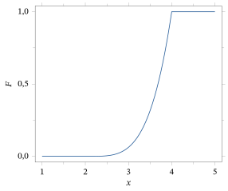
2.5.4 Distribuições de Mistura
Suponha agora que \(F_1, F_2, \ldots, F_k\) sejam funções de distribuição acumulada correspondentes a diversas distribuições. Sejam também \(p_1, p_2, \ldots, p_k\) números reais positivos com \(\sum_{i=1}^{k} p_i = 1\) (de modo que esses valores formam uma distribuição de probabilidade). Então podemos definir uma nova função \(G\) por \begin{equation} G(x) = p_1 F_1(x) + p_2 F_2(x) + \cdots + p_k F_k(x). \tag{2.5.3} \end{equation}
Verifica-se facilmente (ver Exercício 2.5.6) que a função \(G\) dada por (2.5.3) satisfaz as propriedades (a) a (d) do Teorema 2.5.2 e é contínua à direita. Portanto, \(G\) também é uma fda.
A distribuição cuja fda é dada por (2.5.3) é chamada de distribuição de mistura, porque ela mistura as várias distribuições com fdas \(F_1, \ldots, F_k\) de acordo com a distribuição de probabilidade dada pelos \(p_1, p_2, \ldots, p_k\).
Para ver como uma distribuição de mistura surge em aplicações, considere um sistema de dois estágios, como discutido na Seção 1.5.1. Seja \(Z\) uma variável aleatória que descreve o resultado do primeiro estágio, tal que \(P(Z = i) = p_i\) para \(i = 1, 2, \ldots, k\). Suponha que, no segundo estágio, observamos uma variável aleatória \(Y\) cuja distribuição depende do resultado do primeiro estágio, de modo que \(Y\) tem fda \(F_i\) quando \(Z = i\). Na prática, \(F_i\) é a distribuição condicional de \(Y\), dado que \(Z = i\) (ver Seção 2.8). Então, pela lei da probabilidade total (ver Teorema 1.5.1), a função de distribuição de \(Y\) é dada por \[ P(Y \le y) = \sum_{i=1}^{k} P(Y \le y \mid Z = i)\, P(Z = i) = \sum_{i=1}^{k} p_i F_i(y) = G(y). \] Portanto, a função de distribuição de \(Y\) é dada por uma mistura das \(F_i\).
Considere o exemplo a seguir.
Suponha que temos duas tigelas contendo fichas. A tigela nº 1 contém uma ficha marcada com 0, duas fichas marcadas com 3 e uma ficha marcada com 5. A tigela nº 2 contém uma ficha marcada com 2, uma ficha marcada com 4 e uma ficha marcada com 5. Seja agora \(X_i\) a variável aleatória correspondente a retirar ao acaso uma ficha da tigela nº \(i\). Portanto, \(P(X_1 = 0) = 1/4\), \(P(X_1 = 3) = 1/2\) e \(P(X_1 = 5) = 1/4\), enquanto \(P(X_2 = 2) = P(X_2 = 4) = P(X_2 = 5) = 1/3\). Então \(X_1\) tem função de distribuição dada por \[ F_1(x) = \begin{cases} 0 & x < 0\\ 1/4 & 0 \le x < 3\\ 3/4 & 3 \le x < 5\\ 1 & x \ge 5 \end{cases} \] e \(X_2\) tem função de distribuição dada por \[ F_2(x) = \begin{cases} 0 & x < 2\\ 1/3 & 2 \le x < 4\\ 2/3 & 4 \le x < 5\\ 1 & x \ge 5. \end{cases} \]
Suponha agora que escolhemos uma tigela sorteando ao acaso uma carta de um baralho de cinco cartas, em que uma carta está marcada com 1 e quatro cartas estão marcadas com 2. Seja \(Z\) o valor da carta obtida, de modo que \(P(Z = 1) = 1/5\) e \(P(Z = 2) = 4/5\). Então, tendo obtido o valor \(Z = i\), observamos \(Y\) retirando ao acaso uma ficha da tigela nº \(i\). Vemos imediatamente que a fda de \(Y\) é dada por \[ G(x) = (1/5)\, F_1(x) + (4/5)\, F_2(x), \] e esta é uma mistura das fdas \(F_1\) e \(F_2\).
Como ilustram os exemplos a seguir, também é possível ter misturas infinitas de distribuições.
Suponha que \(F\) seja uma função de distribuição acumulada qualquer. Então, para qualquer número real \(y\), a função \(F_y\) definida por \(F_y(x) = F(x - y)\) também é uma função de distribuição acumulada. De fato, \(F_y\) é simplesmente uma versão “deslocada” de \(F\). Um exemplo disso está representado na Figura 2.5.3.
Se \(p_i \ge 0\) com \(\sum_i p_i = 1\) (de modo que os \(p_i\) formam uma distribuição de probabilidade), e \(y_1, y_2, \ldots\) são números reais, então podemos definir uma mistura de locação49 discreta por \[ H(x) = \sum_i p_i F_{y_i}(x) = \sum_i p_i F(x - y_i). \] De fato, o próprio deslocamento \(F_y(x) = F(x - y)\) corresponde a um caso particular de mistura de locação discreta, com \(p_1 = 1\) e \(y_1 = y\).
Além disso, se \(g\) é uma função não negativa com \(\int_{-\infty}^{\infty} g(t)\, dt = 1\) (de modo que \(g\) é uma função densidade), então podemos definir \[ H(x) = \int_{-\infty}^{\infty} F_y(x)\, g(y)\, dy = \int_{-\infty}^{\infty} F(x - y)\, g(y)\, dy. \] Então não é difícil ver que \(H\) também é uma função de distribuição acumulada, chamada de mistura de locação contínua de \(F\). A ideia é que \(H\) corresponde a uma mistura de diferentes distribuições deslocadas \(F_y\), com a densidade \(g\) dando a distribuição do coeficiente de mistura \(y\).
Também podemos definir uma mistura de escala50 discreta por \[ K(x) = \sum_i p_i F(x/y_i) \] sempre que \(y_i > 0\), \(p_i \ge 0\) e \(\sum_i p_i = 1\). Da mesma forma, se \(\int_0^{\infty} g(t)\, dt = 1\), então podemos escrever \[ K(x) = \int_0^{\infty} F(x/y)\, g(y)\, dy. \] Então \(K\) também é uma função de distribuição acumulada, chamada de mistura de escala contínua de \(F\).
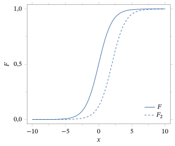
Neste ponto, você pode se perguntar se uma distribuição de mistura é discreta ou contínua. A resposta depende das distribuições que estão sendo misturadas e da distribuição de mistura. Por exemplo, misturas de locação discretas de distribuições discretas são discretas, e misturas de locação discretas de distribuições contínuas são contínuas.
Nada nos obriga, porém, a misturar apenas distribuições discretas ou apenas distribuições contínuas. Outros tipos de distribuição são considerados na seção a seguir.
2.5.5 Distribuições Nem Discretas Nem Contínuas (Avançado)
Há distribuições que não são nem discretas nem contínuas, como mostra o exemplo a seguir.
Suponha que \(X_1 \sim \text{Poisson}(3)\) seja discreta com fda \(F_1\), enquanto \(X_2 \sim N(0, 1)\) é contínua com fda \(F_2\), e que \(Y\) tenha a distribuição de mistura dada por \(F_Y(y) = (1/5)\, F_1(y) + (4/5)\, F_2(y)\). Usando (2.5.1), temos \begin{align*} P(Y = y) &= F_Y(y) - F_Y(y^-)\\ &= (1/5) F_1(y) + (4/5)\, F_2(y) - (1/5) F_1(y^-) - (4/5) F_2(y^-)\\ &= (1/5)\bigl(F_1(y) - F_1(y^-)\bigr) + (4/5)\bigl(F_2(y) - F_2(y^-)\bigr)\\ &= \frac{1}{5} P(X_1 = y) + \frac{4}{5} P(X_2 = y). \end{align*} Portanto, \[ P(Y = y) = \begin{cases} \frac{1}{5} \frac{3^y}{y!} e^{-3} & y \text{ inteiro não negativo}\\ 0 & \text{caso contrário.} \end{cases} \] Como \(P(Y = y) > 0\) para inteiros não negativos \(y\), a variável aleatória \(Y\) não é contínua. Por outro lado, temos \[ \sum_y P(Y = y) = \sum_{y=0}^{\infty} \frac{1}{5} \frac{3^y}{y!} e^{-3} = \frac{1}{5} < 1. \] Portanto, \(Y\) também não é discreta.
Na verdade, \(Y\) não é nem discreta nem contínua. Em vez disso, \(Y\) é uma mistura de uma distribuição discreta com uma contínua.
Na maior parte deste livro, trataremos separadamente as distribuições discretas e as contínuas. No entanto, é importante ter em mente que distribuições reais podem não ser nem discretas nem contínuas, mas sim uma mistura das duas.51 Na maioria das aplicações, porém, as distribuições com que lidamos são contínuas ou discretas.
Lembre-se de que uma distribuição contínua não precisa ser absolutamente contínua, isto é, ter uma densidade. Portanto, uma distribuição que é mistura de uma distribuição discreta com uma contínua pode não ser uma mistura de uma distribuição discreta com uma absolutamente contínua.
Resumo da Seção 2.5
- A função de distribuição acumulada (fda) de \(X\) é \(F_X(x) = P(X \le x)\).
- Todas as probabilidades associadas a \(X\) podem ser determinadas a partir de \(F_X\).
- À medida que \(x\) cresce de \(-\infty\) a \(\infty\), \(F_X(x)\) cresce de 0 a 1.
- Se \(X\) é discreta, então \(F_X(x) = \sum_{y \le x} P(X = y)\).
- Se \(X\) é absolutamente contínua, então \(F_X(x) = \int_{-\infty}^{x} f_X(t)\, dt\) e \(f_X(x) = F_X'(x)\).
- Escrevemos \(\Phi(x)\) para a fda da distribuição normal padrão calculada em \(x\).
- Uma distribuição de mistura tem uma fda que é uma combinação linear de outras fdas. Dois casos particulares são as misturas de locação e de escala.
- Algumas distribuições de mistura não são nem discretas nem contínuas.
Exercícios
2.5.1 Verifique explicitamente que as propriedades (a) a (d) do Teorema 2.5.2 são de fato satisfeitas pela função \(F_X\) do Exemplo 2.5.1.
2.5.2 Considere o lançamento de um dado honesto de seis faces, de modo que \(S = \{1, 2, 3, 4, 5, 6\}\) e \(P(s) = 1/6\) para todo \(s \in S\). Seja \(X\) o número mostrado no dado, de modo que \(X(s) = s\) para \(s \in S\). Seja \(Y = X^2\). Calcule a função de distribuição acumulada \(F_Y(y) = P(Y \le y)\), para todo \(y \in R^1\). Verifique explicitamente que as propriedades (a) a (d) do Teorema 2.5.2 são satisfeitas por essa função \(F_Y\).
2.5.3 Para cada uma das funções \(F\) a seguir, determine se \(F\) é ou não uma função de distribuição acumulada válida, isto é, se \(F\) satisfaz ou não as propriedades (a) a (d) do Teorema 2.5.2. (a) \(F(x) = x\) para todo \(x \in R^1\)(b) \[ F(x) = \begin{cases} 0 & x < 0\\ x & 0 \le x \le 1\\ 1 & x > 1 \end{cases} \](c) \[ F(x) = \begin{cases} 0 & x < 0\\ x^2 & 0 \le x \le 1\\ 1 & x > 1 \end{cases} \](d) \[ F(x) = \begin{cases} 0 & x < 0\\ x^2 & 0 \le x \le 3\\ 1 & x > 3 \end{cases} \](e) \[ F(x) = \begin{cases} 0 & x < 0\\ x^2/9 & 0 \le x \le 3\\ 1 & x > 3 \end{cases} \](f) \[ F(x) = \begin{cases} 0 & x < 1\\ x^2/9 & 1 \le x \le 3\\ 1 & x > 3 \end{cases} \](g) \[ F(x) = \begin{cases} 0 & x < -1\\ x^2/9 & -1 \le x \le 3\\ 1 & x > 3 \end{cases} \]
2.5.4 Seja \(X \sim N(0, 1)\). Calcule cada um dos itens a seguir em termos da função \(\Phi\) da Definição 2.5.2 e use a Tabela D.2 (ou um software) para calcular numericamente essas probabilidades. (a) \(P(X \le -5)\)(b) \(P(-2 \le X \le 7)\)(c) \(P(X \ge 3)\)
2.5.5 Seja \(Y \sim N(-8, 4)\). Calcule cada um dos itens a seguir em termos da função \(\Phi\) da Definição 2.5.2 e use a Tabela D.2 (ou um software) para calcular numericamente essas probabilidades. (a) \(P(Y \le -5)\)(b) \(P(-2 \le Y \le 7)\)(c) \(P(Y \ge 3)\)
2.5.6 Verifique que a função \(G\) dada por (2.5.3) satisfaz as propriedades (a) a (d) do Teorema 2.5.2.
2.5.7 Suponha que \(F_X(x) = x^2\) para \(0 \le x \le 1\). Calcule cada um dos itens a seguir. (a) \(P(X < 1/3)\)(b) \(P(1/4 < X < 1/2)\)(c) \(P(2/5 < X < 4/5)\)(d) \(P(X < 0)\)(e) \(P(X < 1)\)(f) \(P(X < -1)\)(g) \(P(X < 3)\)(h) \(P(X = 3/7)\)
2.5.8 Suponha que \(F_Y(y) = y^3\) para \(0 \le y < 1/2\) e que \(F_Y(y) = 1\) para \(1/2 \le y\). Calcule cada um dos itens a seguir. (a) \(P(1/3 < Y < 3/4)\)(b) \(P(Y = 1/3)\)(c) \(P(Y = 1/2)\)
2.5.9 Seja \(F(x) = x^2\) para \(0 \le x \le 2\), com \(F(x) = 0\) para \(x < 0\) e \(F(x) = 4\) para \(x > 2\). (a) Esboce um gráfico de \(F\).(b) \(F\) é uma função de distribuição acumulada válida? Por quê?
2.5.10 Seja \(F(x) = 0\) para \(x < 0\), com \(F(x) = e^{-x}\) para \(x \ge 0\). (a) Esboce um gráfico de \(F\).(b) \(F\) é uma função de distribuição acumulada válida? Por quê?
2.5.11 Seja \(F(x) = 0\) para \(x < 0\), com \(F(x) = 1 - e^{-x}\) para \(x \ge 0\). (a) Esboce um gráfico de \(F\).(b) \(F\) é uma função de distribuição acumulada válida? Por quê?
2.5.12 Seja \(X \sim \text{Exponencial}(3)\). Calcule a função \(F_X\).
2.5.13 Seja \(F(x) = 0\) para \(x < 0\), com \(F(x) = 1/3\) para \(0 \le x < 2/5\), \(F(x) = 3/4\) para \(2/5 \le x < 4/5\) e \(F(x) = 1\) para \(x \ge 4/5\). (a) Esboce um gráfico de \(F\).(b) Demonstre que \(F\) é uma função de distribuição acumulada válida.(c) Se \(X\) tem função de distribuição acumulada igual a \(F\), calcule \(P(X > 4/5)\), \(P(-1 < X < 1/2)\), \(P(X = 2/5)\) e \(P(X = 4/5)\).
2.5.14 Seja \(G(x) = 0\) para \(x < 0\), com \(G(x) = 1 - e^{-x^2}\) para \(x \ge 0\). (a) Demonstre que \(G\) é uma função de distribuição acumulada válida.(b) Se \(Y\) tem função de distribuição acumulada igual a \(G\), calcule \(P(Y > 4)\), \(P(-1 < Y < 2)\) e \(P(Y = 0)\).
2.5.15 Sejam \(F\) e \(G\) como nos dois exercícios anteriores. Seja \(H(x) = (1/3)F(x) + (2/3)G(x)\). Suponha que \(Z\) tenha função de distribuição acumulada igual a \(H\). Calcule cada um dos itens a seguir. (a) \(P(Z > 4/5)\)(b) \(P(-1 < Z < 1/2)\)(c) \(P(Z = 2/5)\)(d) \(P(Z = 4/5)\)(e) \(P(Z = 0)\)(f) \(P(Z = 1/2)\)
Problemas
2.5.16 Seja \(F\) uma função de distribuição acumulada. Calcule (com justificativa) o valor de \(\lim_{n \to \infty} [F(2n) - F(n)]\).
2.5.17 Seja \(F\) uma função de distribuição acumulada. Para \(x \in R^1\), poderíamos definir \(F(x^+)\) por \(F(x^+) = \lim_{n \to \infty} F(x + \frac{1}{n})\). Demonstre que \(F\) é contínua à direita, o que significa que, para cada \(x \in R^1\), temos \(F(x^+) = F(x)\). (Sugestão: você precisará usar a continuidade de \(P\) (Teorema 1.6.1).)
2.5.18 Seja \(X\) uma variável aleatória, com função de distribuição acumulada \(F_X\). Demonstre que \(P(X = a) = 0\) se e somente se a função \(F_X\) é contínua em \(a\). (Sugestão: use (2.5.1) e o problema anterior.)
2.5.19 Seja \(\Phi\) como na Definição 2.5.2. Deduza uma fórmula para \(\Phi(-x)\) em termos de \(\Phi(x)\). (Sugestão: faça \(s = -t\) em (2.5.2) e não se esqueça do Teorema 2.5.2.)
2.5.20 Determine a função de distribuição da distribuição logística do Problema 2.4.18.
2.5.21 Determine a função de distribuição da distribuição Weibull\((\alpha)\) do Problema 2.4.19.
2.5.22 Determine a função de distribuição da distribuição Pareto\((\alpha)\) do Problema 2.4.20.
2.5.23 Determine a função de distribuição da distribuição de Cauchy do Problema 2.4.21.
2.5.24 Determine a função de distribuição da distribuição de Laplace do Problema 2.4.22.
2.5.25 Determine a função de distribuição da distribuição de valor extremo do Problema 2.4.23.
2.5.26 Determine a função de distribuição das distribuições beta do Problema 2.4.24, nos itens (b) a (e).
Tópicos para discussão
2.5.27 Você se surpreende com o fato de que toda a informação sobre a distribuição de uma variável aleatória \(X\) possa ser armazenada numa única função \(F_X\)? Por quê? Em que outros exemplos você consegue pensar em que muita informação diferente é armazenada numa única função?
2.6 Mudança de Variável Unidimensional
Seja \(X\) uma variável aleatória com distribuição conhecida. Suponha que \(Y = h(X)\), em que \(h : R^1 \to R^1\) é alguma função. (Lembre que isso significa, na verdade, que \(Y(s) = h(X(s))\) para todo \(s \in S\).) Qual é, então, a distribuição de \(Y\)?
2.6.1 O Caso Discreto
Se \(X\) é uma variável aleatória discreta, isso é bem direto. Para calcular a probabilidade de que \(Y = y\), precisamos calcular a probabilidade do conjunto formado por todos os valores de \(x\) que satisfazem \(h(x) = y\), isto é, calcular \(P\left(X \in \{x : h(x) = y\}\right)\). Isso está representado graficamente na Figura 2.6.1.
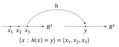
Estabelecemos agora o resultado básico.
Seja \(X\) uma variável aleatória discreta, com função de probabilidade \(p_X\). Seja \(Y = h(X)\), em que \(h : R^1 \to R^1\) é alguma função. Então \(Y\) também é discreta, e sua função de probabilidade \(p_Y\) satisfaz \(p_Y(y) = \sum_{x \in h^{-1}\{y\}} p_X(x)\), em que \(h^{-1}\{y\}\) é o conjunto de todos os números reais \(x\) com \(h(x) = y\).
Calculamos que \(p_Y(y) = P(h(X) = y)\) \({}= \sum_{x \in h^{-1}\{y\}} P(X = x)\) \({}= \sum_{x \in h^{-1}\{y\}} p_X(x)\), como afirmado.
Seja \(X\) o número de caras no lançamento de três moedas honestas. Seja \(Y = 1\) se \(X \geq 1\), com \(Y = 0\) se \(X = 0\). Então \(Y = h(X)\), em que \(h(0) = 0\) e \(h(1) = h(2) = h(3) = 1\). Logo, \(h^{-1}\{0\} = \{0\}\), de modo que \(P(Y = 0) = P(X = 0) = 1/8\). Por outro lado, \(h^{-1}\{1\} = \{1, 2, 3\}\), de modo que \(P(Y = 1) = P(X = 1)\) \({}+ P(X = 2) + P(X = 3)\) \({}= 3/8 + 3/8 + 1/8\) \({}= 7/8\).
Seja \(X\) o número que sai num dado honesto de seis faces, de modo que \(P(X = x) = 1/6\) para \(x = 1, 2, 3, 4, 5\) e \(6\). Seja \(Y = X^2 - 3X + 2\). Então \(Y = h(X)\), em que \(h(x) = x^2 - 3x + 2\). Note que \(h(x) = 0\) se e somente se \(x = 1\) ou \(x = 2\). Logo, \(h^{-1}\{0\} = \{1, 2\}\) e \[ P(Y = 0) = p_X(1) + p_X(2) = \frac{1}{6} + \frac{1}{6} = \frac{1}{3}. \]
2.6.2 O Caso Contínuo
Se \(X\) é contínua e \(Y = h(X)\), a situação é mais complicada. De fato, \(Y\) pode nem ser contínua, como mostra o exemplo a seguir.
Suponha que \(X\) tenha distribuição uniforme em \([0, 1]\), isto é, \(X \sim \text{Uniforme}[0, 1]\), como no Exemplo 2.4.2. Seja \(Y = h(X)\), em que \[ h(x) = \begin{cases} 7 & x \leq 3/4\\ 5 & x > 3/4. \end{cases} \] Aqui, \(Y = 7\) se e somente se \(X \leq 3/4\) (o que acontece com probabilidade \(3/4\)), enquanto \(Y = 5\) se e somente se \(X > 3/4\) (o que acontece com probabilidade \(1/4\)). Logo, \(Y\) é discreta, com função de probabilidade \(p_Y\) satisfazendo \(p_Y(7) = 3/4\), \(p_Y(5) = 1/4\) e \(p_Y(y) = 0\) quando \(y \neq 5, 7\).
Por outro lado, se \(X\) é absolutamente contínua e a função \(h\) é estritamente crescente52, a situação fica consideravelmente mais simples, como mostra o teorema a seguir.
Seja \(X\) uma variável aleatória absolutamente contínua, com função densidade \(f_X\). Seja \(Y = h(X)\), em que \(h : R^1 \to R^1\) é uma função diferenciável e estritamente crescente. Então \(Y\) também é absolutamente contínua, e sua função densidade \(f_Y\) é dada por \begin{equation} f_Y(y) = f_X(h^{-1}(y)) \,/\, |h'(h^{-1}(y))|, \tag{2.6.1} \end{equation} em que \(h'\) é a derivada de \(h\) e \(h^{-1}(y)\) é o único número \(x\) tal que \(h(x) = y\).
Veja a demonstração desse resultado na Seção 2.11.
Seja \(X \sim \text{Uniforme}[0, 1]\) e seja \(Y = 3X\). Qual é a distribuição de \(Y\)?
Aqui, \(X\) tem densidade \(f_X\) dada por \(f_X(x) = 1\) se \(0 \leq x \leq 1\), e \(f_X(x) = 0\) caso contrário. Além disso, \(Y = h(X)\), em que \(h\) é definida por \(h(x) = 3x\). Note que \(h\) é estritamente crescente, porque, se \(x < y\), então \(3x < 3y\), isto é, \(h(x) < h(y)\). Logo, podemos aplicar o Teorema 2.6.2.
Observamos primeiro que \(h'(x) = 3\) e que \(h^{-1}(y) = y/3\). Então, pelo Teorema 2.6.2, \(Y\) é absolutamente contínua, com densidade \begin{align*} f_Y(y) &= f_X(h^{-1}(y)) / |h'(h^{-1}(y))| = \frac{1}{3}\, f_X(y/3)\\ &= \begin{cases} 1/3 & 0 \leq y/3 \leq 1\\ 0 & \text{caso contrário} \end{cases} = \begin{cases} 1/3 & 0 \leq y \leq 3\\ 0 & \text{caso contrário.} \end{cases} \end{align*}
Comparando com o Exemplo 2.4.3, vemos que \(Y \sim \text{Uniforme}[0, 3]\), isto é, que \(Y\) tem distribuição Uniforme\([L, R]\) com \(L = 0\) e \(R = 3\).
Seja \(X \sim N(0, 1)\) e seja \(Y = 2X + 5\). Qual é a distribuição de \(Y\)?
Aqui, \(X\) tem densidade \(f_X\) dada por \[ f_X(x) = \phi(x) = \frac{1}{\sqrt{2\pi}}\, e^{-x^2/2}. \] Além disso, \(Y = h(X)\), em que \(h\) é definida por \(h(x) = 2x + 5\). Note que, de novo, \(h\) é estritamente crescente, porque, se \(x < y\), então \(2x + 5 < 2y + 5\), isto é, \(h(x) < h(y)\). Logo, podemos de novo aplicar o Teorema 2.6.2.
Observamos primeiro que \(h'(x) = 2\) e que \(h^{-1}(y) = (y - 5)/2\). Então, pelo Teorema 2.6.2, \(Y\) é absolutamente contínua, com densidade \[ f_Y(y) = f_X(h^{-1}(y)) / |h'(h^{-1}(y))| = f_X((y - 5)/2)/2 = \frac{1}{2\sqrt{2\pi}}\, e^{-(y-5)^2/8}. \]
Comparando com o Exemplo 2.4.8, vemos que \(Y \sim N(5, 4)\), isto é, que \(Y\) tem distribuição \(N(\mu, \sigma^2)\) com \(\mu = 5\) e \(\sigma^2 = 4\).
Se, em vez disso, a função \(h\) for estritamente decrescente, vale um resultado semelhante.
Seja \(X\) uma variável aleatória absolutamente contínua, com função densidade \(f_X\). Seja \(Y = h(X)\), em que \(h : R^1 \to R^1\) é uma função diferenciável e estritamente decrescente. Então \(Y\) também é absolutamente contínua, e sua função densidade \(f_Y\) pode, de novo, ser definida por (2.6.1).
Veja a demonstração desse resultado na Seção 2.11.
Seja \(X \sim \text{Uniforme}[0, 1]\) e seja \(Y = \ln(1/X)\). Qual é a distribuição de \(Y\)?
Aqui, \(X\) tem densidade \(f_X\) dada por \(f_X(x) = 1\) para \(0 \leq x \leq 1\), e \(f_X(x) = 0\) caso contrário. Além disso, \(Y = h(X)\), em que \(h\) é definida por \(h(x) = \ln(1/x)\). Note que, aqui, \(h\) é estritamente decrescente, porque, se \(x < y\), então \(1/x > 1/y\), de modo que \(\ln(1/x) > \ln(1/y)\), isto é, \(h(x) > h(y)\). Logo, podemos aplicar o Teorema 2.6.3.
Observamos primeiro que \(h'(x) = -1/x\) e que \(h^{-1}(y) = e^{-y}\). Então, pelo Teorema 2.6.3, \(Y\) é absolutamente contínua, com densidade \begin{align*} f_Y(y) &= f_X(h^{-1}(y)) / |h'(h^{-1}(y))| = e^{-y} f_X(e^{-y})\\ &= \begin{cases} e^{-y} & 0 \leq e^{-y} \leq 1\\ 0 & \text{caso contrário} \end{cases} = \begin{cases} e^{-y} & y \geq 0\\ 0 & \text{caso contrário.} \end{cases} \end{align*} Comparando com o Exemplo 2.4.4, vemos que \(Y \sim \text{Exponencial}(1)\), isto é, que \(Y\) tem distribuição Exponencial\((1)\).
Por fim, observamos o seguinte.
O Teorema 2.6.2 (e o 2.6.3) continua valendo supondo apenas que \(h\) seja estritamente crescente (ou decrescente) nos pontos em que \(f_X(x) > 0\). Se \(f_X(x) = 0\) num intervalo de valores de \(x\), então não importa como a função \(h\) se comporta nesse intervalo (nem mesmo se ela está bem definida ali).
Se \(X \sim \text{Exponencial}(\lambda)\), então \(f_X(x) = 0\) para \(x < 0\). Portanto, só se exige que \(h\) seja estritamente crescente (ou decrescente) para \(x \geq 0\). Assim, funções como \(h(x) = x^2\), \(h(x) = x^8\) e \(h(x) = \sqrt{x}\) ainda poderiam ser usadas com o Teorema 2.6.2, enquanto funções como \(h(x) = -x^2\), \(h(x) = -x^8\) e \(h(x) = -\sqrt{x}\) ainda poderiam ser usadas com o Teorema 2.6.3, embora essas funções não sejam necessariamente estritamente crescentes (ou decrescentes) nem bem definidas em toda a reta real.
Resumo da Seção 2.6
- Se \(X\) é discreta e \(Y = h(X)\), então \(P(Y = y) = \sum_{x :\, h(x) = y} P(X = x)\).
- Se \(X\) é absolutamente contínua e \(Y = h(X)\), com \(h\) estritamente crescente ou estritamente decrescente, então a densidade de \(Y\) é dada por \(f_Y(y) = f_X(h^{-1}(y)) \,/\, |h'(h^{-1}(y))|\).
- Isso nos permite calcular a distribuição de uma função de uma variável aleatória.
Exercícios
2.6.1 Seja \(X \sim \text{Uniforme}[L, R]\). Seja \(Y = cX + d\), em que \(c > 0\). Prove que \(Y \sim \text{Uniforme}[cL + d, cR + d]\). (Isso generaliza o Exemplo 2.6.4.)
2.6.2 Seja \(X \sim \text{Uniforme}[L, R]\). Seja \(Y = cX + d\), em que \(c < 0\). Prove que \(Y \sim \text{Uniforme}[cR + d, cL + d]\). (Em particular, se \(L = 0\), \(R = 1\), \(c = -1\) e \(d = 1\), então \(X \sim \text{Uniforme}[0, 1]\) e também \(Y = 1 - X \sim \text{Uniforme}[0, 1]\).)
2.6.3 Seja \(X \sim N(\mu, \sigma^2)\). Seja \(Y = cX + d\), em que \(c > 0\). Prove que \(Y \sim N(c\mu + d, c^2\sigma^2)\). (Isso generaliza o Exemplo 2.6.5.)
2.6.4 Seja \(X \sim \text{Exponencial}(\lambda)\). Seja \(Y = cX\), em que \(c > 0\). Prove que \(Y \sim \text{Exponencial}(\lambda/c)\).
2.6.5 Seja \(X \sim \text{Exponencial}(\lambda)\). Seja \(Y = X^3\). Calcule a densidade \(f_Y\) de \(Y\).
2.6.6 Seja \(X \sim \text{Exponencial}(\lambda)\). Seja \(Y = X^{1/4}\). Calcule a densidade \(f_Y\) de \(Y\). (Sugestão: use o Teorema 2.6.4.)
2.6.7 Seja \(X \sim \text{Uniforme}[0, 3]\). Seja \(Y = X^2\). Calcule a função densidade \(f_Y\) de \(Y\).
2.6.8 Suponha que \(X\) tenha uma densidade tal que \(f_X(\mu + x) = f_X(\mu - x)\), isto é, simétrica em torno de \(\mu\). Seja \(Y = 2\mu - X\). Mostre que a densidade de \(Y\) é dada por \(f_X\). Use isso para determinar a distribuição de \(Y\) quando \(X \sim N(\mu, \sigma^2)\).
2.6.9 Suponha que \(X\) tenha função densidade \(f_X(x) = x^3/4\) para \(0 < x < 2\), e \(f_X(x) = 0\) caso contrário. (a) Seja \(Y = X^2\). Calcule a função densidade \(f_Y(y)\) de \(Y\).(b) Seja \(Z = \sqrt{X}\). Calcule a função densidade \(f_Z(z)\) de \(Z\).
2.6.10 Seja \(X \sim \text{Uniforme}[0, \pi/2]\). Seja \(Y = \sin(X)\). Calcule a função densidade \(f_Y(y)\) de \(Y\).
2.6.11 Suponha que \(X\) tenha função densidade \(f_X(x) = (1/2)\sin(x)\) para \(0 < x < \pi\), e \(f_X(x) = 0\) caso contrário. Seja \(Y = X^2\). Calcule a função densidade \(f_Y(y)\) de \(Y\).
2.6.12 Suponha que \(X\) tenha função densidade \(f_X(x) = 1/x^2\) para \(x > 1\), e \(f_X(x) = 0\) caso contrário. Seja \(Y = X^{1/3}\). Calcule a função densidade \(f_Y(y)\) de \(Y\).
2.6.13 Seja \(X \sim \text{Normal}(0, 1)\). Seja \(Y = X^3\). Calcule a função densidade \(f_Y(y)\) de \(Y\).
Problemas
2.6.14 Sejam \(X \sim \text{Uniforme}[2, 7]\), \(Y = X^3\) e \(Z = \sqrt{Y}\). Calcule a densidade \(f_Z\) de \(Z\) de duas maneiras. (a) Aplique o Teorema 2.6.2 para obter primeiro a densidade de \(Y\) e depois aplique o Teorema 2.6.2 de novo para obter a densidade de \(Z\).(b) Observe que \(Z = \sqrt{Y} = \sqrt{X^3} = X^{3/2}\) e aplique o Teorema 2.6.2 uma única vez.
2.6.15 Seja \(X \sim \text{Uniforme}[L, R]\) e seja \(Y = h(X)\), em que \(h(x) = (x - c)^6\). De acordo com o Teorema 2.6.4, sob que condições sobre \(L\), \(R\) e \(c\) podemos aplicar o Teorema 2.6.2 ou o Teorema 2.6.3 a essa escolha de \(X\) e \(Y\)?
2.6.16 Seja \(X \sim N(\mu, \sigma^2)\). Seja \(Y = cX + d\), em que \(c < 0\). Prove que, de novo, \(Y \sim N(c\mu + d, c^2\sigma^2)\), exatamente como no Exercício 2.6.3.
2.6.17 (Distribuição Log-normal53\((\tau)\)) Suponha que \(X \sim N(0, \tau^2)\). Prove que \(Y = e^X\) tem densidade \[ f_\tau(y) = \frac{1}{\sqrt{2\pi}\,\tau} \exp\left(-\frac{(\ln y)^2}{2\tau^2}\right) \frac{1}{y} \] para \(y > 0\), em que \(\tau > 0\) é desconhecido. Dizemos que \(Y \sim \text{Log-normal}(\tau)\).
2.6.18 Suponha que \(X \sim \text{Weibull}(\alpha)\) (veja o Problema 2.4.19). Determine a distribuição de \(Y = X^\beta\).
2.6.19 Suponha que \(X \sim \text{Pareto}(\alpha)\) (veja o Problema 2.4.20). Determine a distribuição de \(Y = (1 + X)^\beta - 1\).
2.6.20 Suponha que \(X\) tenha a distribuição de valor extremo (veja o Problema 2.4.23). Determine a distribuição de \(Y = e^{-X}\).
Desafios
2.6.21 Os Teoremas 2.6.2 e 2.6.3 exigem que \(h\) seja uma função crescente ou decrescente, pelo menos nos pontos em que a densidade de \(X\) é positiva (veja o Teorema 2.6.4). Suponha agora que \(X \sim N(0, 1)\) e \(Y = h(X)\), em que \(h(x) = x^2\). Então \(f_X(x) > 0\) para todo \(x\), enquanto \(h\) é crescente só para \(x > 0\) e decrescente só para \(x < 0\). Logo, os Teoremas 2.6.2 e 2.6.3 não se aplicam diretamente. Calcule \(f_Y(y)\) mesmo assim. (Sugestão: \(P(a \leq Y \leq b)\) \({}= P(a \leq Y \leq b,\ X > 0)\) \({}+ P(a \leq Y \leq b,\ X < 0)\).)
2.7 Distribuições Conjuntas
Suponha que \(X\) e \(Y\) sejam duas variáveis aleatórias. Mesmo que conheçamos exatamente as distribuições de \(X\) e de \(Y\), isso ainda não nos diz nada sobre a relação entre \(X\) e \(Y\).
Seja \(X \sim \text{Bernoulli}(1/2)\), de modo que \(P(X = 0) = P(X = 1) = 1/2\). Seja \(Y_1 = X\) e seja \(Y_2 = 1 - X\). Então, claramente, temos também \(Y_1 \sim \text{Bernoulli}(1/2)\) e \(Y_2 \sim \text{Bernoulli}(1/2)\).
Por outro lado, a relação entre \(X\) e \(Y_1\) é muito diferente da relação entre \(X\) e \(Y_2\). Por exemplo, se sabemos que \(X = 1\), então também devemos ter \(Y_1 = 1\), mas \(Y_2 = 0\). Logo, saber apenas que \(X\), \(Y_1\) e \(Y_2\) têm todas a distribuição Bernoulli\((1/2)\) não nos dá informação completa sobre as relações entre essas variáveis aleatórias.
Uma definição formal de distribuição conjunta54 é a seguinte.
Se \(X\) e \(Y\) são variáveis aleatórias, então a distribuição conjunta de \(X\) e \(Y\) é a coleção das probabilidades \(P((X, Y) \in B)\), para todos os subconjuntos \(B \subseteq R^2\) de pares de números reais.
Distribuições conjuntas, como as outras distribuições, são tão complicadas que usamos várias funções para descrevê-las, entre elas as funções de distribuição acumulada conjuntas, as funções de probabilidade conjuntas e as funções densidade conjuntas, como discutimos a seguir.
2.7.1 Funções de Distribuição Acumulada Conjuntas
Sejam \(X\) e \(Y\) variáveis aleatórias. Então sua função de distribuição acumulada conjunta é a função \(F_{X,Y} : R^2 \to [0, 1]\) definida por \[ F_{X,Y}(x, y) = P(X \le x,\ Y \le y). \] (Lembre que a vírgula significa “e” aqui, de modo que \(F_{X,Y}(x, y)\) é a probabilidade de que \(X \le x\) e \(Y \le y\).)
Novamente, seja \(X \sim \text{Bernoulli}(1/2)\), \(Y_1 = X\) e \(Y_2 = 1 - X\). Então calculamos que \[ F_{X,Y_1}(x, y) = P(X \le x,\ Y_1 \le y) = \begin{cases} 0 & \min(x, y) < 0\\ 1/2 & 0 \le \min(x, y) < 1\\ 1 & \min(x, y) \ge 1. \end{cases} \] Por outro lado, \[ F_{X,Y_2}(x, y) = P(X \le x,\ Y_2 \le y) = \begin{cases} 0 & \min(x, y) < 0 \text{ ou } \max(x, y) < 1\\ 1/2 & 0 \le \min(x, y) < 1 \le \max(x, y)\\ 1 & \min(x, y) \ge 1. \end{cases} \]
Vemos, assim, que \(F_{X,Y_1}\) é uma função bem diferente de \(F_{X,Y_2}\). Isso reflete o fato de que, embora \(Y_1\) e \(Y_2\) tenham a mesma distribuição, a relação de cada uma com \(X\) é bem diferente. Por outro lado, as funções \(F_{X,Y_1}\) e \(F_{X,Y_2}\) são bastante incômodas e trabalhosas de manipular.
Vemos por esse exemplo que as funções de distribuição acumulada conjuntas (ou fdas conjuntas) de fato registram a relação entre \(X\) e \(Y\). Na verdade, as fdas conjuntas nos dizem tudo sobre as probabilidades conjuntas de \(X\) e \(Y\), como mostra o teorema a seguir (um análogo do Teorema 2.5.1).
Sejam \(X\) e \(Y\) variáveis aleatórias quaisquer, com função de distribuição acumulada conjunta \(F_{X,Y}\). Seja \(B\) um subconjunto de \(R^2\). Então \(P((X, Y) \in B)\) pode ser determinada apenas a partir dos valores de \(F_{X,Y}(x, y)\).
Não daremos uma demonstração do Teorema 2.7.1, embora ela seja parecida com a demonstração do Teorema 2.5.1. No entanto, o teorema a seguir indica por que o Teorema 2.7.1 é verdadeiro e também fornece um fato útil para os cálculos.
Sejam \(X\) e \(Y\) variáveis aleatórias quaisquer, com função de distribuição acumulada conjunta \(F_{X,Y}\). Suponha que \(a \le b\) e \(c \le d\). Então \[ P(a < X \le b,\ c < Y \le d) = F_{X,Y}(b, d) - F_{X,Y}(a, d) - F_{X,Y}(b, c) + F_{X,Y}(a, c). \]
De acordo com (1.3.3), \begin{align*} &P(a < X \le b,\ c < Y \le d)\\ &\quad = P(X \le b,\ Y \le d) - P(X \le b,\ Y \le d,\ \text{e } X \le a \text{ ou } Y \le c). \end{align*} Mas, pelo princípio da inclusão-exclusão55 (1.3.4), \begin{align*} &P(X \le b,\ Y \le d,\ \text{e } X \le a \text{ ou } Y \le c)\\ &\quad = P(X \le b,\ Y \le c) + P(X \le a,\ Y \le d) - P(X \le a,\ Y \le c). \end{align*} Combinando essas duas equações, vemos que \begin{align*} &P(a < X \le b,\ c < Y \le d)\\ &\quad = P(X \le b, Y \le d) - P(X \le a, Y \le d) - P(X \le b, Y \le c) + P(X \le a, Y \le c) \end{align*} e, daí, obtemos \[ P(a < X \le b,\ c < Y \le d) = F_{X,Y}(b, d) - F_{X,Y}(a, d) - F_{X,Y}(b, c) + F_{X,Y}(a, c), \] como afirmado.
Não é fácil trabalhar com fdas conjuntas. Por isso, nesta seção vamos considerar também outras funções, que são mais convenientes para pares de variáveis aleatórias discretas ou absolutamente contínuas.
2.7.2 Distribuições Marginais
Vimos como uma função de distribuição acumulada conjunta \(F_{X,Y}\) nos informa sobre a relação entre \(X\) e \(Y\). No entanto, a função \(F_{X,Y}\) também nos diz tudo sobre cada uma das variáveis \(X\) e \(Y\) separadamente, como mostra o teorema a seguir.
Sejam \(X\) e \(Y\) duas variáveis aleatórias, com função de distribuição acumulada conjunta \(F_{X,Y}\). Então a função de distribuição acumulada \(F_X\) de \(X\) satisfaz \[ F_X(x) = \lim_{y \to \infty} F_{X,Y}(x, y), \] para todo \(x \in R^1\). Analogamente, a função de distribuição acumulada \(F_Y\) de \(Y\) satisfaz \[ F_Y(y) = \lim_{x \to \infty} F_{X,Y}(x, y), \] para todo \(y \in R^1\).
Note que sempre temos \(Y \le \infty\). Logo, usando a continuidade de \(P\), temos \begin{align*} F_X(x) &= P(X \le x)\\ &= P(X \le x,\ Y \le \infty)\\ &= \lim_{y \to \infty} P(X \le x,\ Y \le y)\\ &= \lim_{y \to \infty} F_{X,Y}(x, y), \end{align*} como afirmado. Analogamente, \begin{align*} F_Y(y) &= P(Y \le y)\\ &= P(X \le \infty,\ Y \le y)\\ &= \lim_{x \to \infty} P(X \le x,\ Y \le y)\\ &= \lim_{x \to \infty} F_{X,Y}(x, y), \end{align*} o que completa a demonstração.
No contexto do Teorema 2.7.3, \(F_X\) é chamada de função de distribuição acumulada marginal de \(X\), e a distribuição de \(X\) é chamada de distribuição marginal56 de \(X\). (Analogamente, \(F_Y\) é chamada de função de distribuição acumulada marginal de \(Y\), e a distribuição de \(Y\) é chamada de distribuição marginal de \(Y\).) Intuitivamente, se pensamos em \(F_{X,Y}\) como uma função de um par \((x, y)\), então \(F_X\) e \(F_Y\) são funções de \(x\) e de \(y\), respectivamente, que poderiam ser escritas nas “margens” de um gráfico de \(F_{X,Y}\).
Na Figura 2.7.1, fizemos o gráfico da função de distribuição conjunta \[ F_{X,Y}(x, y) = \begin{cases} 0 & x < 0 \text{ ou } y < 0\\ xy^2 & 0 \le x \le 1,\ 0 \le y \le 1\\ x & 0 \le x \le 1,\ y \ge 1\\ y^2 & x \ge 1,\ 0 \le y \le 1\\ 1 & x > 1 \text{ e } y > 1. \end{cases} \] É fácil ver que \[ F_X(x) = F_{X,Y}(x, 1) = x \] para \(0 \le x \le 1\) e que \[ F_Y(y) = F_{X,Y}(1, y) = y^2 \] para \(0 \le y \le 1\). Os gráficos dessas funções são dados pelas bordas mais externas da superfície representada na Figura 2.7.1.
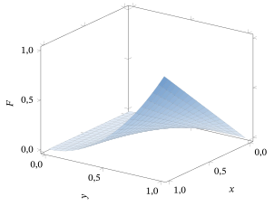
Assim, o Teorema 2.7.3 nos diz que a fda conjunta57 \(F_{X,Y}\) é de fato muito útil. Ela não só nos informa sobre a relação entre \(X\) e \(Y\), como também contém toda a informação sobre as distribuições marginais de \(X\) e de \(Y\).
Veremos nas próximas subseções que as funções de probabilidade conjuntas e as funções densidade conjuntas também contêm informação tanto sobre a relação entre \(X\) e \(Y\) quanto sobre as distribuições marginais de \(X\) e \(Y\).
2.7.3 Funções de Probabilidade Conjuntas
Suponha que \(X\) e \(Y\) sejam ambas variáveis aleatórias discretas. Então podemos definir uma função de probabilidade conjunta para \(X\) e \(Y\), da seguinte forma.
Sejam \(X\) e \(Y\) variáveis aleatórias discretas. Então sua função de probabilidade conjunta, \(p_{X,Y}\), é uma função de \(R^2\) em \(R^1\), definida por \[ p_{X,Y}(x, y) = P(X = x,\ Y = y). \]
Considere o exemplo a seguir.
Novamente, seja \(X \sim \text{Bernoulli}(1/2)\), \(Y_1 = X\) e \(Y_2 = 1 - X\). Então vemos que \[ p_{X,Y_1}(x, y) = P(X = x,\ Y_1 = y) = \begin{cases} 1/2 & x = y = 1\\ 1/2 & x = y = 0\\ 0 & \text{caso contrário.} \end{cases} \] Por outro lado, \[ p_{X,Y_2}(x, y) = P(X = x,\ Y_2 = y) = \begin{cases} 1/2 & x = 1,\ y = 0\\ 1/2 & x = 0,\ y = 1\\ 0 & \text{caso contrário.} \end{cases} \]
Vemos, assim, que \(p_{X,Y_1}\) e \(p_{X,Y_2}\) são duas funções simples, fáceis de manipular, que descrevem claramente as relações entre \(X\) e \(Y_1\) e entre \(X\) e \(Y_2\). Logo, para pares de variáveis aleatórias discretas, as funções de probabilidade conjuntas costumam ser a melhor maneira de descrever suas relações.
Uma vez conhecida a função de probabilidade conjunta \(p_{X,Y}\), as funções de probabilidade marginais de \(X\) e \(Y\) são obtidas facilmente.
Sejam \(X\) e \(Y\) duas variáveis aleatórias discretas, com função de probabilidade conjunta \(p_{X,Y}\). Então a função de probabilidade \(p_X\) de \(X\) pode ser calculada como \[ p_X(x) = \sum_y p_{X,Y}(x, y). \] Analogamente, a função de probabilidade \(p_Y\) de \(Y\) pode ser calculada como \[ p_Y(y) = \sum_x p_{X,Y}(x, y). \]
Usando a aditividade de \(P\), temos \[ p_X(x) = P(X = x) = \sum_y P(X = x,\ Y = y) = \sum_y p_{X,Y}(x, y), \] como afirmado. Analogamente, \[ p_Y(y) = P(Y = y) = \sum_x P(X = x,\ Y = y) = \sum_x p_{X,Y}(x, y). \qedhere \]
Suponha que a função de probabilidade conjunta de \(X\) e \(Y\) seja dada por \[ p_{X,Y}(x, y) = \begin{cases} 1/7 & x = 5,\ y = 0\\ 1/7 & x = 5,\ y = 3\\ 1/7 & x = 5,\ y = 4\\ 3/7 & x = 8,\ y = 0\\ 1/7 & x = 8,\ y = 4\\ 0 & \text{caso contrário.} \end{cases} \] Então \begin{align*} p_X(5) &= \sum_y p_{X,Y}(5, y) = p_{X,Y}(5, 0) + p_{X,Y}(5, 3) + p_{X,Y}(5, 4)\\ &= \frac{1}{7} + \frac{1}{7} + \frac{1}{7} = \frac{3}{7}, \end{align*} enquanto \[ p_X(8) = \sum_y p_{X,Y}(8, y) = p_{X,Y}(8, 0) + p_{X,Y}(8, 4) = \frac{3}{7} + \frac{1}{7} = \frac{4}{7}. \] Analogamente, \[ p_Y(4) = \sum_x p_{X,Y}(x, 4) = p_{X,Y}(5, 4) + p_{X,Y}(8, 4) = \frac{1}{7} + \frac{1}{7} = \frac{2}{7}, \] etc.
Note que, num contexto tão simples, é possível dispor a função de probabilidade conjunta numa tabela, como ilustrado a seguir para \(p_{X,Y}\), \(p_X\) e \(p_Y\) deste exemplo.
| \(Y = 0\) | \(Y = 3\) | \(Y = 4\) | ||
|---|---|---|---|---|
| \(X = 5\) | \(1/7\) | \(1/7\) | \(1/7\) | \(3/7\) |
| \(X = 8\) | \(3/7\) | \(0\) | \(1/7\) | \(4/7\) |
| \(4/7\) | \(1/7\) | \(2/7\) |
Somar as linhas e as colunas e colocar os totais nas margens dá as distribuições marginais de \(X\) e \(Y\).
2.7.4 Funções Densidade Conjuntas
Se \(X\) e \(Y\) são variáveis aleatórias contínuas, então, claramente, \(p_{X,Y}(x, y) = 0\) para todo \(x\) e \(y\). Logo, as funções de probabilidade conjuntas não são úteis nesse caso. Por outro lado, veremos aqui que, se \(X\) e \(Y\) são conjuntamente absolutamente contínuas58, então a relação entre elas pode ser descrita de forma útil por uma função densidade conjunta59.
Seja \(f : R^2 \to R^1\) uma função. Então \(f\) é uma função densidade conjunta se \(f(x, y) \ge 0\) para todo \(x\) e \(y\), e \(\int_{-\infty}^{\infty}\int_{-\infty}^{\infty} f(x, y)\,dx\,dy\) \({}= 1\).
Sejam \(X\) e \(Y\) variáveis aleatórias. Então \(X\) e \(Y\) são conjuntamente absolutamente contínuas se existe uma função densidade conjunta \(f\) tal que \[ P(a \le X \le b,\ c \le Y \le d) = \int_c^d \int_a^b f(x, y)\,dx\,dy, \] para todos \(a \le b\), \(c \le d\).
Considere o exemplo a seguir.
Sejam \(X\) e \(Y\) conjuntamente absolutamente contínuas, com função densidade conjunta \(f\) dada por \[ f(x, y) = \begin{cases} 4x^2y + 2y^5 & 0 \le x \le 1,\ 0 \le y \le 1\\ 0 & \text{caso contrário.} \end{cases} \]
Primeiro verificamos que \(f\) é de fato uma função densidade. Claramente, \(f(x, y) \ge 0\) para todo \(x\) e \(y\). Além disso, \begin{align*} \int_{-\infty}^{\infty}\int_{-\infty}^{\infty} f(x, y)\,dx\,dy &= \int_0^1 \int_0^1 (4x^2y + 2y^5)\,dx\,dy = \int_0^1 \left(\frac{4}{3}y + 2y^5\right) dy\\ &= \frac{4}{3}\,\frac{1}{2} + 2\,\frac{1}{6} = \frac{2}{3} + \frac{1}{3} = 1. \end{align*} Logo, \(f\) é uma função densidade conjunta. Na Figura 2.7.2, fizemos o gráfico da função \(f\), que forma uma superfície sobre o quadrado unitário60.
Em seguida, calculamos \(P(0{,}5 \le X \le 0{,}7,\ 0{,}2 \le Y \le 0{,}9)\). De fato, temos \begin{align*} &P(0{,}5 \le X \le 0{,}7,\ 0{,}2 \le Y \le 0{,}9)\\ &= \int_{0{,}2}^{0{,}9}\int_{0{,}5}^{0{,}7} (4x^2y + 2y^5)\,dx\,dy\\ &= \int_{0{,}2}^{0{,}9} \left[\left(\frac{4}{3}\bigl((0{,}7)^3 - (0{,}5)^3\bigr)\right) y + 2y^5(0{,}7 - 0{,}5)\right] dy\\ &= \frac{4}{3}\bigl((0{,}7)^3 - (0{,}5)^3\bigr)\frac{1}{2}\bigl((0{,}9)^2 - (0{,}2)^2\bigr) + \frac{2}{6}\bigl((0{,}9)^6 - (0{,}2)^6\bigr)(0{,}7 - 0{,}5)\\ &= \frac{2}{3}\bigl((0{,}7)^3 - (0{,}5)^3\bigr)\bigl((0{,}9)^2 - (0{,}2)^2\bigr) + \frac{1}{3}\bigl((0{,}9)^6 - (0{,}2)^6\bigr)(0{,}7 - 0{,}5) \doteq 0{,}147. \end{align*} As outras probabilidades podem ser calculadas de modo análogo.
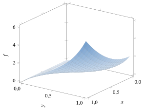
Uma vez conhecida uma densidade conjunta \(f_{X,Y}\), calcular as densidades marginais de \(X\) e \(Y\) é muito fácil, como mostra o teorema a seguir.
Sejam \(X\) e \(Y\) variáveis aleatórias conjuntamente absolutamente contínuas, com função densidade conjunta \(f_{X,Y}\). Então a densidade (marginal) \(f_X\) de \(X\) satisfaz \[ f_X(x) = \int_{-\infty}^{\infty} f_{X,Y}(x, y)\,dy, \] para todo \(x \in R^1\). Analogamente, a densidade (marginal) \(f_Y\) de \(Y\) satisfaz \[ f_Y(y) = \int_{-\infty}^{\infty} f_{X,Y}(x, y)\,dx, \] para todo \(y \in R^1\).
Precisamos mostrar que, para \(a \le b\), \(P(a \le X \le b)\) \({}= \int_a^b f_X(x)\,dx\) \({}= \int_a^b \int_{-\infty}^{\infty} f_{X,Y}(x, y)\,dy\,dx\). Ora, sempre temos \(-\infty < Y < \infty\). Logo, usando a continuidade de \(P\), temos que \(P(a \le X \le b)\) \({}= P(a \le X \le b,\ -\infty < Y < \infty)\) e \begin{align*} &P(a \le X \le b,\ -\infty < Y < \infty)\\ &\quad = \lim_{\substack{c \to -\infty\\ d \to \infty}} P(a \le X \le b,\ c \le Y \le d) = \lim_{\substack{c \to -\infty\\ d \to \infty}} \int_c^d \int_a^b f(x, y)\,dx\,dy\\ &\quad = \lim_{\substack{c \to -\infty\\ d \to \infty}} \int_a^b \int_c^d f(x, y)\,dy\,dx = \int_a^b \int_{-\infty}^{\infty} f_{X,Y}(x, y)\,dy\,dx, \end{align*} como afirmado. O resultado para \(f_Y\) segue de modo análogo.
Sejam novamente \(X\) e \(Y\) com densidade conjunta \[ f_{X,Y}(x, y) = \begin{cases} 4x^2y + 2y^5 & 0 \le x \le 1,\ 0 \le y \le 1\\ 0 & \text{caso contrário.} \end{cases} \] Então, pelo Teorema 2.7.5, para \(0 \le x \le 1\), \[ f_X(x) = \int_{-\infty}^{\infty} f_{X,Y}(x, y)\,dy = \int_0^1 (4x^2y + 2y^5)\,dy = 2x^2 + (1/3), \] enquanto, para \(x < 0\) ou \(x > 1\), \[ f_X(x) = \int_{-\infty}^{\infty} f_{X,Y}(x, y)\,dy = \int_{-\infty}^{\infty} 0\,dy = 0. \] Analogamente, para \(0 \le y \le 1\), \[ f_Y(y) = \int_{-\infty}^{\infty} f_{X,Y}(x, y)\,dx = \int_0^1 (4x^2y + 2y^5)\,dx = \frac{4}{3}y + 2y^5, \] enquanto, para \(y < 0\) ou \(y > 1\), \(f_Y(y) = 0\).
Suponha que \(X\) e \(Y\) sejam conjuntamente absolutamente contínuas, com densidade conjunta \[ f_{X,Y}(x, y) = \begin{cases} 120x^3y & x \ge 0,\ y \ge 0,\ x + y \le 1\\ 0 & \text{caso contrário.} \end{cases} \] Então a região em que \(f_{X,Y}(x, y) > 0\) é um triângulo, como representado na Figura 2.7.3.
Verificamos que \begin{align*} \int_{-\infty}^{\infty}\int_{-\infty}^{\infty} f_{X,Y}(x, y)\,dx\,dy &= \int_0^1 \int_0^{1-x} 120x^3y\,dy\,dx = \int_0^1 120x^3\,\frac{(1 - x)^2}{2}\,dx\\ &= \int_0^1 60(x^3 - 2x^4 + x^5)\,dx = 60\Bigl(\frac{1}{4} - 2\,\frac{1}{5} + \frac{1}{6}\Bigr)\\ &= 15 - 2(12) + 10 = 1, \end{align*} de modo que \(f_{X,Y}\) é de fato uma função densidade conjunta. Calculamos então, por exemplo, que \[ f_X(x) = \int_0^{1-x} 120x^3y\,dy = 120x^3\,\frac{(1 - x)^2}{2} = 60(x^3 - 2x^4 + x^5) \] para \(0 \le x \le 1\) (com \(f_X(x) = 0\) para \(x < 0\) ou \(x > 1\)).
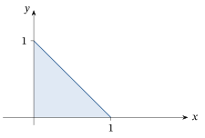
Sejam \(\mu_1\), \(\mu_2\), \(\sigma_1\), \(\sigma_2\) e \(\rho\) números reais, com \(\sigma_1, \sigma_2 > 0\) e \(-1 \le \rho \le 1\). Sejam \(X\) e \(Y\) com densidade conjunta dada por \begin{multline*} f_{X,Y}(x, y) = \frac{1}{2\pi\sigma_1\sigma_2\sqrt{1 - \rho^2}} \exp\Biggl\{-\frac{1}{2(1 - \rho^2)}\biggl[\Bigl(\frac{x - \mu_1}{\sigma_1}\Bigr)^2 + \Bigl(\frac{y - \mu_2}{\sigma_2}\Bigr)^2\\ - 2\rho\Bigl(\frac{x - \mu_1}{\sigma_1}\Bigr)\Bigl(\frac{y - \mu_2}{\sigma_2}\Bigr)\biggr]\Biggr\} \end{multline*} para \(x \in R^1\), \(y \in R^1\). Dizemos que \(X\) e \(Y\) têm a distribuição Normal Bivariada\((\mu_1, \mu_2, \sigma_1, \sigma_2, \rho)\).
Pode-se mostrar (ver Problema 2.7.13) que \(X \sim N(\mu_1, \sigma_1^2)\) e \(Y \sim N(\mu_2, \sigma_2^2)\). Logo, \(X\) e \(Y\) têm, cada uma, distribuição normal. O parâmetro \(\rho\) mede o grau da relação que existe entre \(X\) e \(Y\) (ver Problema 3.3.17) e é chamado de correlação61. Em particular, \(X\) e \(Y\) são independentes (ver Seção 2.8.3), e portanto não relacionadas, se e somente se \(\rho = 0\) (ver Problema 2.8.21).
A Figura 2.7.4 é um gráfico da densidade normal bivariada padrão, obtida fazendo \(\mu_1 = 0\), \(\mu_2 = 0\), \(\sigma_1 = 1\), \(\sigma_2 = 1\) e \(\rho = 0\). Trata-se de uma superfície em forma de sino em \(R^3\), com o pico no ponto \((0, 0)\) do plano \(xy\). O gráfico da distribuição Normal Bivariada\((\mu_1, \mu_2, \sigma_1, \sigma_2, \rho)\) geral também é uma superfície em forma de sino, mas o pico fica no ponto \((\mu_1, \mu_2)\) do plano \(xy\), e a forma do sino é controlada por \(\sigma_1\), \(\sigma_2\) e \(\rho\).
Pode-se mostrar (ver Problema 2.9.16) que, quando \(Z_1\), \(Z_2\) são variáveis aleatórias independentes, ambas com distribuição \(N(0, 1)\), e tomamos \begin{equation} X = \mu_1 + \sigma_1 Z_1, \qquad Y = \mu_2 + \sigma_2\Bigl(\rho Z_1 + (1 - \rho^2)^{1/2} Z_2\Bigr), \tag{2.7.1} \end{equation} então \((X, Y) \sim \text{Normal Bivariada}(\mu_1, \mu_2, \sigma_1, \sigma_2, \rho)\). Essa relação pode ser bastante útil para estabelecer várias propriedades dessa distribuição. Também podemos escrever uma versão análoga \(Y = \mu_2 + \sigma_2 Z_1\), \(X = \mu_1 + \sigma_1\bigl(\rho Z_1 + (1 - \rho^2)^{1/2} Z_2\bigr)\) e obter o mesmo resultado sobre a distribuição.
A distribuição normal bivariada é uma das distribuições bivariadas mais usadas nas aplicações. Por exemplo, se selecionamos ao acaso um indivíduo de uma população e medimos seu peso \(X\) e sua altura \(Y\), então uma distribuição normal bivariada muitas vezes fornece uma descrição razoável da distribuição conjunta dessas variáveis.
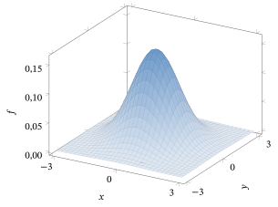
As densidades conjuntas também podem ser usadas para calcular probabilidades de regiões mais gerais, como mostra o resultado a seguir. (Omitimos a demonstração. O caso particular \(B = [a, b] \times [c, d]\) corresponde diretamente à definição de \(f_{X,Y}\).)
Sejam \(X\) e \(Y\) variáveis aleatórias conjuntamente absolutamente contínuas, com densidade conjunta \(f_{X,Y}\), e seja \(B \subseteq R^2\) uma região qualquer. Então \[ P\bigl((X, Y) \in B\bigr) = \int\!\!\int_B f(x, y)\,dx\,dy. \]
A discussão anterior girou em torno de apenas duas variáveis aleatórias, \(X\) e \(Y\). De modo mais geral, podemos considerar \(n\) variáveis aleatórias \(X_1, \ldots, X_n\). Se as variáveis aleatórias são todas discretas, então podemos definir também uma função de probabilidade conjunta \(p_{X_1,\ldots,X_n} : R^n \to [0, 1]\) por \(p_{X_1,\ldots,X_n}(x_1, \ldots, x_n)\) \({}= P(X_1 = x_1, \ldots, X_n = x_n)\). Se as variáveis aleatórias são conjuntamente absolutamente contínuas, então podemos definir uma função densidade conjunta \(f_{X_1,\ldots,X_n} : R^n \to [0, 1]\)62 de modo que \begin{align*} &P(a_1 \le X_1 \le b_1, \ldots, a_n \le X_n \le b_n)\\ &\quad = \int_{a_n}^{b_n} \cdots \int_{a_1}^{b_1} f_{X_1,\ldots,X_n}(x_1, \ldots, x_n)\,dx_1 \cdots dx_n, \end{align*} sempre que \(a_i \le b_i\) para todo \(i\).
Resumo da Seção 2.7
- Muitas vezes é importante registrar as probabilidades conjuntas de duas variáveis aleatórias, \(X\) e \(Y\).
- Sua função de distribuição acumulada conjunta é dada por \(F_{X,Y}(x, y) = P(X \le x,\ Y \le y)\).
- Se \(X\) e \(Y\) são discretas, então sua função de probabilidade conjunta é dada por \(p_{X,Y}(x, y) = P(X = x,\ Y = y)\).
- Se \(X\) e \(Y\) são absolutamente contínuas, então sua função densidade conjunta \(f_{X,Y}(x, y)\) é tal que \(P(a \le X \le b,\ c \le Y \le d)\) \({}= \int_c^d \int_a^b f_{X,Y}(x, y)\,dx\,dy\).
- A densidade marginal63 de \(X\) e de \(Y\) pode ser calculada a partir de qualquer uma das funções \(F_{X,Y}\), \(p_{X,Y}\) ou \(f_{X,Y}\).
- Um exemplo importante de distribuição conjunta é a distribuição normal bivariada.
Exercícios
2.7.1 Seja \(X \sim \text{Bernoulli}(1/3)\) e seja \(Y = 4X - 2\). Calcule a fda conjunta \(F_{X,Y}\).
2.7.2 Seja \(X \sim \text{Bernoulli}(1/4)\) e seja \(Y = -7X\). Calcule a fda conjunta \(F_{X,Y}\).
2.7.3 Suponha que \[ p_{X,Y}(x, y) = \begin{cases} 1/5 & x = 2,\ y = 3\\ 1/5 & x = 3,\ y = 2\\ 1/5 & x = -3,\ y = -2\\ 1/5 & x = -2,\ y = -3\\ 1/5 & x = 17,\ y = 19\\ 0 & \text{caso contrário.} \end{cases} \] (a) Calcule \(p_X\).(b) Calcule \(p_Y\).(c) Calcule \(P(Y > X)\).(d) Calcule \(P(Y = X)\).(e) Calcule \(P(XY < 0)\).
2.7.4 Para cada uma das funções densidade conjuntas \(f_{X,Y}\) a seguir, encontre o valor de \(C\) e calcule \(f_X(x)\), \(f_Y(y)\) e \(P(X \le 0{,}8,\ Y \le 0{,}6)\). (a) \[ f_{X,Y}(x, y) = \begin{cases} 2x^2y + Cy^5 & 0 \le x \le 1,\ 0 \le y \le 1\\ 0 & \text{caso contrário.} \end{cases} \](b) \[ f_{X,Y}(x, y) = \begin{cases} C(xy + x^5y^5) & 0 \le x \le 1,\ 0 \le y \le 1\\ 0 & \text{caso contrário.} \end{cases} \](c) \[ f_{X,Y}(x, y) = \begin{cases} C(xy + x^5y^5) & 0 \le x \le 4,\ 0 \le y \le 10\\ 0 & \text{caso contrário.} \end{cases} \](d) \[ f_{X,Y}(x, y) = \begin{cases} Cx^5y^5 & 0 \le x \le 4,\ 0 \le y \le 10\\ 0 & \text{caso contrário.} \end{cases} \]
2.7.5 Prove que \(F_{X,Y}(x, y) \le \min(F_X(x), F_Y(y))\).
2.7.6 Suponha que \(P(X = x,\ Y = y) = 1/8\) para \(x = 3, 5\) e \(y = 1, 2, 4, 7\); caso contrário, \(P(X = x,\ Y = y) = 0\). Calcule cada um dos itens a seguir. (a) \(F_{X,Y}(x, y)\) para todo \(x, y \in R^1\)(b) \(p_{X,Y}(x, y)\) para todo \(x, y \in R^1\)(c) \(p_X(x)\) para todo \(x \in R^1\)(d) \(p_Y(y)\) para todo \(x \in R^1\)64(e) A fda marginal \(F_X(x)\) para todo \(x \in R^1\)(f) A fda marginal \(F_Y(y)\) para todo \(y \in R^1\)
2.7.7 Sejam \(X\) e \(Y\) com densidade conjunta \(f_{X,Y}(x, y) = c \sin(xy)\) para \(0 < x < 1\) e \(0 < y < 2\), e \(f_{X,Y}(x, y) = 0\) caso contrário, para uma constante apropriada \(c > 0\) (que não pode ser calculada explicitamente). Em termos de \(c\), calcule cada um dos itens a seguir. (a) A densidade marginal \(f_X(x)\) para todo \(x \in R^1\)(b) A densidade marginal \(f_Y(y)\) para todo \(y \in R^1\)
2.7.8 Sejam \(X\) e \(Y\) com densidade conjunta \(f_{X,Y}(x, y) = (x^2 + y)/36\) para \(-2 < x < 1\) e \(0 < y < 4\), e \(f_{X,Y}(x, y) = 0\) caso contrário. Calcule cada um dos itens a seguir. (a) A densidade marginal \(f_X(x)\) para todo \(x \in R^1\)(b) A densidade marginal \(f_Y(y)\) para todo \(y \in R^1\)(c) \(P(Y < 1)\)(d) A fda conjunta \(F_{X,Y}(x, y)\) para todo \(x, y \in R^1\)
2.7.9 Sejam \(X\) e \(Y\) com densidade conjunta \(f_{X,Y}(x, y) = (x^2 + y)/4\) para \(0 < x < y < 2\), e \(f_{X,Y}(x, y) = 0\) caso contrário. Calcule cada um dos itens a seguir. (a) A densidade marginal \(f_X(x)\) para todo \(x \in R^1\)(b) A densidade marginal \(f_Y(y)\) para todo \(y \in R^1\)(c) \(P(Y < 1)\)
2.7.10 Sejam \(X\) e \(Y\) com distribuição Normal Bivariada\((3, 5, 2, 4, 1/2)\). (a) Especifique a distribuição marginal de \(X\).(b) Especifique a distribuição marginal de \(Y\).(c) \(X\) e \(Y\) são independentes? Por quê?
Problemas
2.7.11 Seja \(X \sim \text{Exponencial}(\lambda)\) e seja \(Y = X^3\). Calcule a fda conjunta, \(F_{X,Y}(x, y)\).
2.7.12 Seja \(F_{X,Y}\) uma fda conjunta. Prove que, para todo \(y \in R^1\), \(\lim_{x \to -\infty} F_{X,Y}(x, y) = 0\).
2.7.13 Sejam \(X\) e \(Y\) com distribuição Normal Bivariada\((\mu_1, \mu_2, \sigma_1, \sigma_2, \rho)\), como no Exemplo 2.7.9. Prove que \(X \sim N(\mu_1, \sigma_1^2)\), provando que \[ \int_{-\infty}^{\infty} f_{X,Y}(x, y)\,dy = \frac{1}{\sigma_1\sqrt{2\pi}} \exp\left\{-\frac{(x - \mu_1)^2}{2\sigma_1^2}\right\}. \]
2.7.14 Suponha que a densidade conjunta \(f_{X,Y}\) seja dada por \(f_{X,Y}(x, y) = Cye^{-xy}\) para \(0 < x < 1\), \(0 < y < 1\), e seja \(0\) caso contrário. (a) Determine \(C\) de modo que \(f_{X,Y}\) seja uma densidade.(b) Calcule \(P(1/2 < X < 1,\ 1/2 < Y < 1)\).(c) Calcule as densidades marginais de \(X\) e de \(Y\).
2.7.15 Suponha que a densidade conjunta \(f_{X,Y}\) seja dada por \(f_{X,Y}(x, y) = Cye^{-xy}\) para \(0 < x < y < 1\), e seja \(0\) caso contrário. (a) Determine \(C\) de modo que \(f_{X,Y}\) seja uma densidade.(b) Calcule \(P(1/2 < X < 1,\ 1/2 < Y < 1)\).(c) Calcule as densidades marginais de \(X\) e de \(Y\).
2.7.16 Suponha que a densidade conjunta \(f_{X,Y}\) seja dada por \(f_{X,Y}(x, y) = Ce^{-(x+y)}\) para \(0 < x < y < \infty\), e seja \(0\) caso contrário. (a) Determine \(C\) de modo que \(f_{X,Y}\) seja uma densidade.(b) Calcule as densidades marginais de \(X\) e de \(Y\).
2.7.17 (Distribuição Dirichlet65\((\alpha_1, \alpha_2, \alpha_3)\)) Suponha que \((X_1, X_2)\) tenha a densidade conjunta \[ f_{X_1,X_2}(x_1, x_2) = \frac{\Gamma(\alpha_1 + \alpha_2 + \alpha_3)}{\Gamma(\alpha_1)\,\Gamma(\alpha_2)\,\Gamma(\alpha_3)}\, x_1^{\alpha_1 - 1} x_2^{\alpha_2 - 1} (1 - x_1 - x_2)^{\alpha_3 - 1} \] para \(x_1 \ge 0\), \(x_2 \ge 0\) e \(0 \le x_1 + x_2 \le 1\). Uma distribuição Dirichlet muitas vezes se aplica quando \(X_1\), \(X_2\) e \(1 - X_1 - X_2\) correspondem a proporções aleatórias. (a) Prove que \(f_{X_1,X_2}\) é uma densidade. (Sugestão: esboce a região em que \(f_{X_1,X_2}\) é não negativa, integre primeiro em \(x_1\) fazendo a transformação \(u = x_1/(1 - x_2)\) nessa integral e use (2.4.10) do Problema 2.4.24.)(b) Prove que \(X_1 \sim \text{Beta}(\alpha_1, \alpha_2 + \alpha_3)\) e \(X_2 \sim \text{Beta}(\alpha_2, \alpha_1 + \alpha_3)\).
2.7.18 (Distribuição Dirichlet\((\alpha_1, \ldots, \alpha_{k+1})\)) Suponha que \((X_1, \ldots, X_k)\) tenha a densidade conjunta \begin{align*} &f_{X_1,\ldots,X_k}(x_1, \ldots, x_k)\\ &\quad = \frac{\Gamma(\alpha_1 + \cdots + \alpha_{k+1})}{\Gamma(\alpha_1) \cdots \Gamma(\alpha_{k+1})}\, x_1^{\alpha_1 - 1} \cdots x_k^{\alpha_k - 1} (1 - x_1 - \cdots - x_k)^{\alpha_{k+1} - 1} \end{align*} para \(x_i \ge 0\), \(i = 1, \ldots, k\), e \(0 \le x_1 + \cdots + x_k \le 1\). Prove que \(f_{X_1,\ldots,X_k}\) é uma densidade. (Sugestão: Problema 2.7.17.)
Desafios
2.7.19 Encontre um exemplo de duas variáveis aleatórias \(X\) e \(Y\) e de uma função \(h : R^1 \to R^1\) tais que \(F_X(x) > 0\) e \(F_Y(x) > 0\) para todo \(x \in R^1\), mas \(\lim_{x \to \infty} F_{X,Y}(x, h(x)) = 0\).
Tópicos para discussão
2.7.20 Quais são exemplos de pares de quantidades aleatórias da vida real que têm relações interessantes? (Liste tantos quantos puder e descreva cada relação da melhor forma que puder.)
2.8 Condicionamento e Independência
Sejam \(X\) e \(Y\) duas variáveis aleatórias. Suponha que sabemos que \(X = 5\). O que isso nos diz sobre \(Y\)? Dependendo da relação entre \(X\) e \(Y\), isso pode nos dizer tudo sobre \(Y\) (por exemplo, se \(Y = X\)) ou nada sobre \(Y\). Em geral, a resposta ficará entre esses dois extremos, e saber que \(X = 5\) mudará um pouco as probabilidades de \(Y\).
2.8.1 Condicionamento em Variáveis Aleatórias Discretas
Suponha que \(X\) é uma variável aleatória discreta, com \(P(X = 5) > 0\). Seja \(a < b\), e suponha que estamos interessados na probabilidade condicional66 \(P(a < Y \le b \mid X = 5)\). Bem, já sabemos calcular probabilidades condicionais como essa. De fato, por (1.5.1), \[ P(a < Y \le b \mid X = 5) = \frac{P(a < Y \le b,\ X = 5)}{P(X = 5)}, \] desde que \(P(X = 5) > 0\). Isso motiva a definição a seguir.
Sejam \(X\) e \(Y\) variáveis aleatórias, e suponha que \(P(X = x) > 0\). A distribuição condicional de \(Y\), dado que \(X = x\), é a distribuição de probabilidade que atribui a probabilidade \[ \frac{P(Y \in B,\ X = x)}{P(X = x)} \] a cada evento \(Y \in B\). Em particular, ela atribui a probabilidade \[ \frac{P(a < Y \le b,\ X = x)}{P(X = x)} \] ao evento \(a < Y \le b\).
Suponha, como no Exemplo 2.7.5, que \(X\) e \(Y\) têm função de probabilidade conjunta \[ p_{X,Y}(x, y) = \begin{cases} 1/7 & x = 5,\ y = 0\\ 1/7 & x = 5,\ y = 3\\ 1/7 & x = 5,\ y = 4\\ 3/7 & x = 8,\ y = 0\\ 1/7 & x = 8,\ y = 4\\ 0 & \text{caso contrário.} \end{cases} \]
Calculamos \(P(Y = 4 \mid X = 8)\) como \[ P(Y = 4 \mid X = 8) = \frac{P(Y = 4,\ X = 8)}{P(X = 8)} = \frac{1/7}{(3/7) + (1/7)} = \frac{1/7}{4/7} = 1/4. \] Por outro lado, \[ P(Y = 4 \mid X = 5) = \frac{P(Y = 4,\ X = 5)}{P(X = 5)} = \frac{1/7}{(1/7) + (1/7) + (1/7)} = \frac{1/7}{3/7} = 1/3. \] Assim, dependendo do valor de \(X\), obtemos probabilidades diferentes para \(Y\).
Generalizando o exemplo acima, vemos que, se \(X\) e \(Y\) são discretas, então \[ P(Y = y \mid X = x) = \frac{P(Y = y,\ X = x)}{P(X = x)} = \frac{p_{X,Y}(x, y)}{p_X(x)} = \frac{p_{X,Y}(x, y)}{\sum_z p_{X,Y}(x, z)}. \] Isso motiva a definição a seguir.
Suponha que \(X\) e \(Y\) são duas variáveis aleatórias discretas. Então a função de probabilidade condicional67 de \(Y\), dado \(X\), é a função \(p_{Y \mid X}\) definida por \[ p_{Y \mid X}(y \mid x) = \frac{p_{X,Y}(x, y)}{\sum_z p_{X,Y}(x, z)} = \frac{p_{X,Y}(x, y)}{p_X(x)}, \] definida para todo \(y \in R^1\) e todo \(x\) com \(p_X(x) > 0\).
2.8.2 Condicionamento em Variáveis Aleatórias Contínuas
Se \(X\) é contínua, então teremos \(P(X = x) = 0\). Nesse caso, as Definições 2.8.1 e 2.8.2 não podem ser usadas, porque não podemos dividir por 0. Então, como podemos condicionar em \(X = x\) nesse caso?
Uma abordagem é sugerida por condicionar, em vez disso, em \(x - \epsilon < X \le x + \epsilon\), em que \(\epsilon > 0\) é um número muito pequeno. Mesmo que \(X\) seja contínua, ainda podemos ter \(P(x - \epsilon \le X \le x + \epsilon) > 0\). Por outro lado, se \(\epsilon\) é muito pequeno e \(x - \epsilon \le X \le x + \epsilon\), então \(X\) tem de estar muito próximo de \(x\).
De fato, suponha que \(X\) e \(Y\) são conjuntamente absolutamente contínuas, com função densidade conjunta \(f_{X,Y}\). Então \begin{align*} P(a \le Y \le b \mid x - \epsilon \le X \le x + \epsilon) &= \frac{P(a \le Y \le b,\, x - \epsilon \le X \le x + \epsilon)}{P(x - \epsilon \le X \le x + \epsilon)}\\ &= \frac{\int_a^b \int_{x-\epsilon}^{x+\epsilon} f_{X,Y}(t, y)\,dt\,dy} {\int_{-\infty}^{\infty} \int_{x-\epsilon}^{x+\epsilon} f_{X,Y}(t, y)\,dt\,dy}. \end{align*}
Na Figura 2.8.1, representamos a região \(\{(x, y) : a \le y \le b,\ x - \epsilon < x \le x\) \({}+ \epsilon\}\) para \((X, Y)\).
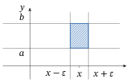
Agora, se \(\epsilon\) é muito pequeno, então nas integrais acima teremos sempre \(t\) muito próximo de \(x\). Se \(f_{X,Y}\) é uma função contínua, isso implica que \(f_{X,Y}(t, y)\) estará muito próximo de \(f_{X,Y}(x, y)\). Concluímos que, se \(\epsilon\) é muito pequeno, então \begin{align*} P(a \le Y \le b \mid x - \epsilon \le X \le x + \epsilon) &\approx \frac{\int_a^b \int_{x-\epsilon}^{x+\epsilon} f_{X,Y}(x, y)\,dt\,dy} {\int_{-\infty}^{\infty} \int_{x-\epsilon}^{x+\epsilon} f_{X,Y}(x, y)\,dt\,dy}\\ &= \frac{\int_a^b 2\epsilon\, f_{X,Y}(x, y)\,dy}{\int_{-\infty}^{\infty} 2\epsilon\, f_{X,Y}(x, y)\,dy}\\ &= \int_a^b \frac{f_{X,Y}(x, y)}{\int_{-\infty}^{\infty} f_{X,Y}(x, z)\,dz}\,dy. \end{align*} Isso sugere que a quantidade \[ \frac{f_{X,Y}(x, y)}{\int_{-\infty}^{\infty} f_{X,Y}(x, z)\,dz} = \frac{f_{X,Y}(x, y)}{f_X(x)} \] faz o papel de uma densidade para a distribuição condicional de \(Y\), dado que \(X = x\). Isso motiva as definições a seguir.
Sejam \(X\) e \(Y\) conjuntamente absolutamente contínuas, com função densidade conjunta \(f_{X,Y}\). A densidade condicional68 de \(Y\), dado \(X = x\), é a função \(f_{Y \mid X}(y \mid x)\), definida por \[ f_{Y \mid X}(y \mid x) = \frac{f_{X,Y}(x, y)}{f_X(x)}, \] válida para todo \(y \in R^1\) e para todo \(x\) tal que \(f_X(x) > 0\).
Sejam \(X\) e \(Y\) conjuntamente absolutamente contínuas, com função densidade conjunta \(f_{X,Y}\). A distribuição condicional de \(Y\), dado \(X = x\), é definida estabelecendo que \[ P(a \le Y \le b \mid X = x) = \int_a^b f_{Y \mid X}(y \mid x)\,dy, \] quando \(a \le b\), com \(f_{Y \mid X}\) como na Definição 2.8.3, válida para todo \(x\) tal que \(f_X(x) > 0\).
Sejam \(X\) e \(Y\) com densidade conjunta \[ f_{X,Y}(x, y) = \begin{cases} 4x^2 y + 2y^5 & 0 \le x \le 1,\ 0 \le y \le 1\\ 0 & \text{caso contrário,} \end{cases} \] como nos Exemplos 2.7.6 e 2.7.7.
Sabemos, pelo Exemplo 2.7.7, que \[ f_X(x) = \begin{cases} 2x^2 + (1/3) & 0 \le x \le 1\\ 0 & \text{caso contrário,} \end{cases} \] enquanto \[ f_Y(y) = \begin{cases} \frac{4}{3}y + 2y^5 & 0 \le y \le 1\\ 0 & \text{caso contrário.} \end{cases} \]
Vamos agora calcular \(P(0{,}2 \le Y \le 0{,}3 \mid X = 0{,}8)\). Usando as Definições 2.8.4 e 2.8.3, temos \begin{align*} &P(0{,}2 \le Y \le 0{,}3 \mid X = 0{,}8)\\ &\quad= \int_{0{,}2}^{0{,}3} f_{Y \mid X}(y \mid 0{,}8)\,dy = \frac{\int_{0{,}2}^{0{,}3} f_{X,Y}(0{,}8; y)\,dy}{f_X(0{,}8)} = \frac{\int_{0{,}2}^{0{,}3} \bigl(4\,(0{,}8)^2\,y + 2y^5\bigr)\,dy}{2\,(0{,}8)^2 + \frac{1}{3}}\\ &\quad= \frac{\frac{4}{2}\,(0{,}8)^2\,\bigl((0{,}3)^2 - (0{,}2)^2\bigr) + \frac{2}{6}\bigl((0{,}3)^6 - (0{,}2)^6\bigr)}{2\,(0{,}8)^2 + \frac{1}{3}} = 0{,}0398. \end{align*}
Em contraste, se calculamos a probabilidade não condicionada (isto é, a usual) de que \(0{,}2 \le Y \le 0{,}3\), vemos que \begin{align*} P(0{,}2 \le Y \le 0{,}3) &= \int_{0{,}2}^{0{,}3} f_Y(y)\,dy = \int_{0{,}2}^{0{,}3} \Bigl(\frac{4}{3}y + 2y^5\Bigr)\,dy\\ &= \frac{4}{3}\,\frac{1}{2}\bigl((0{,}3)^2 - (0{,}2)^2\bigr) + \frac{2}{6}\bigl((0{,}3)^6 - (0{,}2)^6\bigr) = 0{,}0336. \end{align*} Vemos, assim, que condicionar em \(X = 0{,}8\) aumenta a probabilidade de que \(0{,}2 \le Y \le 0{,}3\), de cerca de \(0{,}0336\) para cerca de \(0{,}0398\).
Por analogia com o Teorema 1.3.1, temos o seguinte.
Sejam \(X\) e \(Y\) variáveis aleatórias conjuntamente absolutamente contínuas, e sejam \(a \le b\) e \(c \le d\). Então \[ P(a \le X \le b,\ c \le Y \le d) = \int_c^d \int_a^b f_X(x)\, f_{Y \mid X}(y \mid x)\,dx\,dy. \] Mais geralmente, se \(B \subseteq R^2\) é uma região qualquer, então \[ P\bigl((X, Y) \in B\bigr) = \iint_B f_X(x)\, f_{Y \mid X}(y \mid x)\,dx\,dy. \]
Pela Definição 2.8.3, \[ f_X(x)\, f_{Y \mid X}(y \mid x) = f_{X,Y}(x, y). \] Portanto, o resultado segue imediatamente da Definição 2.7.4 e do Teorema 2.7.6.
2.8.3 Independência de Variáveis Aleatórias
Lembre-se da Definição 1.5.2: dois eventos \(A\) e \(B\) são independentes se \(P(A \cap B) = P(A)\,P(B)\). Queremos ter uma definição correspondente de independência para variáveis aleatórias \(X\) e \(Y\). Intuitivamente, a independência de \(X\) e \(Y\) significa que \(X\) e \(Y\) não exercem nenhuma influência uma sobre a outra, isto é, que os valores de \(X\) não alteram em nada as probabilidades de \(Y\) (e vice-versa).
A ideia da definição formal é que \(X\) e \(Y\) dão origem a eventos da forma “\(a < X \le b\)” ou “\(Y \in B\)”, e queremos que todos esses eventos envolvendo \(X\) sejam independentes de todos esses eventos envolvendo \(Y\). Mais precisamente, nossa definição é a seguinte.
Sejam \(X\) e \(Y\) duas variáveis aleatórias. Então \(X\) e \(Y\) são independentes se, para todos os subconjuntos \(B_1\) e \(B_2\) dos números reais, \[ P(X \in B_1,\ Y \in B_2) = P(X \in B_1)\,P(Y \in B_2). \] Isto é, os eventos “\(X \in B_1\)” e “\(Y \in B_2\)” são eventos independentes.
Intuitivamente, \(X\) e \(Y\) são independentes se não exercem nenhuma influência uma sobre a outra, como veremos.
Ora, é muito difícil trabalhar com a Definição 2.8.5. Felizmente, existe uma caracterização da independência muito mais simples.
Sejam \(X\) e \(Y\) duas variáveis aleatórias. Então \(X\) e \(Y\) são independentes se e somente se \begin{equation} P(a \le X \le b,\ c \le Y \le d) = P(a \le X \le b)\,P(c \le Y \le d) \tag{2.8.1} \end{equation} sempre que \(a \le b\) e \(c \le d\).
Isto é, \(X\) e \(Y\) são independentes se e somente se os eventos “\(a \le X \le b\)” e “\(c \le Y \le d\)” são eventos independentes sempre que \(a \le b\) e \(c \le d\).
Não demonstraremos o Teorema 2.8.2 aqui, embora a demonstração seja semelhante, em espírito, à do Teorema 2.5.1. No entanto, às vezes usaremos (2.8.1) para verificar a independência de \(X\) e \(Y\).
Ainda assim, nem mesmo (2.8.1) é tão fácil de verificar diretamente. Para distribuições discretas e para distribuições absolutamente contínuas, há condições mais fáceis, como segue.
Sejam \(X\) e \(Y\) duas variáveis aleatórias.
(a) Se \(X\) e \(Y\) são discretas, então \(X\) e \(Y\) são independentes se e somente se sua função de probabilidade conjunta \(p_{X,Y}\) satisfaz \[ p_{X,Y}(x, y) = p_X(x)\, p_Y(y) \] para todo \(x, y \in R^1\).
(b) Se \(X\) e \(Y\) são conjuntamente absolutamente contínuas, então \(X\) e \(Y\) são independentes se e somente se sua função densidade conjunta \(f_{X,Y}\) pode ser escolhida de modo a satisfazer \[ f_{X,Y}(x, y) = f_X(x)\, f_Y(y) \] para todo \(x, y \in R^1\).
(a) Se \(X\) e \(Y\) são independentes, então, fazendo \(a = b = x\) e \(c = d = y\) em (2.8.1), vemos que \(P(X = x,\ Y = y) = P(X = x)\,P(Y = y)\). Portanto, \(p_{X,Y}(x, y) = p_X(x)\, p_Y(y)\).
Reciprocamente, se \(p_{X,Y}(x, y) = p_X(x)\, p_Y(y)\) para todo \(x\) e \(y\), então \begin{align*} &P(a \le X \le b,\ c \le Y \le d)\\ &\quad= \sum_{a \le x \le b}\ \sum_{c \le y \le d} p_{X,Y}(x, y) = \sum_{a \le x \le b}\ \sum_{c \le y \le d} p_X(x)\, p_Y(y)\\ &\quad= \Biggl(\sum_{a \le x \le b} p_X(x)\Biggr)\Biggl(\sum_{c \le y \le d} p_Y(y)\Biggr) = P(a \le X \le b)\, P(c \le Y \le d). \end{align*} Isso completa a demonstração de (a).
(b) Se \(f_{X,Y}(x, y) = f_X(x)\, f_Y(y)\) para todo \(x\) e \(y\), então \begin{align*} &P(a \le X \le b,\ c \le Y \le d)\\ &\quad= \int_a^b \int_c^d f_{X,Y}(x, y)\,dy\,dx = \int_a^b \int_c^d f_X(x)\, f_Y(y)\,dy\,dx\\ &\quad= \biggl(\int_a^b f_X(x)\,dx\biggr)\biggl(\int_c^d f_Y(y)\,dy\biggr) = P(a \le X \le b)\, P(c \le Y \le d). \end{align*} Isso completa a demonstração da parte “se” de (b). A demonstração da parte “somente se” de (b) é mais técnica, e não a incluímos aqui.
Sejam \(X\) e \(Y\) com densidade conjunta, como no Exemplo 2.7.6, \[ f_{X,Y}(x, y) = \begin{cases} 4x^2 y + 2y^5 & 0 \le x \le 1,\ 0 \le y \le 1\\ 0 & \text{caso contrário} \end{cases} \] e, portanto, como obtido no Exemplo 2.7.7, densidades marginais \[ f_X(x) = \begin{cases} 2x^2 + (1/3) & 0 \le x \le 1\\ 0 & \text{caso contrário} \end{cases} \] e \[ f_Y(y) = \begin{cases} \frac{4}{3}y + 2y^5 & 0 \le y \le 1\\ 0 & \text{caso contrário.} \end{cases} \] Calculamos, então, que \[ f_X(x)\, f_Y(y) = \begin{cases} \bigl(2x^2 + (1/3)\bigr)\bigl(\frac{4}{3}y + 2y^5\bigr) & 0 \le x \le 1,\ 0 \le y \le 1\\ 0 & \text{caso contrário.} \end{cases} \] Vemos, assim, que \(f_X(x)\, f_Y(y) \ne f_{X,Y}(x, y)\). Portanto, \(X\) e \(Y\) não são independentes.
Sejam \(X\) e \(Y\) com densidade conjunta \[ f_{X,Y}(x, y) = \begin{cases} \frac{1}{8080}\,(12xy^2 + 6x + 4y^2 + 2) & 0 \le x \le 6,\ 3 \le y \le 5\\ 0 & \text{caso contrário.} \end{cases} \] Calculamos as densidades marginais como \[ f_X(x) = \int_{-\infty}^{\infty} f_{X,Y}(x, y)\,dy = \begin{cases} \frac{1}{60} + \frac{1}{20}\,x & 0 \le x \le 6\\ 0 & \text{caso contrário,} \end{cases} \] e \[ f_Y(y) = \int_{-\infty}^{\infty} f_{X,Y}(x, y)\,dx = \begin{cases} \frac{3}{202} + \frac{3}{101}\,y^2 & 3 \le y \le 5\\ 0 & \text{caso contrário.} \end{cases} \] Calculamos, então, que \[ f_X(x)\, f_Y(y) = \begin{cases} \bigl(\frac{1}{60} + \frac{1}{20}\,x\bigr)\bigl(\frac{3}{202} + \frac{3}{101}\,y^2\bigr) & 0 \le x \le 6,\ 3 \le y \le 5\\ 0 & \text{caso contrário.} \end{cases} \] Fazendo a multiplicação, vemos que \(f_X(x)\, f_Y(y) = f_{X,Y}(x, y)\). Portanto, neste caso, \(X\) e \(Y\) são independentes.
Combinando o Teorema 2.8.3 com as Definições 2.8.2 e 2.8.3, obtemos imediatamente o resultado a seguir sobre independência. Ele diz que a independência de variáveis aleatórias equivale a dizer que condicionar em uma delas não tem efeito sobre a outra, o que corresponde a uma noção intuitiva de independência.
Sejam \(X\) e \(Y\) duas variáveis aleatórias.
(a) Se \(X\) e \(Y\) são discretas, então \(X\) e \(Y\) são independentes se e somente se \(p_{Y \mid X}(y \mid x) = p_Y(y)\) para todo \(x, y \in R^1\).
(b) Se \(X\) e \(Y\) são conjuntamente absolutamente contínuas, então \(X\) e \(Y\) são independentes se e somente se \(f_{Y \mid X}(y \mid x) = f_Y(y)\) para todo \(x, y \in R^1\).
Embora seja bem difícil trabalhar com a Definição 2.8.5, ela fornece o modo mais fácil de demonstrar uma propriedade muito importante da independência, como segue.
Sejam \(X\) e \(Y\) variáveis aleatórias independentes. Sejam \(f, g : R^1 \to R^1\) duas funções quaisquer. Então as variáveis aleatórias \(f(X)\) e \(g(Y)\) também são independentes.
Usando a Definição 2.8.5, calculamos que \begin{align*} P\bigl(f(X) \in B_1,\ g(Y) \in B_2\bigr) &= P\bigl(X \in f^{-1}(B_1),\ Y \in g^{-1}(B_2)\bigr)\\ &= P\bigl(X \in f^{-1}(B_1)\bigr)\, P\bigl(Y \in g^{-1}(B_2)\bigr)\\ &= P\bigl(f(X) \in B_1\bigr)\, P\bigl(g(Y) \in B_2\bigr). \end{align*} (Aqui, \(f^{-1}(B_1) = \{x \in R^1 : f(x) \in B_1\}\) e \(g^{-1}(B_2) = \{y \in R^1 : g(y) \in B_2\}\).) Como isso vale para quaisquer \(B_1\) e \(B_2\), vemos que \(f(X)\) e \(g(Y)\) são independentes.
Suponha agora que temos \(n\) variáveis aleatórias \(X_1, \ldots, X_n\). As variáveis aleatórias são independentes se e somente se a coleção de eventos \(\{a_i \le X_i \le b_i\}\) é independente, sempre que \(a_i \le b_i\), para todo \(i = 1, 2, \ldots, n\). Generalizando o Teorema 2.8.3, temos o resultado a seguir.
Seja \(X_1, \ldots, X_n\) uma coleção de variáveis aleatórias.
(a) Se \(X_1, \ldots, X_n\) são discretas, então \(X_1, \ldots, X_n\) são independentes se e somente se sua função de probabilidade conjunta \(p_{X_1, \ldots, X_n}\) satisfaz \[ p_{X_1, \ldots, X_n}(x_1, \ldots, x_n) = p_{X_1}(x_1) \cdots p_{X_n}(x_n) \] para todo \(x_1, \ldots, x_n \in R^1\).
(b) Se \(X_1, \ldots, X_n\) são conjuntamente absolutamente contínuas, então \(X_1, \ldots, X_n\) são independentes se e somente se sua função densidade conjunta \(f_{X_1, \ldots, X_n}\) pode ser escolhida de modo a satisfazer \[ f_{X_1, \ldots, X_n}(x, y) = f_{X_1}(x_1) \cdots f_{X_n}(x_n) \] 69 para todo \(x_1, \ldots, x_n \in R^1\).
Um caso particularmente comum em estatística é o seguinte.
Uma coleção \(X_1, \ldots, X_n\) de variáveis aleatórias é independente e identicamente distribuída (ou i.i.d.) se a coleção é independente e se, além disso, cada uma das \(n\) variáveis tem a mesma distribuição. A sequência i.i.d. \(X_1, \ldots, X_n\) também é chamada de amostra da distribuição comum.
Em particular, se uma coleção \(X_1, \ldots, X_n\) de variáveis aleatórias é i.i.d. e discreta, então as funções de probabilidade \(p_{X_i}\) são todas iguais, de modo que \(p_{X_1}(x) = p_{X_2}(x)\) \({}= \cdots = p_{X_n}(x) \equiv p(x)\), para todo \(x \in R^1\). Além disso, pelo Teorema 2.8.6(a), segue que \[ p_{X_1, \ldots, X_n}(x_1, \ldots, x_n) = p_{X_1}(x_1)\,p_{X_2}(x_2) \cdots p_{X_n}(x_n) = p(x_1)\,p(x_2) \cdots p(x_n) \] para todo \(x_1, \ldots, x_n \in R^1\).
Da mesma forma, se uma coleção \(X_1, \ldots, X_n\) de variáveis aleatórias é i.i.d. e conjuntamente absolutamente contínua, então as funções densidade \(f_{X_i}\) são todas iguais, de modo que \(f_{X_1}(x) = f_{X_2}(x)\) \({}= \cdots = f_{X_n}(x) \equiv f(x)\), para todo \(x \in R^1\). Além disso, pelo Teorema 2.8.6(b), segue que \[ f_{X_1, \ldots, X_n}(x_1, \ldots, x_n) = f_{X_1}(x_1)\, f_{X_2}(x_2) \cdots f_{X_n}(x_n) = f(x_1)\, f(x_2) \cdots f(x_n) \] para todo \(x_1, \ldots, x_n \in R^1\).
Consideramos agora uma família importante de distribuições discretas que surgem por meio de amostragem.
Suponha que temos uma resposta \(s\) que pode assumir três valores possíveis — por conveniência, rotulados 1, 2 e 3 — com a distribuição de probabilidade \[ P(s = 1) = \theta_1,\quad P(s = 2) = \theta_2,\quad P(s = 3) = \theta_3, \] de modo que cada \(\theta_i \ge 0\) e \(\theta_1 + \theta_2 + \theta_3 = 1\). Como exemplo simples, considere uma tigela de fichas na qual uma proporção \(\theta_i\) das fichas está rotulada com \(i\) (para \(i = 1, 2, 3\)). Se retiramos ao acaso uma ficha da tigela e observamos seu rótulo \(s\), então \(P(s = i) = \theta_i\). Alternativamente, considere uma população de estudantes de uma universidade, da qual uma proporção \(\theta_1\) mora no campus (indicado por \(s = 1\)), uma proporção \(\theta_2\) mora fora do campus com os pais (indicado por \(s = 2\)) e uma proporção \(\theta_3\) mora fora do campus por conta própria (indicado por \(s = 3\)). Se sorteamos um estudante dessa população e determinamos \(s\) para esse estudante, então \(P(s = i) = \theta_i\).
Também podemos escrever \[ P(s = i) = \theta_1^{I_{\{1\}}(i)}\,\theta_2^{I_{\{2\}}(i)}\,\theta_3^{I_{\{3\}}(i)} \] para \(i \in \{1, 2, 3\}\), em que \(I_{\{j\}}\) é a função indicadora de \(\{j\}\). Portanto, se \((s_1, \ldots, s_n)\) é uma amostra da distribuição em \(\{1, 2, 3\}\) dada pelos \(\theta_i\), o Teorema 2.8.6(a) implica que a função de probabilidade conjunta da amostra é igual a \begin{equation} P(s_1 = k_1, \ldots, s_n = k_n) = \prod_{j=1}^{n} \theta_1^{I_{\{1\}}(k_j)}\,\theta_2^{I_{\{2\}}(k_j)}\,\theta_3^{I_{\{3\}}(k_j)} = \theta_1^{x_1}\theta_2^{x_2}\theta_3^{x_3}, \tag{2.8.2} \end{equation} em que \(x_i = \sum_{j=1}^{n} I_{\{i\}}(k_j)\) é igual ao número de \(i\)'s em \((k_1, \ldots, k_n)\).
Agora, com base na amostra \((s_1, \ldots, s_n)\), defina as variáveis aleatórias \[ X_i = \sum_{j=1}^{n} I_{\{i\}}(s_j) \] para \(i = 1\), 2 e 3. Claramente, \(X_i\) é o número de \(i\)'s observados na amostra, e sempre temos \(X_i \in \{0, 1, \ldots, n\}\) e \(X_1 + X_2 + X_3 = n\). Chamamos os \(X_i\) de contagens formadas a partir da amostra.
Para \((x_1, x_2, x_3)\) satisfazendo \(x_i \in \{0, 1, \ldots, n\}\) e \(x_1 + x_2 + x_3 = n\), (2.8.2) implica que a função de probabilidade conjunta de \((X_1, X_2, X_3)\) é dada por \begin{align*} p_{(X_1, X_2, X_3)}(x_1, x_2, x_3) &= P(X_1 = x_1,\ X_2 = x_2,\ X_3 = x_3)\\ &= C(x_1, x_2, x_3)\,\theta_1^{x_1}\theta_2^{x_2}\theta_3^{x_3}, \end{align*} em que \(C(x_1, x_2, x_3)\) é igual ao número de amostras \((s_1, \ldots, s_n)\) com \(x_1\) de seus elementos iguais a 1, \(x_2\) de seus elementos iguais a 2 e \(x_3\) de seus elementos iguais a 3. Para calcular \(C(x_1, x_2, x_3)\), notamos que há \(\binom{n}{x_1}\) escolhas para as posições dos 1's na sequência amostral, \(\binom{n - x_1}{x_2}\) escolhas para as posições dos 2's na sequência e, por fim, \(\binom{n - x_1 - x_2}{x_3} = 1\) escolha para as posições dos 3's na sequência (lembre-se do coeficiente multinomial70 definido em (1.4.4)). Portanto, a função de probabilidade das contagens \((X_1, X_2, X_3)\) é igual a \begin{align*} p_{(X_1, X_2, X_3)}(x_1, x_2, x_3) &= \binom{n}{x_1}\binom{n - x_1}{x_2}\binom{n - x_1 - x_2}{x_3}\theta_1^{x_1}\theta_2^{x_2}\theta_3^{x_3}\\ &= \binom{n}{x_1\ x_2\ x_3}\theta_1^{x_1}\theta_2^{x_2}\theta_3^{x_3}. \end{align*} Dizemos que \[ (X_1, X_2, X_3) \sim \text{Multinomial}(n, \theta_1, \theta_2, \theta_3). \]
Note que a distribuição Multinomial\((n, \theta_1, \theta_2, \theta_3)\) generaliza a distribuição Binomial\((n, \theta)\), já que agora contamos o número de valores da resposta em três categorias possíveis, e não em duas. Além disso, é imediato que \[ X_i \sim \text{Binomial}(n, \theta_i), \] porque \(X_i\) é igual ao número de ocorrências de \(i\) nos \(n\) valores independentes da resposta, e \(i\) ocorre em uma resposta individual com probabilidade igual a \(\theta_i\) (veja também o Problema 2.8.18). 71
Como exemplo simples, suponha que temos uma urna contendo 10 bolas vermelhas, 20 bolas brancas e 30 bolas pretas. Se retiramos ao acaso 10 bolas da urna, com reposição, qual é a probabilidade de obtermos 3 bolas vermelhas, 4 brancas e 3 pretas? Como as retiradas são com reposição, elas são i.i.d., e então as contagens têm distribuição Multinomial\((10, 10/60, 20/60, 30/60)\). A probabilidade procurada é igual a \[ \binom{10}{3\ 4\ 3}\left(\frac{10}{60}\right)^{3}\left(\frac{20}{60}\right)^{4}\left(\frac{30}{60}\right)^{3} = 3{,}0007 \times 10^{-2}. \] Note que, se as retiradas fossem sem reposição, elas não seriam i.i.d., e as contagens, portanto, não seguiriam uma distribuição multinomial, mas sim uma generalização da distribuição hipergeométrica, como discutido no Problema 2.3.29.
Suponha agora que temos uma resposta \(s\) que assume \(k\) valores possíveis — por conveniência, rotulados \(1, 2, \ldots, k\) — com a distribuição de probabilidade dada por \(P(s = i) = \theta_i\). Para uma amostra \((s_1, \ldots, s_n)\), defina as contagens \(X_i = \sum_{j=1}^{n} I_{\{i\}}(s_j)\) para \(i = 1, \ldots k\). Então, argumentando como acima e lembrando a dedução de (1.4.4), temos \[ p_{(X_1, \ldots, X_k)}(x_1, \ldots, x_k) = \binom{n}{x_1\ \ldots\ x_k}\theta_1^{x_1} \cdots \theta_k^{x_k} \] sempre que cada \(x_i \in \{0, \ldots, n\}\) e \(x_1 + \cdots + x_k = n\). Nesse caso, escrevemos \[ (X_1, \ldots, X_k) \sim \text{Multinomial}(n, \theta_1, \ldots, \theta_k). \]
2.8.4 Estatísticas de Ordem
Suponha agora que \((X_1, \ldots, X_n)\) é uma amostra. Em muitas aplicações da estatística, teremos \(n\) valores de dados para os quais faz sentido supor que eles surgem como uma sequência i.i.d. É frequentemente de interesse, então, ordená-los do menor para o maior, obtendo as estatísticas de ordem72 \[ X_{(1)}, \ldots, X_{(n)}. \] Aqui, \(X_{(i)}\) é igual ao \(i\)-ésimo menor valor da amostra \(X_1, \ldots, X_n\). Assim, por exemplo, se \(n = 5\) e \[ X_1 = 2{,}3;\quad X_2 = 4{,}5;\quad X_3 = -1{,}2;\quad X_4 = 2{,}2;\quad X_5 = 4{,}3, \] então \[ X_{(1)} = -1{,}2;\quad X_{(2)} = 2{,}2;\quad X_{(3)} = 2{,}3;\quad X_{(4)} = 4{,}3;\quad X_{(5)} = 4{,}5. \]
Em muitas situações, as distribuições das estatísticas de ordem são de considerável interesse. Considere os exemplos a seguir.
Suponha que \(X_1, X_2, \ldots, X_n\) são i.i.d., de modo que \(F_{X_1}(x) = F_{X_2}(x)\) \({}= \cdots = F_{X_n}(x)\). Então a estatística de maior ordem \(X_{(n)} = \max(X_1, X_2, \ldots, X_n)\) é o máximo dessas \(n\) variáveis aleatórias.
Ora, \(X_{(n)}\) é outra variável aleatória. Qual é a sua função de distribuição acumulada? Vemos que \(X_{(n)} \le x\) se e somente se \(X_i \le x\) para todo \(i\). Portanto, \begin{align*} F_{X_{(n)}}(x) &= P(X_{(n)} \le x) = P(X_1 \le x,\ X_2 \le x,\ \ldots,\ X_n \le x)\\ &= P(X_1 \le x)\,P(X_2 \le x) \cdots P(X_n \le x) = F_{X_1}(x)\,F_{X_2}(x) \cdots F_{X_n}(x)\\ &= \bigl(F_{X_1}(x)\bigr)^n. \end{align*} Se \(F_{X_1}\) corresponde a uma distribuição absolutamente contínua, então podemos derivar essa expressão para obter a densidade de \(X_{(n)}\).
Como caso particular do Exemplo 2.8.6, suponha que \(X_1, X_2, \ldots, X_n\) são identicamente e independentemente distribuídas Uniforme\([0, 1]\). Pelo que vimos acima, para \(0 \le x \le 1\), temos \(F_{X_{(n)}}(x)\) \({}= \bigl(F_{X_1}(x)\bigr)^n\) \({}= x^n\). Segue então do Corolário 2.5.1 que a densidade \(f_{X_{(n)}}\) de \(X_{(n)}\) é igual a \(f_{X_{(n)}}(x) = F'_{X_{(n)}}(x) = nx^{n-1}\) para \(0 \le x \le 1\), com (naturalmente) \(f_{X_{(n)}}(x) = 0\) para \(x < 0\) e \(x > 1\). Note que, pelo Problema 2.4.24, podemos escrever \(X_{(n)} \sim \text{Beta}(n, 1)\).
Seguindo o Exemplo 2.8.6, também podemos obter a função de distribuição do mínimo amostral, ou estatística de menor ordem, \(X_{(1)} = \min(X_1, X_2, \ldots, X_n)\). Temos \begin{align*} F_{X_{(1)}}(x) &= P(X_{(1)} \le x)\\ &= 1 - P(X_{(1)} > x)\\ &= 1 - P(X_1 > x,\ X_2 > x,\ \ldots,\ X_n > x)\\ &= 1 - P(X_1 > x)\,P(X_2 > x) \cdots P(X_n > x)\\ &= 1 - \bigl(1 - F_{X_1}(x)\bigr)\bigl(1 - F_{X_2}(x)\bigr) \cdots \bigl(1 - F_{X_n}(x)\bigr)\\ &= 1 - \bigl(1 - F_{X_1}(x)\bigr)^n. \end{align*} Novamente, se \(F_{X_1}\) corresponde a uma distribuição absolutamente contínua, podemos derivar essa expressão para obter a densidade de \(X_{(1)}\).
Sejam \(X_1, \ldots, X_n\) i.i.d. Uniforme\([0, 1]\). Então, para \(0 \le x \le 1\), \[ F_{X_{(1)}}(x) = P(X_{(1)} \le x) = 1 - P(X_{(1)} > x) = 1 - (1 - x)^n. \] Segue então do Corolário 2.5.1 que a densidade \(f_{X_{(1)}}\) de \(X_{(1)}\) satisfaz \(f_{X_{(1)}}(x)\) \({}= F'_{X_{(1)}}(x)\) \({}= n(1 - x)^{n-1}\) para \(0 \le x \le 1\), com (naturalmente) \(f_{X_{(1)}}(x) = 0\) para \(x < 0\) e \(x > 1\). Note que, pelo Problema 2.4.24, podemos escrever \(X_{(1)} \sim \text{Beta}(1, n)\).
A mediana amostral74 e os quartis amostrais75 são definidos em termos das estatísticas de ordem e usados em aplicações estatísticas. Essas quantidades, e seus usos, são discutidos na Seção 5.5.
Resumo da Seção 2.8
- Se \(X\) e \(Y\) são discretas, então a função de probabilidade condicional de \(Y\), dado \(X\), é igual a \(p_{Y \mid X}(y \mid x)\) \({}= p_{X,Y}(x, y) / p_X(x)\).
- Se \(X\) e \(Y\) são absolutamente contínuas, então a função densidade condicional de \(Y\), dado \(X\), é igual a \(f_{Y \mid X}(y \mid x)\) \({}= f_{X,Y}(x, y) / f_X(x)\).
- \(X\) e \(Y\) são independentes se \(P(X \in B_1,\ Y \in B_2)\) \({}= P(X \in B_1)\,P(Y \in B_2)\) para todos \(B_1, B_2 \subseteq R^1\).
- \(X\) e \(Y\) discretas são independentes se e somente se \(p_{X,Y}(x, y) = p_X(x)\,p_Y(y)\) para todo \(x, y \in R^1\) ou, equivalentemente, \(p_{Y \mid X}(y \mid x) = p_Y(y)\).
- \(X\) e \(Y\) absolutamente contínuas são independentes se e somente se \(f_{X,Y}(x, y) = f_X(x)\,f_Y(y)\) para todo \(x, y \in R^1\) ou, equivalentemente, \(f_{Y \mid X}(y \mid x) = f_Y(y)\).
- Uma sequência \(X_1, X_2, \ldots, X_n\) é i.i.d. se as variáveis aleatórias são independentes e cada \(X_i\) tem a mesma distribuição.
Exercícios
2.8.1 Suponha que \(X\) e \(Y\) têm função de probabilidade conjunta \[ p_{X,Y}(x, y) = \begin{cases} 1/6 & x = -2,\ y = 3\\ 1/12 & x = -2,\ y = 5\\ 1/6 & x = 9,\ y = 3\\ 1/12 & x = 9,\ y = 5\\ 1/3 & x = 13,\ y = 3\\ 1/6 & x = 13,\ y = 5\\ 0 & \text{caso contrário.} \end{cases} \] (a) Calcule \(p_X(x)\) para todo \(x \in R^1\).(b) Calcule \(p_Y(y)\) para todo \(y \in R^1\).(c) Determine se \(X\) e \(Y\) são ou não independentes.
2.8.2 Suponha que \(X\) e \(Y\) têm função de probabilidade conjunta \[ p_{X,Y}(x, y) = \begin{cases} 1/16 & x = -2,\ y = 3\\ 1/4 & x = -2,\ y = 5\\ 1/2 & x = 9,\ y = 3\\ 1/16 & x = 9,\ y = 5\\ 1/16 & x = 13,\ y = 3\\ 1/16 & x = 13,\ y = 5\\ 0 & \text{caso contrário.} \end{cases} \] (a) Calcule \(p_X(x)\) para todo \(x \in R^1\).(b) Calcule \(p_Y(y)\) para todo \(y \in R^1\).(c) Determine se \(X\) e \(Y\) são ou não independentes.
2.8.3 Suponha que \(X\) e \(Y\) têm função densidade conjunta \[ f_{X,Y}(x, y) = \begin{cases} \frac{12}{49}\bigl(2 + x + xy + 4y^2\bigr) & 0 \le x \le 1,\ 0 \le y \le 1\\ 0 & \text{caso contrário.} \end{cases} \] (a) Calcule \(f_X(x)\) para todo \(x \in R^1\).(b) Calcule \(f_Y(y)\) para todo \(y \in R^1\).(c) Determine se \(X\) e \(Y\) são ou não independentes.
2.8.4 Suponha que \(X\) e \(Y\) têm função densidade conjunta \[ f_{X,Y}(x, y) = \begin{cases} \frac{2}{5(2 + e)}\bigl(3 + e^x + 3y + 3ye^y + ye^x + ye^{x+y}\bigr) & 0 \le x \le 1,\ 0 \le y \le 1\\ 0 & \text{caso contrário.} \end{cases} \] (a) Calcule \(f_X(x)\) para todo \(x \in R^1\).(b) Calcule \(f_Y(y)\) para todo \(y \in R^1\).(c) Determine se \(X\) e \(Y\) são ou não independentes.
2.8.5 Suponha que \(X\) e \(Y\) têm função de probabilidade conjunta \[ p_{X,Y}(x, y) = \begin{cases} 1/9 & x = -4,\ y = -2\\ 2/9 & x = 5,\ y = -2\\ 3/9 & x = 9,\ y = -2\\ 2/9 & x = 9,\ y = 0\\ 1/9 & x = 9,\ y = 4\\ 0 & \text{caso contrário.} \end{cases} \] (a) Calcule \(P(Y = 4 \mid X = 9)\).(b) Calcule \(P(Y = -2 \mid X = 9)\).(c) Calcule \(P(Y = 0 \mid X = -4)\).(d) Calcule \(P(Y = -2 \mid X = 5)\).(e) Calcule \(P(X = 5 \mid Y = -2)\).
2.8.6 Sejam \(X \sim \text{Bernoulli}(\theta)\) e \(Y \sim \text{Geométrica}(\theta)\), com \(X\) e \(Y\) independentes. Seja \(Z = X + Y\). Qual é a função de probabilidade de \(Z\)?
2.8.7 Para cada uma das funções densidade conjunta \(f_{X,Y}\) a seguir (tiradas do Exercício 2.7.4), calcule a densidade condicional \(f_{Y \mid X}(y \mid x)\) e determine se \(X\) e \(Y\) são ou não independentes. (a) \[ f_{X,Y}(x, y) = \begin{cases} 2x^2 y + Cy^5 & 0 \le x \le 1,\ 0 \le y \le 1\\ 0 & \text{caso contrário.} \end{cases} \](b) \[ f_{X,Y}(x, y) = \begin{cases} C(xy + x^5 y^5) & 0 \le x \le 1,\ 0 \le y \le 1\\ 0 & \text{caso contrário.} \end{cases} \](c) \[ f_{X,Y}(x, y) = \begin{cases} C(xy + x^5 y^5) & 0 \le x \le 4,\ 0 \le y \le 10\\ 0 & \text{caso contrário.} \end{cases} \](d) \[ f_{X,Y}(x, y) = \begin{cases} Cx^5 y^5 & 0 \le x \le 4,\ 0 \le y \le 10\\ 0 & \text{caso contrário.} \end{cases} \]
2.8.8 Sejam \(X\) e \(Y\) variáveis aleatórias conjuntamente absolutamente contínuas. Suponha que \(X \sim \text{Exponencial}(2)\) e que \(P(Y > 5 \mid X = x) = e^{-3x}\). Calcule \(P(Y > 5)\).
2.8.9 Dê um exemplo de duas variáveis aleatórias \(X\) e \(Y\), cada uma assumindo valores no conjunto \(\{1, 2, 3\}\), tais que \(P(X = 1,\ Y = 1) = P(X = 1)\,P(Y = 1)\), mas \(X\) e \(Y\) não sejam independentes.
2.8.10 Sejam \(X \sim \text{Bernoulli}(\theta)\) e \(Y \sim \text{Bernoulli}(\psi)\), em que \(0 < \theta < 1\) e \(0 < \psi < 1\). Suponha que \(P(X = 1,\ Y = 1) = P(X = 1)\,P(Y = 1)\). Prove que \(X\) e \(Y\) têm de ser independentes.
2.8.11 Suponha que \(X\) é uma variável aleatória constante e que \(Y\) é uma variável aleatória qualquer. Prove que \(X\) e \(Y\) têm de ser independentes.
2.8.12 Suponha que \(X \sim \text{Bernoulli}(1/3)\) e \(Y \sim \text{Poisson}(\lambda)\), com \(X\) e \(Y\) independentes e com \(\lambda > 0\). Calcule \(P(X = 1 \mid Y = 5)\).
2.8.13 Suponha que \(P(X = x,\ Y = y) = 1/8\) para \(x = 3, 5\) e \(y = 1, 2, 4, 7\); caso contrário, \(P(X = x,\ Y = y) = 0\). (a) Calcule a função de probabilidade condicional \(p_{Y \mid X}(y \mid x)\) para todo \(x, y \in R^1\) com \(p_X(x) > 0\).(b) Calcule a função de probabilidade condicional \(p_{X \mid Y}(x \mid y)\) para todo \(x, y \in R^1\) com \(p_Y(y) > 0\).(c) \(X\) e \(Y\) são independentes? Por quê?
2.8.14 Sejam \(X\) e \(Y\) com densidade conjunta \(f_{X,Y}(x, y) = (x^2 + y)/36\) para \(-2 < x < 1\) e \(0 < y < 4\); caso contrário, \(f_{X,Y}(x, y) = 0\). (a) Calcule a densidade condicional \(f_{Y \mid X}(y \mid x)\) para todo \(x, y \in R^1\) com \(f_X(x) > 0\).(b) Calcule a densidade condicional \(f_{X \mid Y}(x \mid y)\) para todo \(x, y \in R^1\) com \(f_Y(y) > 0\).(c) \(X\) e \(Y\) são independentes? Por quê?
2.8.15 Sejam \(X\) e \(Y\) com densidade conjunta \(f_{X,Y}(x, y) = (x^2 + y)/4\) para \(0 < x < y < 2\); caso contrário, \(f_{X,Y}(x, y) = 0\). Calcule cada um dos itens a seguir. (a) A densidade condicional \(f_{Y \mid X}(y \mid x)\) para todo \(x, y \in R^1\) com \(f_X(x) > 0\)(b) A densidade condicional \(f_{X \mid Y}(x \mid y)\) para todo \(x, y \in R^1\) com \(f_Y(y) > 0\)(c) \(X\) e \(Y\) são independentes? Por quê?
2.8.16 Suponha que obtemos a seguinte amostra de tamanho \(n = 6\): \(X_1 = 12\), \(X_2 = 8\), \(X_3 = X_4 = 9\), \(X_5 = 7\) e \(X_6 = 11\). Especifique as estatísticas de ordem \(X_{(i)}\) para \(1 \le i \le 6\).
Problemas
2.8.17 Sejam \(X\) e \(Y\) variáveis aleatórias conjuntamente absolutamente contínuas, com densidade conjunta da forma \[ f_{X,Y}(x, y) = \begin{cases} C_1(2x^2 y + C_2 y^5) & 0 \le x \le 1,\ 0 \le y \le 1\\ 0 & \text{caso contrário.} \end{cases} \] Determine valores de \(C_1\) e \(C_2\) tais que \(f_{X,Y}\) seja uma função densidade conjunta válida e \(X\) e \(Y\) sejam independentes.
2.8.18 Sejam \(X\) e \(Y\) variáveis aleatórias discretas. Suponha que \(p_{X,Y}(x, y) = g(x)\,h(y)\), para certas funções \(g\) e \(h\). Prove que \(X\) e \(Y\) são independentes. (Sugestão: use o Teorema 2.8.3(a) e o Teorema 2.7.4.)
2.8.19 Sejam \(X\) e \(Y\) variáveis aleatórias conjuntamente absolutamente contínuas. Suponha que \(f_{X,Y}(x, y) = g(x)\,h(y)\), para certas funções \(g\) e \(h\). Prove que \(X\) e \(Y\) são independentes. (Sugestão: use o Teorema 2.8.3(b) e o Teorema 2.7.5.)
2.8.20 Sejam \(X\) e \(Y\) variáveis aleatórias discretas, com \(P(X = 1) > 0\) e \(P(X = 2) > 0\). Suponha que \(P(Y = 1 \mid X = 1) = 3/4\) e \(P(Y = 2 \mid X = 2) = 3/4\). Prove que \(X\) e \(Y\) não podem ser independentes.
2.8.21 Sejam \(X\) e \(Y\) com distribuição normal bivariada, como no Exemplo 2.7.9. Prove que \(X\) e \(Y\) são independentes se e somente se \(\rho = 0\).
2.8.22 Suponha que \((X_1, X_2, X_3) \sim \text{Multinomial}(n, \theta_1, \theta_2, \theta_3)\). Prove, somando a função de probabilidade conjunta, que \(X_1 \sim \text{Binomial}(n, \theta_1)\).
2.8.23 Suponha que \((X_1, X_2, X_3) \sim \text{Multinomial}(n, \theta_1, \theta_2, \theta_3)\). Encontre a distribuição condicional de \(X_2\) dado que \(X_1 = x_1\).
2.8.24 Suponha que \(X_1, \ldots, X_n\) é uma amostra da distribuição Exponencial\((\lambda)\). Encontre as densidades \(f_{X_{(1)}}\) e \(f_{X_{(n)}}\).
2.8.25 Suponha que \(X_1, \ldots, X_n\) é uma amostra de uma distribuição com fda \(F\). Prove que \[ F_{X_{(i)}}(x) = \sum_{j=i}^{n} \binom{n}{j} F^{j}(x)\,\bigl(1 - F(x)\bigr)^{n-j}. \] (Sugestão: note que \(X_{(i)} \le x\) se e somente se pelo menos \(i\) dentre \(X_1, \ldots, X_n\) são menores ou iguais a \(x\).)
2.8.26 Suponha que \(X_1, \ldots, X_5\) é uma amostra da distribuição Uniforme\([0, 1]\). Se definimos a mediana amostral como \(X_{(3)}\), encontre a densidade da mediana amostral. Você consegue identificar essa distribuição? (Sugestão: use o Problema 2.8.25.)
2.8.27 Suponha que \((X, Y) \sim \text{Normal Bivariada}(\mu_1, \mu_2, \sigma_1, \sigma_2, \rho)\). Prove que \(Y\), dado \(X = x\), tem distribuição \(N\bigl(\mu_2 + \rho\sigma_2\,(x - \mu_1)/\sigma_1,\ (1 - \rho^2)\,\sigma_2^2\bigr)\). Estabeleça o resultado análogo para a distribuição condicional de \(X\) dado \(Y = y\). (Sugestão: use (2.7.1) para \(Y\) dado \(X = x\) e sua análoga para \(X\) dado \(Y = y\).)
Desafios
2.8.28 Sejam \(X\) e \(Y\) variáveis aleatórias. (a) Suponha que \(X\) e \(Y\) são ambas discretas. Prove que \(X\) e \(Y\) são independentes se e somente se \(P(Y = y \mid X = x) = P(Y = y)\) para todo \(x\) e \(y\) tais que \(P(X = x) > 0\).(b) Suponha que \(X\) e \(Y\) são conjuntamente absolutamente contínuas. Prove que \(X\) e \(Y\) são independentes se e somente se \(P(a \le Y \le b \mid X = x)\) \({}= P(a \le Y \le b)\) para todo \(x\) e \(y\) tais que \(f_X(x) > 0\).
2.9 Mudança de Variável Multidimensional
Sejam \(X\) e \(Y\) variáveis aleatórias com distribuição conjunta conhecida. Suponha que \(Z = h_1(X, Y)\) e \(W = h_2(X, Y)\), em que \(h_1, h_2 : R^2 \to R^1\) são duas funções. Qual é a distribuição conjunta de \(Z\) e \(W\)?
Esse problema é parecido com o que consideramos na Seção 2.6, exceto que passamos de um contexto unidimensional para um bidimensional. O contexto bidimensional é mais complicado; no entanto, os resultados continuam essencialmente os mesmos, como veremos.
2.9.1 O Caso Discreto
Se \(X\) e \(Y\) são variáveis aleatórias discretas, a distribuição de \(Z\) e \(W\) é essencialmente direta.
Sejam \(X\) e \(Y\) variáveis aleatórias discretas, com função de probabilidade conjunta \(p_{X,Y}\). Sejam \(Z = h_1(X, Y)\) e \(W = h_2(X, Y)\), em que \(h_1, h_2 : R^2 \to R^1\) são funções quaisquer. Então \(Z\) e \(W\) também são discretas, e sua função de probabilidade conjunta \(p_{Z,W}\) satisfaz \[ p_{Z,W}(z, w) = \sum_{\substack{x,\, y:\ h_1(x, y) = z\\ h_2(x, y) = w}} p_{X,Y}(x, y). \] Aqui, a soma é feita sobre todos os pares \((x, y)\) tais que \(h_1(x, y) = z\) e \(h_2(x, y) = w\).
Calculamos que \(p_{Z,W}(z, w)\) \({}= P(Z = z,\ W = w)\) \({}= P(h_1(X, Y) = z,\ h_2(X, Y) = w)\). Isso é igual a \[ \sum_{\substack{x,\, y:\ h_1(x, y) = z\\ h_2(x, y) = w}} P(X = x,\ Y = y) = \sum_{\substack{x,\, y:\ h_1(x, y) = z\\ h_2(x, y) = w}} p_{X,Y}(x, y), \] como afirmado.
Como caso particular, observamos o seguinte.
Suponha, no contexto do Teorema 2.9.1, que a função conjunta \(h = (h_1, h_2) : R^2 \to R^2\), definida por \(h(x, y) = \big(h_1(x, y),\ h_2(x, y)\big)\), seja injetora76, isto é, que, se \(h_1(x_1, y_1) = h_1(x_2, y_2)\) e \(h_2(x_1, y_1) = h_2(x_2, y_2)\), então \(x_1 = x_2\) e \(y_1 = y_2\). Então \[ p_{Z,W}(z, w) = p_{X,Y}(h^{-1}(z, w)), \] em que \(h^{-1}(z, w)\) é o único par \((x, y)\) tal que \(h(x, y) = (z, w)\).
Suponha que \(X\) e \(Y\) tenham função densidade conjunta77 \[ p_{X,Y}(x, y) = \begin{cases} 1/6 & x = 2,\ y = 6\\ 1/12 & x = -2,\ y = -6\\ 1/4 & x = -3,\ y = 11\\ 1/2 & x = 3,\ y = -8\\ 0 & \text{caso contrário.} \end{cases} \] Sejam \(Z = X + Y\) e \(W = Y - X^2\). Então \(p_{Z,W}(8, 2)\) \({}= P(Z = 8,\ W = 2)\) \({}= P(X = 2,\ Y = 6)\) \({}+ P(X = -3,\ Y = 11)\) \({}= 1/6 + 1/4 = 5/12\). Por outro lado, \(p_{Z,W}(-5, -17)\) \({}= P(Z = -5,\ W = -17)\) \({}= P(X = 3,\ Y = -8)\) \({}= \frac{1}{2}\).
2.9.2 O Caso Contínuo (Avançado)
Se \(X\) e \(Y\) são contínuas e a função \(h = (h_1, h_2)\) é injetora, então de novo é possível calcular uma fórmula para a densidade conjunta de \(Z\) e \(W\), como mostra o teorema a seguir. Para enunciá-lo, lembre, do cálculo de várias variáveis, que, se \(h = (h_1, h_2) : R^2 \to R^2\) é uma função diferenciável, então seu jacobiano78 \(J\) é definido por \[ J(x, y) = \det\begin{pmatrix} \dfrac{\partial h_1}{\partial x} & \dfrac{\partial h_2}{\partial x}\\[2ex] \dfrac{\partial h_1}{\partial y} & \dfrac{\partial h_2}{\partial y} \end{pmatrix} = \frac{\partial h_1}{\partial x}\frac{\partial h_2}{\partial y} - \frac{\partial h_2}{\partial x}\frac{\partial h_1}{\partial y}. \]
Sejam \(X\) e \(Y\) conjuntamente absolutamente contínuas, com função densidade conjunta \(f_{X,Y}\). Sejam \(Z = h_1(X, Y)\) e \(W = h_2(X, Y)\), em que \(h_1, h_2 : R^2 \to R^1\) são funções diferenciáveis. Defina a função conjunta \(h = (h_1, h_2) : R^2 \to R^2\) por \[ h(x, y) = \left(h_1(x, y), h_2(x, y)\right). \] Suponha que \(h\) seja injetora, pelo menos na região \(\{(x, y) : f(x, y) > 0\}\), isto é, que, se \(h_1(x_1, y_1) = h_1(x_2, y_2)\) e \(h_2(x_1, y_1) = h_2(x_2, y_2)\), então \(x_1 = x_2\) e \(y_1 = y_2\). Então \(Z\) e \(W\) também são conjuntamente absolutamente contínuas, com função densidade conjunta \(f_{Z,W}\) dada por \[ f_{Z,W}(z, w) = f_{X,Y}(h^{-1}(z, w)) \,/\, |J(h^{-1}(z, w))|, \] em que \(J\) é o jacobiano de \(h\) e \(h^{-1}(z, w)\) é o único par \((x, y)\) tal que \(h(x, y) = (z, w)\).
Veja a Seção 2.11 para a demonstração deste resultado.
Sejam \(X\) e \(Y\) conjuntamente absolutamente contínuas, com função densidade conjunta \(f_{X,Y}\) dada por \[ f_{X,Y}(x, y) = \begin{cases} 4x^2 y + 2y^5 & 0 \le x \le 1,\ 0 \le y \le 1\\ 0 & \text{caso contrário,} \end{cases} \] como no Exemplo 2.7.6. Sejam \(Z = X + Y^2\) e \(W = X - Y^2\). Qual é a densidade conjunta de \(Z\) e \(W\)?
Observamos primeiro que \(Z = h_1(X, Y)\) e \(W = h_2(X, Y)\), em que \(h_1(x, y) = x + y^2\) e \(h_2(x, y) = x - y^2\). Logo, \[ J(x, y) = \frac{\partial h_1}{\partial x}\frac{\partial h_2}{\partial y} - \frac{\partial h_2}{\partial x}\frac{\partial h_1}{\partial y} = (1)(-2y) - (1)(2y) = -4y. \]
Podemos inverter a relação \(h\) resolvendo para \(X\) e \(Y\), e obtemos \[ X = \frac{1}{2}(Z + W) \quad\text{e}\quad Y = \sqrt{\frac{Z - W}{2}}. \] Isso significa que \(h = (h_1, h_2)\) é inversível, com \[ h^{-1}(z, w) = \left(\frac{1}{2}(z + w),\ \sqrt{\frac{z - w}{2}}\right). \]
Logo, usando o Teorema 2.9.2, vemos que \begin{align*} &f_{Z,W}(z, w)\\ ={}& f_{X,Y}(h^{-1}(z, w)) \,/\, |J(h^{-1}(z, w))|\\ ={}& f_{X,Y}\left(\frac{1}{2}(z + w),\ \sqrt{\frac{z - w}{2}}\right) \Big/\, |J(h^{-1}(z, w))|\\ ={}& \begin{cases} \left\{4\left(\frac{1}{2}(z + w)\right)^2\sqrt{\frac{z - w}{2}} + 2\left(\sqrt{\frac{z - w}{2}}\right)^5\right\} \Big/ 4\sqrt{\frac{z - w}{2}} & \begin{array}{l} 0 \le \frac{1}{2}(z + w) \le 1,\\[0.5ex] 0 \le \sqrt{\frac{z - w}{2}} \le 1 \end{array}\\[3ex] 0 & \text{caso contrário} \end{cases}\\ ={}& \begin{cases} \left(\frac{z + w}{2}\right)^2 + \frac{1}{2}\left(\frac{z - w}{2}\right)^2 & 0 \le z + w \le 2,\ 0 \le z - w \le 2\\ 0 & \text{caso contrário.} \end{cases} \end{align*} Obtivemos assim a função densidade conjunta de \(Z\) e \(W\).
Sejam \(U_1\) e \(U_2\) independentes, cada uma com distribuição \(\text{Uniforme}[0, 1]\). (Poderíamos escrever isso como: \(U_1, U_2\) são i.i.d. \(\text{Uniforme}[0, 1]\).) Assim, \[ f_{U_1,U_2}(u_1, u_2) = \begin{cases} 1 & 0 \le u_1 \le 1,\ 0 \le u_2 \le 1\\ 0 & \text{caso contrário.} \end{cases} \] Defina então \(X\) e \(Y\) por \[ X = \sqrt{2\log(1/U_1)}\,\cos(2\pi U_2), \qquad Y = \sqrt{2\log(1/U_1)}\,\sin(2\pi U_2). \] Qual é a densidade conjunta de \(X\) e \(Y\)?
Vemos que, aqui, \(X = h_1(U_1, U_2)\) e \(Y = h_2(U_1, U_2)\), em que \begin{gather*} h_1(u_1, u_2) = \sqrt{2\log(1/u_1)}\,\cos(2\pi u_2),\\ h_2(u_1, u_2) = \sqrt{2\log(1/u_1)}\,\sin(2\pi u_2). \end{gather*} Portanto, \begin{align*} \frac{\partial h_1}{\partial u_1}(u_1, u_2) &= \frac{1}{2}\left(2\log(1/u_1)\right)^{-1/2}\\ &\qquad\times \left(2u_1\left(-1/u_1^2\right)\right)\cos(2\pi u_2). \end{align*} Continuando dessa forma, acabamos calculando (veja o Exercício 2.9.1) que \[ J(u_1, u_2) = \frac{\partial h_1}{\partial u_1}\frac{\partial h_2}{\partial u_2} - \frac{\partial h_2}{\partial u_1}\frac{\partial h_1}{\partial u_2} = -\frac{2\pi}{u_1}\left(\cos^2(2\pi u_2) + \sin^2(2\pi u_2)\right) = -\frac{2\pi}{u_1}. \]
Em seguida, tomamos \(R = \sqrt{X^2 + Y^2}\), de modo que \(R^2 = X^2 + Y^2 = 2\log(1/U_1)\). Então, invertendo a relação \(h\), calculamos que \begin{gather*} U_1(X, Y) = e^{-R^2/2},\\ \cos(2\pi U_2(X, Y)) = X/R, \qquad \sin(2\pi U_2(X, Y)) = Y/R. \end{gather*} Aqui, \(U_1(X, Y) \in [0, 1]\) é definido diretamente, enquanto \(U_2(X, Y) \in [0, 1]\) é definido implicitamente, de modo que \(2\pi U_2(X, Y) \in [0, 2\pi)\) seja o único ângulo que satisfaz as relações acima. Então, pelo Teorema 2.9.2, para qualquer \((x, y) \in R^2\), \begin{align*} f_{X,Y}(x, y) &= f_{U_1,U_2}(h^{-1}(x, y))\,\left|J(h^{-1}(x, y))\right|^{-1}\\ &= f_{U_1,U_2}(U_1(x, y), U_2(x, y))\,\left|J(U_1(x, y), U_2(x, y))\right|^{-1}\\ &= (1)\left|-\frac{2\pi}{U_1(x, y)}\right|^{-1} = \left|-\frac{2\pi}{e^{-R^2(x, y)/2}}\right|^{-1}\\ &= \left|-\frac{2\pi}{e^{-(x^2 + y^2)/2}}\right|^{-1} = \frac{1}{2\pi}\,e^{-(x^2 + y^2)/2}. \end{align*}
Concluímos que \[ f_{X,Y}(x, y) = \left(\frac{1}{\sqrt{2\pi}}e^{-x^2/2}\right) \left(\frac{1}{\sqrt{2\pi}}e^{-y^2/2}\right). \] Reconhecemos isso como o produto de duas densidades normais padrão. Concluímos, assim, que \(X \sim N(0, 1)\) e \(Y \sim N(0, 1)\) e que, além disso, \(X\) e \(Y\) são independentes.
2.9.3 Convolução
Suponha agora que \(X\) e \(Y\) sejam independentes, com distribuições conhecidas, e que \(Z = X + Y\). Qual é a distribuição de \(Z\)? Nesse caso, a distribuição de \(Z\) é chamada de convolução79 das distribuições de \(X\) e de \(Y\). Felizmente, a convolução costuma ser razoavelmente simples de calcular.
Sejam \(X\) e \(Y\) independentes e seja \(Z = X + Y\).
(a) Se \(X\) e \(Y\) são ambas discretas, com funções de probabilidade \(p_X\) e \(p_Y\), então \(Z\) também é discreta, com função de probabilidade \(p_Z\) dada por \[ p_Z(z) = \sum_w p_X(z - w)\,p_Y(w). \]
(b) Se \(X\) e \(Y\) são conjuntamente absolutamente contínuas, com funções densidade \(f_X\) e \(f_Y\), então \(Z\) também é absolutamente contínua, com função densidade \(f_Z\) dada por \[ f_Z(z) = \int_{-\infty}^{\infty} f_X(z - w)\,f_Y(w)\,dw. \]
(a) Tomamos \(W = Y\) e consideramos a transformação bidimensional de \((X, Y)\) em \((Z, W) = (X + Y, Y)\).
No caso discreto, pelo Corolário 2.9.1, \(p_{Z,W}(z, w) = p_{X,Y}(z - w, w)\). Então, pelo Teorema 2.7.4, \(p_Z(z) = \sum_w p_{Z,W}(z, w)\) \({}= \sum_w p_{X,Y}(z - w, w)\). Mas, como \(X\) e \(Y\) são independentes, \(p_{X,Y}(x, y) = p_X(x)\,p_Y(y)\), de modo que \(p_{X,Y}(z - w, w) = p_X(z - w)\,p_Y(w)\). Isso prova a parte (a).
(b) No caso contínuo, precisamos calcular o jacobiano \(J(x, y)\) da transformação de \((X, Y)\) em \((Z, W) = (X + Y, Y)\). Felizmente, isso é muito fácil, pois obtemos \[ J(x, y) = \frac{\partial(x + y)}{\partial x}\frac{\partial y}{\partial y} - \frac{\partial y}{\partial x}\frac{\partial(x + y)}{\partial y} = (1)(1) - (0)(1) = 1. \] Logo, pelo Teorema 2.9.2, \(f_{Z,W}(z, w)\) \({}= f_{X,Y}(z - w, w)/|1|\) \({}= f_{X,Y}(z - w, w)\) e, pelo Teorema 2.7.5, \[ f_Z(z) = \int_{-\infty}^{\infty} f_{Z,W}(z, w)\,dw = \int_{-\infty}^{\infty} f_{X,Y}(z - w, w)\,dw. \] Mas, como \(X\) e \(Y\) são independentes, podemos tomar \(f_{X,Y}(x, y) = f_X(x)\,f_Y(y)\), de modo que \(f_{X,Y}(z - w, w) = f_X(z - w)\,f_Y(w)\). Isso prova a parte (b).
Sejam \(X \sim \text{Binomial}(4, 1/5)\) e \(Y \sim \text{Bernoulli}(1/4)\), com \(X\) e \(Y\) independentes. Seja \(Z = X + Y\). Então \begin{align*} p_Z(3) &= P(X + Y = 3) = P(X = 3,\ Y = 0) + P(X = 2,\ Y = 1)\\ &= \binom{4}{3}(1/5)^3(4/5)^1\,(3/4) + \binom{4}{2}(1/5)^2(4/5)^2\,(1/4)\\ &= 4(1/5)^3(4/5)^1\,(3/4) + 6(1/5)^2(4/5)^2\,(1/4) \doteq 0{,}0576. \end{align*}
Sejam \(X \sim \text{Uniforme}[3, 7]\) e \(Y \sim \text{Exponencial}(6)\), com \(X\) e \(Y\) independentes. Seja \(Z = X + Y\). Então \begin{align*} f_Z(5) &= \int_{-\infty}^{\infty} f_X(x)\,f_Y(5 - x)\,dx = \int_3^5 (1/4)\,6\,e^{-6(5 - x)}\,dx\\ &= -(1/4)e^{-6(5 - x)}\,\Big|_{x=3}^{x=5} = -(1/4)e^{-12} + (1/4)e^{0} \doteq 0{,}2499985. \end{align*} Observe que, aqui, os limites de integração vão só de 3 a 5, porque \(f_X(x) = 0\) para \(x < 3\), enquanto \(f_Y(5 - x) = 0\) para \(x > 5\).
Resumo da Seção 2.9
- Se \(X\) e \(Y\) são discretas, e \(Z = h_1(X, Y)\) e \(W = h_2(X, Y)\), então \[ p_{Z,W}(z, w) = \sum_{\{(x, y) :\ h_1(x, y) = z,\ h_2(x, y) = w\}} p_{X,Y}(x, y). \]
- Se \(X\) e \(Y\) são absolutamente contínuas, se \(Z = h_1(X, Y)\) e \(W = h_2(X, Y)\), e se \(h = (h_1, h_2) : R^2 \to R^2\) é injetora com jacobiano \(J(x, y)\), então \(f_{Z,W}(z, w)\) \({}= f_{X,Y}(h^{-1}(z, w)) / |J(h^{-1}(z, w))|\).
- Isso nos permite calcular a distribuição conjunta de funções de pares de variáveis aleatórias.
Exercícios
2.9.1 Verifique explicitamente, no Exemplo 2.9.3, que \(J(u_1, u_2) = -2\pi/u_1\).
2.9.2 Sejam \(X \sim \text{Exponencial}(3)\) e \(Y \sim \text{Uniforme}[1, 4]\), com \(X\) e \(Y\) independentes. Sejam \(Z = X + Y\) e \(W = X - Y\). (a) Escreva a densidade conjunta \(f_{X,Y}(x, y)\) de \(X\) e \(Y\). (Não deixe de considerar os intervalos de valores válidos de \(x\) e \(y\).)(b) Encontre uma função bidimensional \(h\) tal que \((Z, W) = h(X, Y)\).(c) Encontre uma função bidimensional \(h^{-1}\) tal que \((X, Y) = h^{-1}(Z, W)\).(d) Calcule a densidade conjunta \(f_{Z,W}(z, w)\) de \(Z\) e \(W\). (De novo, não deixe de considerar os intervalos de valores válidos de \(z\) e \(w\).)
2.9.3 Repita as partes (b) a (d) do Exercício 2.9.2, para as mesmas variáveis aleatórias \(X\) e \(Y\), se, em vez disso, \(Z = X^2 + Y^2\) e \(W = X^2 - Y^2\).
2.9.4 Repita as partes (b) a (d) do Exercício 2.9.2, para as mesmas variáveis aleatórias \(X\) e \(Y\), se, em vez disso, \(Z = X + 4\) e \(W = Y - 3\).
2.9.5 Repita as partes (b) a (d) do Exercício 2.9.2, para as mesmas variáveis aleatórias \(X\) e \(Y\), se, em vez disso, \(Z = Y^4\) e \(W = X^4\).
2.9.6 Suponha que a função de probabilidade conjunta de \(X\) e \(Y\) seja dada por \[ p_{X,Y}(x, y) = \begin{cases} 1/7 & x = 5,\ y = 0\\ 1/7 & x = 5,\ y = 3\\ 1/7 & x = 5,\ y = 4\\ 3/7 & x = 8,\ y = 0\\ 1/7 & x = 8,\ y = 4\\ 0 & \text{caso contrário.} \end{cases} \] Sejam \(Z = X + Y\), \(W = X - Y\), \(A = X^2 + Y^2\) e \(B = 2X - 3Y^2\). (a) Calcule a função de probabilidade conjunta \(p_{Z,W}(z, w)\).(b) Calcule a função de probabilidade conjunta \(p_{A,B}(a, b)\).(c) Calcule a função de probabilidade conjunta \(p_{Z,A}(z, a)\).(d) Calcule a função de probabilidade conjunta \(p_{W,B}(w, b)\).
2.9.7 Seja \(X\) com função de probabilidade \[ p_X(x) = \begin{cases} 1/3 & x = 0\\ 1/2 & x = 2\\ 1/6 & x = 3\\ 0 & \text{caso contrário,} \end{cases} \] e seja \(Y\) com função de probabilidade \[ p_Y(y) = \begin{cases} 1/6 & y = 2\\ 1/12 & y = 5\\ 3/4 & y = 9\\ 0 & \text{caso contrário.} \end{cases} \] Suponha que \(X\) e \(Y\) sejam independentes. Seja \(Z = X + Y\). Calcule \(p_Z(z)\) para todo \(z \in R^1\).
2.9.8 Seja \(X \sim \text{Geométrica}(1/4)\) e seja \(Y\) com função de probabilidade \[ p_Y(y) = \begin{cases} 1/6 & y = 2\\ 1/12 & y = 5\\ 3/4 & y = 9\\ 0 & \text{caso contrário.} \end{cases} \] Seja \(W = X + Y\). Suponha que \(X\) e \(Y\) sejam independentes. Calcule \(p_W(w)\) para todo \(w \in R^1\).
2.9.9 Suponha que \(X\) e \(Y\) sejam discretas, com \(P(X = 1, Y = 1)\) \({}= P(X = 1, Y = 2)\) \({}= P(X = 1, Y = 3)\) \({}= P(X = 2, Y = 2)\) \({}= P(X = 2, Y = 3)\) \({}= 1/5\) e, caso contrário, \(P(X = x, Y = y) = 0\). Sejam \(Z = X - Y^2\) e \(W = X^2 + 5Y\). (a) Calcule a função de probabilidade conjunta \(p_{Z,W}(z, w)\) para todo \(z, w \in R^1\).(b) Calcule a função de probabilidade marginal \(p_Z(z)\) de \(Z\).(c) Calcule a função de probabilidade marginal \(p_W(w)\) de \(W\).
2.9.10 Suponha que \(X\) tenha densidade \(f_X(x) = x^3/4\) para \(0 < x < 2\), e \(f_X(x) = 0\) caso contrário, e que \(Y\) tenha densidade \(f_Y(y) = 5y^4/32\) para \(0 < y < 2\), e \(f_Y(y) = 0\) caso contrário. Suponha que \(X\) e \(Y\) sejam independentes e seja \(Z = X + Y\). (a) Calcule a densidade conjunta \(f_{X,Y}(x, y)\) para todo \(x, y \in R^1\).(b) Calcule a densidade \(f_Z(z)\) de \(Z\).
Problemas
2.9.11 Suponha de novo que \(X\) tenha densidade \(f_X(x) = x^3/4\) para \(0 < x < 2\), e \(f_X(x) = 0\) caso contrário, que \(Y\) tenha densidade \(f_Y(y) = 5y^4/32\) para \(0 < y < 2\), e \(f_Y(y) = 0\) caso contrário, e que \(X\) e \(Y\) sejam independentes. Sejam \(Z = X - Y\) e \(W = 4X + 3Y\). (a) Calcule a densidade conjunta \(f_{Z,W}(z, w)\) para todo \(z, w \in R^1\).(b) Calcule a densidade marginal \(f_Z(z)\) de \(Z\).(c) Calcule a densidade marginal \(f_W(w)\) de \(W\).
2.9.12 Seja \(X \sim \text{Binomial}(n_1, \theta)\) independente de \(Y \sim \text{Binomial}(n_2, \theta)\). Seja \(Z = X + Y\). Use o Teorema 2.9.3(a) para provar que \(Z \sim \text{Binomial}(n_1 + n_2, \theta)\).
2.9.13 Sejam \(X\) e \(Y\) independentes, com \(X \sim \text{Binomial Negativa}(r_1, \theta)\) e \(Y \sim \text{Binomial Negativa}(r_2, \theta)\). Seja \(Z = X + Y\). Use o Teorema 2.9.3(a) para provar que \(Z \sim \text{Binomial Negativa}(r_1 + r_2, \theta)\).
2.9.14 Sejam \(X\) e \(Y\) independentes, com \(X \sim N(\mu_1, \sigma_1^2)\) e \(Y \sim N(\mu_2, \sigma_2^2)\). Seja \(Z = X + Y\). Use o Teorema 2.9.3(b) para provar que \(Z \sim N(\mu_1 + \mu_2, \sigma_1^2 + \sigma_2^2)\).
2.9.15 Sejam \(X\) e \(Y\) independentes, com \(X \sim \text{Gama}(\alpha_1, \lambda)\) e \(Y \sim \text{Gama}(\alpha_2, \lambda)\). Seja \(Z = X + Y\). Use o Teorema 2.9.3(b) para provar que \(Z \sim \text{Gama}(\alpha_1 + \alpha_2, \lambda)\).
2.9.16 (MV) Mostre que, quando \(Z_1, Z_2\) são i.i.d. \(N(0, 1)\) e \(X, Y\) são dados por (2.7.1), então \((X, Y) \sim \text{Normal Bivariada}(\mu_1, \mu_2, \sigma_1, \sigma_2, \rho)\).
2.10 Simulando Distribuições de Probabilidade
Até aqui, nos ocupamos principalmente da teoria matemática e de manipulações de probabilidades e variáveis aleatórias. No entanto, os computadores modernos de alta velocidade podem ser usados para simular probabilidades e variáveis aleatórias numericamente. Essas simulações têm muitas aplicações, entre elas:
- Aproximar quantidades difíceis demais de calcular matematicamente
- Simular graficamente sistemas físicos ou biológicos complicados
- Extrair amostras aleatórias de grandes conjuntos de dados para procurar erros ou atividades ilegais etc.
- Implementar algoritmos complicados para dar nitidez a imagens, reconhecer fala etc.
- Simular comportamento inteligente
- Criptografar dados ou gerar senhas
- Resolver quebra-cabeças ou decifrar códigos testando muitas soluções aleatórias
- Gerar escolhas aleatórias para questionários on-line, jogos de computador etc.
De fato, à medida que os computadores ficam mais rápidos e mais difundidos, as simulações probabilísticas se tornam cada vez mais comuns em aplicativos de software, pesquisa científica, controle de qualidade, marketing, atividade policial etc.
Na maioria das aplicações de simulação probabilística, o primeiro passo é simular variáveis aleatórias com certas distribuições. Isto é, uma certa distribuição de probabilidade é especificada, e queremos gerar uma ou mais variáveis aleatórias com essa distribuição.
Ora, quase todas as linguagens de programação modernas vêm com um gerador de números pseudoaleatórios80, um dispositivo para gerar uma sequência \(U_1, U_2, \ldots\) de valores aleatórios que são aproximadamente independentes e têm aproximadamente a distribuição uniforme em \([0, 1]\). Na verdade, os \(U_i\) costumam ser gerados por algum tipo de procedimento iterativo determinístico, projetado para “parecer” aleatório. Assim, os \(U_i\) não são, de fato, aleatórios, mas sim pseudoaleatórios.
Mesmo assim, vamos ignorar qualquer preocupação com a pseudoaleatoriedade e simplesmente supor que \begin{equation} U_1, U_2, U_3, \ldots \sim \text{Uniforme}[0, 1], \tag{2.10.1} \end{equation} isto é, que os \(U_i\) são i.i.d. Uniforme\([0, 1]\).
Portanto, se tudo de que precisássemos fossem variáveis aleatórias Uniforme\([0, 1]\), então, de acordo com (2.10.1), estaríamos resolvidos. Na maioria das aplicações, porém, outros tipos de aleatoriedade também são necessários. Por isso, vamos considerar como usar as variáveis aleatórias uniformes de (2.10.1) para gerar variáveis aleatórias com outras distribuições.
Suponha que queremos gerar \(X \sim \text{Uniforme}[L, R]\). De acordo com o Exercício 2.6.1, basta tomar \[ X = (R - L)U_1 + L, \] para garantir que \(X \sim \text{Uniforme}[L, R]\).
2.10.1 Simulando Distribuições Discretas
Consideramos agora a questão de como simular distribuições discretas.
Suponha que queremos gerar \(X \sim \text{Bernoulli}(\theta)\), em que \(0 < \theta < 1\). Basta tomar \[ X = \begin{cases} 1 & U_1 \le \theta\\ 0 & U_1 > \theta. \end{cases} \] Então, claramente, sempre temos \(X = 0\) ou \(X = 1\). Além disso, \(P(X = 1) = P(U_1 \le \theta) = \theta\), porque \(U_1 \sim \text{Uniforme}[0, 1]\). Logo, vemos que \(X \sim \text{Bernoulli}(\theta)\).
Suponha que queremos gerar \(Y \sim \text{Binomial}(n, \theta)\), em que \(0 < \theta < 1\) e \(n \ge 1\). Há dois métodos naturais para isso.
Primeiro, podemos simplesmente definir \(Y\) da seguinte forma: \[ Y = \min\Bigl\{j : \sum_{k=0}^{j} \binom{n}{k} \theta^k (1 - \theta)^{n-k} \ge U_1\Bigr\}. \] Isto é, tomamos \(Y\) como o maior valor de \(j\) tal que a soma das probabilidades binomiais até \(j - 1\) ainda não passa de \(U_1\). Nesse caso, \begin{align*} P(Y = y) &= P\left(\begin{array}{c} \sum_{k=0}^{y-1} \binom{n}{k} \theta^k (1 - \theta)^{n-k} < U_1\\[2pt] \text{e } \sum_{k=0}^{y} \binom{n}{k} \theta^k (1 - \theta)^{n-k} \ge U_1 \end{array}\right)\\ &= P\left(\sum_{k=0}^{y-1} \binom{n}{k} \theta^k (1 - \theta)^{n-k} < U_1 \le \sum_{k=0}^{y} \binom{n}{k} \theta^k (1 - \theta)^{n-k}\right)\\ &= \sum_{k=0}^{y} \binom{n}{k} \theta^k (1 - \theta)^{n-k} - \sum_{k=0}^{y-1} \binom{n}{k} \theta^k (1 - \theta)^{n-k}\\ &= \binom{n}{y} \theta^y (1 - \theta)^{n-y}. \end{align*} Logo, temos \(Y \sim \text{Binomial}(n, \theta)\), como queríamos.
Como alternativa, podemos tomar \[ X_i = \begin{cases} 1 & U_i \le \theta\\ 0 & U_i > \theta \end{cases} \] para \(i = 1, 2, 3, \ldots\). Então, pelo Exemplo 2.10.2, temos \(X_i \sim \text{Bernoulli}(\theta)\) para cada \(i\), com os \(\{X_i\}\) independentes porque os \(\{U_i\}\) são independentes. Logo, pela observação no fim do Exemplo 2.3.3, se tomarmos \(Y = X_1 + \cdots + X_n\), teremos de novo \(Y \sim \text{Binomial}(n, \theta)\).
No Exemplo 2.10.3, o segundo método é mais elegante e também mais simples do ponto de vista computacional (pois não exige calcular nenhum coeficiente binomial81). Por outro lado, o primeiro método do Exemplo 2.10.3 é mais geral, como mostra o teorema a seguir.
Seja \(p\) uma função de probabilidade de uma distribuição de probabilidade discreta. Sejam \(x_1 < x_2 < x_3 < \cdots\) todos os valores para os quais \(p(x_i) > 0\). Seja \(U_1 \sim \text{Uniforme}[0, 1]\). Defina \(Y\) por \[ Y = \min\Bigl\{x_j : \sum_{k=1}^{j} p(x_k) \ge U_1\Bigr\}. \] Então \(Y\) é uma variável aleatória discreta, com função de probabilidade \(p\).
Temos \begin{align*} P(Y = x_i) &= P\left(\sum_{k=1}^{i-1} p(x_k) < U_1, \ \text{e} \ \sum_{k=1}^{i} p(x_k) \ge U_1\right)\\ &= P\left(\sum_{k=1}^{i-1} p(x_k) < U_1 \le \sum_{k=1}^{i} p(x_k)\right)\\ &= \sum_{k=1}^{i} p(x_k) - \sum_{k=1}^{i-1} p(x_k) = p(x_i). \end{align*} Além disso, claramente \(P(Y = y) = 0\) se \(y \notin \{x_1, x_2, \ldots\}\). Logo, para todo \(y \in R^1\), temos \(P(Y = y) = p(y)\), como queríamos.
Para simular \(Y \sim \text{Geométrica}(\theta)\), de novo temos duas opções. Usando o Teorema 2.10.1, podemos tomar \(U_1 \sim \text{Uniforme}[0, 1]\) e então fazer \begin{align*} Y &= \min\Bigl\{j : \sum_{k=0}^{j} \theta (1 - \theta)^k \ge U_1\Bigr\} = \min\{j : 1 - (1 - \theta)^{j+1} \ge U_1\}\\ &= \min\Bigl\{j : j \ge \frac{\log(1 - U_1)}{\log(1 - \theta)} - 1\Bigr\} = \left\lfloor \frac{\log(1 - U_1)}{\log(1 - \theta)} \right\rfloor, \end{align*} em que \(\lfloor r \rfloor\) significa arredondar \(r\) para baixo até o inteiro seguinte, isto é, \(\lfloor r \rfloor\) é o maior inteiro que não excede \(r\) (às vezes chamado de piso de \(r\)).
Como alternativa, usando a definição de Geométrica\((\theta)\) do Exemplo 2.3.4, podemos tomar \[ X_i = \begin{cases} 1 & U_i \le \theta\\ 0 & U_i > \theta \end{cases} \] para \(i = 1, 2, 3, \ldots\) (em que \(U_i \sim \text{Uniforme}[0, 1]\)) e então fazer \(Y = \min\{i : X_i = 1\}\). De qualquer forma, temos \(Y \sim \text{Geométrica}(\theta)\), como queríamos.
2.10.2 Simulando Distribuições Contínuas
Passamos agora à simulação de distribuições absolutamente contínuas. Em geral, esse não é um problema fácil. No entanto, para certas distribuições contínuas particulares, não é difícil, como mostramos a seguir.
Já vimos no Exemplo 2.10.1 que, se \(U_1 \sim \text{Uniforme}[0, 1]\) e tomarmos \[ X = (R - L)U_1 + L, \] então \(X \sim \text{Uniforme}[L, R]\). Assim, simular qualquer distribuição uniforme é imediato.
Também vimos, no Exemplo 2.6.6, que, se \(U_1 \sim \text{Uniforme}[0, 1]\) e tomarmos \[ Y = \ln(1/U_1), \] então \(Y \sim \text{Exponencial}(1)\). Assim, simular a distribuição Exponencial\((1)\) é imediato.
Além disso, sabemos pelo Exercício 2.6.4 que, se \(Y \sim \text{Exponencial}(1)\), então, se \(\lambda > 0\) e tomarmos \[ Z = Y / \lambda = \ln(1/U_1)/\lambda, \] teremos \(Z \sim \text{Exponencial}(\lambda)\). Assim, simular qualquer distribuição Exponencial\((\lambda)\) também é imediato.
Simular a distribuição normal padrão, \(N(0, 1)\), pode parecer mais difícil. No entanto, pelo Exemplo 2.9.3, se \(U_1 \sim \text{Uniforme}[0, 1]\) e \(U_2 \sim \text{Uniforme}[0, 1]\), com \(U_1\) e \(U_2\) independentes, e tomarmos \begin{equation} X = \sqrt{2 \log(1/U_1)}\, \cos(2\pi U_2), \qquad Y = \sqrt{2 \log(1/U_1)}\, \sin(2\pi U_2), \tag{2.10.2} \end{equation} então \(X \sim N(0, 1)\) e \(Y \sim N(0, 1)\) (e, além disso, \(X\) e \(Y\) são independentes). Assim, com esse truque, a distribuição normal padrão também pode ser simulada com facilidade.
Segue então do Exercício 2.6.3 que, uma vez que temos \(X \sim N(0, 1)\), se tomarmos \(Z = \sigma X + \mu\), então \(Z \sim N(\mu, \sigma^2)\). Logo, é imediato obter amostras de qualquer distribuição normal.
Esses exemplos ilustram que, para certas distribuições contínuas especiais, obter amostras delas é imediato. Para dar um método geral de obter amostras de uma distribuição contínua, primeiro enunciamos a definição a seguir.
Seja \(X\) uma variável aleatória com função de distribuição acumulada \(F\). Então a fda inversa (ou função quantil) de \(X\) é a função \(F^{-1}\) definida por \[ F^{-1}(t) = \min\{x : F(x) \ge t\}, \] para \(0 < t < 1\).
Na Figura 2.10.1, apresentamos um gráfico da fda inversa de uma distribuição \(N(0, 1)\). Observe que essa função vai para \(-\infty\) quando o argumento vai para 0 e vai para \(\infty\) quando o argumento vai para 1.
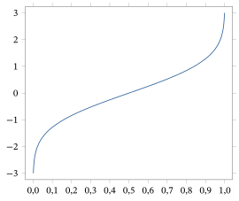
Usando a fda inversa, obtemos um método geral de obter amostras de uma distribuição contínua, como segue.
Seja \(F\) uma função de distribuição acumulada qualquer, e seja \(U \sim \text{Uniforme}[0, 1]\). Defina uma variável aleatória \(Y\) por \(Y = F^{-1}(U)\). Então \(P(Y \le y) = F(y)\), isto é, \(Y\) tem função de distribuição acumulada dada por \(F\).
Começamos observando que \(P(Y \le y) = P(F^{-1}(U) \le y)\). Mas \(F^{-1}(U)\) é o menor valor \(x\) tal que \(F(x) \ge U\). Logo, \(F^{-1}(U) \le y\) se e somente se \(F(y) \ge U\), isto é, \(U \le F(y)\). Portanto, \[ P(Y \le y) = P(F^{-1}(U) \le y) = P(U \le F(y)). \] Mas \(0 \le F(y) \le 1\) e \(U \sim \text{Uniforme}[0, 1]\), de modo que \(P(U \le F(y)) = F(y)\). Assim, \[ P(Y \le y) = P(U \le F(y)) = F(y). \] Segue que \(F\) é a fda de \(Y\), como afirmado.
Observamos que o Teorema 2.10.2 vale para qualquer função de distribuição acumulada, quer ela corresponda a uma distribuição contínua, a uma distribuição discreta ou a uma mistura das duas (como na Seção 2.5.4). De fato, isso foi provado para distribuições discretas no Teorema 2.10.1.
Seja \(F\) a fda de uma variável aleatória Exponencial\((1)\). Então \[ F(x) = \int_0^x e^{-t}\, dt = 1 - e^{-x}. \] Segue então que \begin{align*} F^{-1}(t) &= \min\{x : F(x) \ge t\} = \min\{x : 1 - e^{-x} \ge t\}\\ &= \min\{x : x \ge -\ln(1 - t)\} = -\ln(1 - t) = \ln(1/(1 - t)). \end{align*} Portanto, pelo Teorema 2.10.2, se \(U \sim \text{Uniforme}[0, 1]\) e tomarmos \begin{equation} Y = F^{-1}(U) = \ln(1/(1 - U)), \tag{2.10.3} \end{equation} então \(Y \sim \text{Exponencial}(1)\).
Ora, já vimos pelo Exemplo 2.6.6 que, se \(U \sim \text{Uniforme}[0, 1]\) e tomarmos \(Y = \ln(1/U)\), então \(Y \sim \text{Exponencial}(1)\). Isso é essencialmente o mesmo que (2.10.3), exceto que substituímos \(U\) por \(1 - U\). Por outro lado, isso não surpreende, porque já sabemos, pelo Exercício 2.6.2, que, se \(U \sim \text{Uniforme}[0, 1]\), então também \(1 - U \sim \text{Uniforme}[0, 1]\).
Seja \(\Phi\) a fda de uma variável aleatória \(N(0, 1)\), como na Definição 2.5.2. Então \[ \Phi^{-1}(t) = \min\{x : \Phi(x) \ge t\}, \] e não há fórmula mais simples para \(\Phi^{-1}(t)\). Pelo Teorema 2.10.2, se \(U \sim \text{Uniforme}[0, 1]\) e tomarmos \begin{equation} Y = \Phi^{-1}(U), \tag{2.10.4} \end{equation} então \(Y \sim N(0, 1)\).
Por outro lado, por causa das dificuldades de calcular com \(\Phi\) e \(\Phi^{-1}\), o método de (2.10.4) não é muito prático. É bem melhor usar o método de (2.10.2) para simular uma variável aleatória normal.
Para distribuições complicadas demais para obter amostras pelo método da inversão do Teorema 2.10.2, e para as quais não há nenhum truque simples disponível, ainda pode ser possível obter amostras usando métodos de cadeias de Markov, que discutiremos em capítulos posteriores, ou por amostragem por rejeição83 (ver Desafio 2.10.21).
Resumo da Seção 2.10
- É importante saber simular distribuições de probabilidade.
- Se \(X\) é discreta, assumindo o valor \(x_i\) com probabilidade \(p_i\), em que \(x_1 < x_2 < \cdots\), e \(U \sim \text{Uniforme}[0, 1]\) e \(Y = \min\bigl\{x_j : \sum_{k=1}^{j} p_k \ge U\bigr\}\), então \(Y\) tem a mesma distribuição que \(X\). Esse método pode ser usado para simular praticamente qualquer distribuição discreta.
- Se \(F\) é uma distribuição acumulada qualquer com fda inversa \(F^{-1}\), \(U \sim \text{Uniforme}[0, 1]\) e \(Y = F^{-1}(U)\), então \(Y\) tem função de distribuição acumulada \(F\). Isso nos permite simular praticamente qualquer distribuição contínua.
- Há métodos simples para simular muitas distribuições usuais, entre elas a binomial, a uniforme, a exponencial e a normal.
Exercícios
2.10.1 Seja \(Y\) uma variável aleatória discreta com \(P(Y = -7) = 1/2\), \(P(Y = -2) = 1/3\) e \(P(Y = 5) = 1/6\). Encontre uma fórmula para \(Z\) em função de \(U\) tal que, se \(U \sim \text{Uniforme}[0, 1]\), então \(Z\) tenha a mesma distribuição que \(Y\).
2.10.2 Para cada uma das funções de distribuição acumulada \(F\) a seguir, encontre uma fórmula para \(X\) em função de \(U\) tal que, se \(U \sim \text{Uniforme}[0, 1]\), então \(X\) tenha função de distribuição acumulada \(F\). (a) \[ F(x) = \begin{cases} 0 & x < 0\\ x & 0 \le x \le 1\\ 1 & x > 1 \end{cases} \](b) \[ F(x) = \begin{cases} 0 & x < 0\\ x^2 & 0 \le x \le 1\\ 1 & x > 1 \end{cases} \](c) \[ F(x) = \begin{cases} 0 & x < 0\\ x^2/9 & 0 \le x \le 3\\ 1 & x > 3 \end{cases} \](d) \[ F(x) = \begin{cases} 0 & x < 1\\ x^2/9 & 1 \le x \le 3\\ 1 & x > 3 \end{cases} \](e) \[ F(x) = \begin{cases} 0 & x < 0\\ x^5/32 & 0 \le x \le 2\\ 1 & x > 2 \end{cases} \](f) \[ F(x) = \begin{cases} 0 & x < 0\\ 1/3 & 0 \le x < 7\\ 3/4 & 7 \le x < 11\\ 1 & x \ge 11 \end{cases} \]
2.10.3 Suponha que \(U \sim \text{Uniforme}[0, 1]\) e \(Y = \ln(1/U) / 3\). Qual é a distribuição de \(Y\)?
2.10.4 Generalizando a questão anterior, suponha que \(U \sim \text{Uniforme}[0, 1]\) e \(W = \ln(1/U) / \lambda\) para algum \(\lambda > 0\) fixo. (a) Qual é a distribuição de \(W\)?(b) Isso fornece um modo de simular uma certa distribuição bem conhecida? Explique.
2.10.5 Sejam \(U_1 \sim \text{Uniforme}[0, 1]\) e \(U_2 \sim \text{Uniforme}[0, 1]\) independentes, e seja \(X = c_1 \sqrt{\log(1/U_1)}\, \cos(2\pi U_2)\) \({}+ c_2\). Encontre valores de \(c_1\) e \(c_2\) tais que \(X \sim N(5, 9)\).
2.10.6 Seja \(U \sim \text{Uniforme}[0, 1]\). Encontre uma fórmula para \(Y\) em função de \(U\) tal que \(P(Y = 3) = P(Y = 4) = 2/5\) e \(P(Y = 7) = 1/5\), e \(P(Y = y) = 0\) caso contrário.
2.10.7 Suponha que \(P(X = 1) = 1/3\), \(P(X = 2) = 1/6\), \(P(X = 4) = 1/2\) e \(P(X = x) = 0\) caso contrário. (a) Calcule a fda \(F_X(x)\) para todo \(x \in R^1\).(b) Calcule a fda inversa \(F_X^{-1}(t)\) para todo \(t \in R^1\).(c) Seja \(U \sim \text{Uniforme}[0, 1]\). Encontre uma fórmula para \(Y\) em função de \(U\) tal que \(Y\) tenha fda \(F_X\).
2.10.8 Seja \(X\) com função densidade \(f_X(x) = 3\sqrt{x}/2\) para \(0 < x < 1\), e \(f_X(x) = 0\) caso contrário. (a) Calcule a fda \(F_X(x)\) para todo \(x \in R^1\).(b) Calcule a fda inversa \(F_X^{-1}(t)\) para todo \(t \in R^1\).(c) Seja \(U \sim \text{Uniforme}[0, 1]\). Encontre uma fórmula para \(Y\) em função de \(U\) tal que \(Y\) tenha densidade \(f\).
2.10.9 Seja \(U \sim \text{Uniforme}[0, 1]\). Encontre uma fórmula para \(Z\) em função de \(U\) tal que \(Z\) tenha densidade \(f_Z(z) = 4z^3\) para \(0 < z < 1\), e \(f_Z(z) = 0\) caso contrário.
Exercícios computacionais
2.10.10 Para cada uma das distribuições a seguir, use o computador (você pode usar quaisquer algoritmos disponíveis num pacote de software) para simular \(X_1, X_2, \ldots, X_N\) i.i.d. com a distribuição dada. (Tome no mínimo \(N = 1000\), com \(N = 10.000\) ou \(N = 100.000\) se possível.) Depois, calcule \(\bar{X} = (1/N) \sum_{i=1}^{N} X_i\) e \((1/N) \sum_{i=1}^{N} \bigl(X_i - \bar{X}\bigr)^2\). (a) Uniforme\([0, 1]\)(b) Uniforme\([5, 8]\)(c) Bernoulli\((1/3)\)(d) Binomial\((12, 1/3)\)(e) Geométrica\((1/5)\)(f) Exponencial\((1)\)(g) Exponencial\((13)\)(h) \(N(0, 1)\)(i) \(N(5, 9)\)
Problemas
2.10.11 Seja \(G(x) = p_1 F_1(x)\) \({}+ p_2 F_2(x)\) \({}+ \cdots + p_k F_k(x)\), em que \(p_i \ge 0\), \(\sum_i p_i = 1\) e as \(F_i\) são fdas, como em (2.5.3). Suponha que sabemos gerar \(X_i\) com fda \(F_i\), para \(i = 1, 2, \ldots, k\). Descreva um procedimento para gerar uma variável aleatória \(Y\) com fda \(G\).
2.10.12 Seja \(X\) uma variável aleatória absolutamente contínua, com densidade dada por \(f_X(x) = x^{-2}\) para \(x \ge 1\), e \(f_X(x) = 0\) caso contrário. Encontre uma fórmula para \(Z\) em função de \(U\) tal que, se \(U \sim \text{Uniforme}[0, 1]\), então \(Z\) tenha a mesma distribuição que \(X\).
2.10.13 Encontre a fda inversa da distribuição logística do Problema 2.4.18. (Sugestão: veja o Problema 2.5.20.)
2.10.14 Encontre a fda inversa da distribuição Weibull\((\alpha)\) do Problema 2.4.19. (Sugestão: veja o Problema 2.5.21.)
2.10.15 Encontre a fda inversa da distribuição Pareto\((\alpha)\) do Problema 2.4.20. (Sugestão: veja o Problema 2.5.22.)
2.10.16 Encontre a fda inversa da distribuição de Cauchy do Problema 2.4.21. (Sugestão: veja o Problema 2.5.23.)
2.10.17 Encontre a fda inversa da distribuição de Laplace do Problema 2.4.22. (Sugestão: veja o Problema 2.5.24.)
2.10.18 Encontre a fda inversa da distribuição de valor extremo do Problema 2.4.23. (Sugestão: veja o Problema 2.5.25.)
2.10.19 Encontre as fdas inversas das distribuições beta do Problema 2.4.24(b) a (d). (Sugestão: veja o Problema 2.5.26.)
2.10.20 (Método da composição84) Se geramos \(X \sim f_X\), obtendo \(x\), e depois geramos \(Y\) a partir de \(f_{Y|X}(\cdot \,|\, x)\), prove que \(Y \sim f_Y\).
Desafios
2.10.21 (Amostragem por rejeição) Suponha que \(f\) seja uma função densidade complicada. Suponha que \(g\) seja uma função densidade da qual é fácil obter amostras (por exemplo, a densidade de uma distribuição uniforme, exponencial ou normal). Suponha que conhecemos um valor de \(c\) tal que \(f(x) \le c g(x)\) para todo \(x \in R^1\). O que segue fornece um método, chamado amostragem por rejeição, para obter amostras de uma densidade complicada \(f\) usando uma densidade mais simples \(g\), desde que conheçamos \(f(x) \le c g(x)\) para todo \(x \in R^1\). (a) Suponha que \(Y\) tenha densidade \(g\). Seja \(U \sim \text{Uniforme}[0, c]\), com \(U\) e \(Y\) independentes. Prove que \[ P(a \le Y \le b \,|\, f(Y) \ge U c g(Y)) = \int_a^b f(x)\, dx. \] (Sugestão: use o Teorema 2.8.1 para mostrar que \(P(a \le Y \le b, \ f(Y) \ge c U g(Y))\) \({}= \int_a^b g(y) P(f(Y) \ge c U g(Y) \,|\, Y = y)\, dy\).)(b) Suponha que \(Y_1, Y_2, \ldots\) sejam i.i.d., cada uma com densidade \(g\), e, independentemente, que \(U_1, U_2, \ldots\) sejam i.i.d. Uniforme\([0, c]\). Seja \(i_0 = 0\) e, para \(n \ge 1\), seja \(i_n = \min\{j > i_{n-1} : U_j f(Y_j) \ge c g(Y_j)\}\). Prove que \(X_{i_1}, X_{i_2}, \ldots\) são i.i.d., cada uma com densidade \(f\). 85 (Sugestão: prove isso para \(X_{i_1}, X_{i_2}\).)
2.11 Demonstrações Adicionais (Avançado)
Queremos provar que a função \(\phi\) dada por (2.4.9) é uma função densidade.
Claramente, \(\phi(x) \ge 0\) para todo \(x\). Para prosseguir, tomamos \(I = \int_{-\infty}^{\infty} \phi(x)\,dx\). Então, usando cálculo de várias variáveis, \begin{align*} I^2 &= \left(\int_{-\infty}^{\infty} \phi(x)\,dx\right)^{2} = \left(\int_{-\infty}^{\infty} \phi(x)\,dx\right)\left(\int_{-\infty}^{\infty} \phi(y)\,dy\right)\\ &= \int_{-\infty}^{\infty}\int_{-\infty}^{\infty} \phi(x)\,\phi(y)\,dx\,dy = \int_{-\infty}^{\infty}\int_{-\infty}^{\infty} \frac{1}{2\pi}\,e^{-(x^2+y^2)/2}\,dx\,dy. \end{align*}
Passamos agora para coordenadas polares \((r, \theta)\), de modo que \(x = r\cos\theta\) e \(y = r\sin\theta\), com \(r > 0\) e \(0 \le \theta \le 2\pi\). Então \(x^2 + y^2 = r^2\) e, pelo teorema de mudança de variável do cálculo de várias variáveis, \(dx\,dy = r\,dr\,d\theta\). Logo, \begin{align*} I^2 &= \int_{0}^{2\pi}\int_{0}^{\infty} \frac{1}{2\pi}\,e^{-r^2/2}\,r\,dr\,d\theta = \int_{0}^{\infty} e^{-r^2/2}\,r\,dr\\ &= -e^{-r^2/2}\,\Big|_{r=0}^{r=\infty} = (-0) - (-1) = 1, \end{align*} e temos \(I^2 = 1\). Mas claramente \(I \ge 0\) (porque \(\phi \ge 0\)); então devemos ter \(I = 1\), como afirmado.
Queremos provar que, quando \(X\) é uma variável aleatória absolutamente contínua, com função densidade \(f_X\), e \(Y = h(X)\), em que \(h : R^1 \to R^1\) é uma função diferenciável e estritamente crescente, então \(Y\) também é absolutamente contínua, e sua função densidade \(f_Y\) é dada por \begin{equation} f_Y(y) = f_X(h^{-1}(y)) \,/\, |h'(h^{-1}(y))|, \tag{2.11.1} \end{equation} em que \(h'\) é a derivada de \(h\) e \(h^{-1}(y)\) é o único número \(x\) tal que \(h(x) = y\).
Devemos mostrar que, sempre que \(a \le b\), temos \[ P(a \le Y \le b) = \int_{a}^{b} f_Y(y)\,dy, \] em que \(f_Y\) é dada por (2.11.1). Para isso, observamos que, como \(h\) é estritamente crescente, \(h^{-1}\) também é. Logo, aplicar \(h^{-1}\) preserva as desigualdades, de modo que \begin{align*} P(a \le Y \le b) &= P(h^{-1}(a) \le h^{-1}(Y) \le h^{-1}(b)) = P(h^{-1}(a) \le X \le h^{-1}(b))\\ &= \int_{h^{-1}(a)}^{h^{-1}(b)} f_X(x)\,dx. \end{align*} Fazemos então a substituição \(y = h(x)\), de modo que \(x = h^{-1}(y)\), e \[ dx = \left|\frac{d}{dy}h^{-1}(y)\right| dy. \] Mas, pelo teorema da função inversa86 do cálculo, \(\frac{d}{dy}h^{-1}(y) = 1/h'(h^{-1}(y))\). Além disso, quando \(x\) vai de \(h^{-1}(a)\) a \(h^{-1}(b)\), vemos que \(y = h(x)\) vai de \(a\) a \(b\). Concluímos que \begin{align*} P(a \le Y \le b) &= \int_{h^{-1}(a)}^{h^{-1}(b)} f_X(x)\,dx = \int_{a}^{b} f_X(h^{-1}(y))(1/|h'(h^{-1}(y))|)\,dy\\ &= \int_{a}^{b} f_Y(y)\,dy, \end{align*} como queríamos.
Queremos provar que, quando \(X\) é uma variável aleatória absolutamente contínua, com função densidade \(f_X\), e \(Y = h(X)\), em que \(h : R^1 \to R^1\) é uma função diferenciável e estritamente decrescente, então \(Y\) também é absolutamente contínua, e sua função densidade \(f_Y\) pode, mais uma vez, ser definida por (2.11.1).
Observamos que, como \(h\) é estritamente decrescente, \(h^{-1}\) também é. Logo, aplicar \(h^{-1}\) inverte as desigualdades, de modo que \begin{align*} P(a \le Y \le b) &= P(h^{-1}(b) \le h^{-1}(Y) \le h^{-1}(a)) = P(h^{-1}(b) \le X \le h^{-1}(a))\\ &= \int_{h^{-1}(b)}^{h^{-1}(a)} f_X(x)\,dx. \end{align*} Fazemos então a substituição \(y = h(x)\), de modo que \(x = h^{-1}(y)\), e \[ dx = \left|\frac{d}{dy}h^{-1}(y)\right| dy. \] Mas, pelo teorema da função inversa do cálculo, \[ \frac{d}{dy}h^{-1}(y) = \frac{1}{h'(h^{-1}(y))}. \] Além disso, quando \(x\) vai de \(h^{-1}(b)\) a \(h^{-1}(a)\), vemos que \(y = h(x)\) vai de \(a\) a \(b\). Concluímos que \begin{align*} P(a \le Y \le b) &= \int_{h^{-1}(b)}^{h^{-1}(a)} f_X(x)\,dx = \int_{a}^{b} f_X(h^{-1}(y))\,(1/|h'(h^{-1}(y))|)\,dy\\ &= \int_{a}^{b} f_Y(y)\,dy, \end{align*} como queríamos.
Queremos provar o seguinte resultado. Sejam \(X\) e \(Y\) conjuntamente absolutamente contínuas, com função densidade conjunta \(f_{X,Y}\). Sejam \(Z = h_1(X, Y)\) e \(W = h_2(X, Y)\), em que \(h_1, h_2 : R^2 \to R^1\) são funções diferenciáveis. Defina a função conjunta \(h = (h_1, h_2) : R^2 \to R^2\) por \[ h(x, y) = (h_1(x, y), h_2(x, y)). \] Suponha que \(h\) seja injetora, pelo menos na região \(\{(x, y) : f(x, y) > 0\}\), isto é, se \(h_1(x_1, y_1) = h_1(x_2, y_2)\) e \(h_2(x_1, y_1) = h_2(x_2, y_2)\), então \(x_1 = x_2\) e \(y_1 = y_2\). Então \(Z\) e \(W\) também são conjuntamente absolutamente contínuas, com função densidade conjunta \(f_{Z,W}\) dada por \[ f_{Z,W}(z, w) = f_{X,Y}(h^{-1}(z, w)) \,/\, |J(h^{-1}(z, w))|, \] em que \(J\) é o jacobiano de \(h\) e \(h^{-1}(z, w)\) é o único par \((x, y)\) tal que \(h(x, y) = (z, w)\).
Devemos mostrar que, sempre que \(a \le b\) e \(c \le d\), temos87 \[ P(a \le Z \le b,\ c \le W \le d) = \int_{c}^{d}\int_{a}^{b} f_{Z,W}(z, w)\,dw\,dz. \] Se chamarmos de \(S = [a, b] \times [c, d]\) o retângulo bidimensional, podemos reescrever88 isso como \[ P((Z, W) \in S) = \int\!\!\int_{S} f_{Z,W}(z, w)\,dz\,dw. \] Agora, usando a teoria do cálculo de várias variáveis e fazendo a substituição \((x, y) = h^{-1}(z, w)\) (o que é permitido porque \(h\) é injetora), temos \begin{align*} &\int\!\!\int_{S} f_{Z,W}(z, w)\,dz\,dw\\ &= \int\!\!\int_{S} \Big(f_{X,Y}(h^{-1}(z, w)) \,/\, |J(h^{-1}(z, w))|\Big)\,dz\,dw\\ &= \int\!\!\int_{h^{-1}(S)} \big(f_{X,Y}(x, y) \,/\, |J(x, y)|\big)\,|J(x, y)|\,dx\,dy\\ &= \int\!\!\int_{h^{-1}(S)} f_{X,Y}(x, y)\,dx\,dy = P((X, Y) \in h^{-1}(S))\\ &= P(h^{-1}(Z, W) \in h^{-1}(S)) = P((Z, W) \in S), \end{align*} como queríamos.
Notas do capítulo
- Termo modelo de probabilidade — no original, probability model ↩
- Termo medida de probabilidade — no original, probability measure ↩
- Termo espaço amostral — no original, sample space ↩
- Termo distribuição condicional — no original, conditional distribution ↩
- Termo variável aleatória — no original, random variable ↩
- Nota do tradutor O original traz \(Y(\text{snow}) = 1/2\); pela frase anterior (\(Y = -1/2\) se nevar), seria \(Y(\text{neve}) = -1/2\). ↩
- Termo função indicadora — no original, indicator function ↩
- Termo ilimitada — no original, unbounded ↩
- Termo espaço de estados — no original, state space ↩
- Termo subconjunto de Borel — no original, Borel subset ↩
- Termo teoria da medida — no original, measure theory ↩
- Termo distribuição uniforme — no original, uniform distribution ↩
- Termo enumerável — no original, countable ↩
- Termo função de probabilidade — no original, probability function ↩
- Termo lei da probabilidade total — no original, law of total probability ↩
- Termo massa pontual — no original, point mass ↩
- Termo distribuição pontual — no original, point distribution ↩
- Termo distribuição degenerada — no original, degenerate distribution ↩
- Termo variável resposta — no original, response variable ↩
- Termo não negativo — no original, nonnegative ↩
- Nota do tradutor o original traz o último fator como \(\left(1 - \frac{x+1}{n}\right)\); pela conta seria \(\left(1 - \frac{x-1}{n}\right)\), pois o último fator do numerador é \(n - x + 1 = n - (x - 1)\). ↩
- Termo estimativa — no original, estimate ↩
- Termo amostragem sem reposição — no original, sampling without replacement ↩
- Termo amostragem com reposição — no original, sampling with replacement ↩
- Termo processo de Poisson — no original, Poisson process ↩
- Nota do tradutor o original traz um parêntese a mais em “\(P(X > 1))\)” ↩
- Termo função densidade — no original, density function ↩
- Termo absolutamente contínua — no original, absolutely continuous ↩
- Termo recíproca — no original, converse ↩
- Nota do autor Para exemplos disso, veja livros de probabilidade mais avançados, por exemplo, a página 143 de A First Look at Rigorous Probability Theory, segunda edição, de J. S. Rosenthal (World Scientific Publishing, Singapura, 2006). ↩
- Termo tempo de vida — no original, lifelength ↩
- Termo função gama — no original, gamma function ↩
- Termo distribuição normal padrão — no original, standard normal distribution ↩
- Termo teorema central do limite — no original, central limit theorem ↩
- Termo contínua por partes — no original, piecewise continuous ↩
- Termo verossimilhança — no original, likelihood ↩
- Termo integração por partes — no original, integration by parts ↩
- Termo logística — no original, logistic ↩
- Termo de Cauchy — no original, Cauchy ↩
- Termo de Laplace — no original, Laplace distribution ↩
- Termo distribuição de valor extremo — no original, extreme value ↩
- Termo função beta — no original, beta function ↩
- Termo mudança de variável — no original, change of variable ↩
- Termo função de distribuição acumulada — no original, cumulative distribution function ↩
- Termo contínua à direita — no original, right continuous ↩
- Nota do autor Por exemplo, ver a página 67 de A First Look at Rigorous Probability Theory, segunda edição, de J. S. Rosenthal (World Scientific Publishing, Singapura, 2006). ↩
- Termo constante por partes — no original, piecewise constant ↩
- Termo função escada — no original, step function ↩
- Termo mistura de locação — no original, location mixture ↩
- Termo mistura de escala — no original, scale mixture ↩
- Nota do autor Na verdade, existem distribuições de probabilidade que não podem ser expressas nem mesmo como mistura de uma distribuição discreta com uma contínua, mas não precisamos nos preocupar com elas aqui. ↩
- Termo estritamente crescente — no original, strictly increasing ↩
- Termo distribuição Log-normal — no original, Log-normal distribution ↩
- Termo distribuição conjunta — no original, joint distribution ↩
- Termo inclusão-exclusão — no original, inclusion–exclusion ↩
- Termo distribuição marginal — no original, marginal distribution ↩
- Termo fda conjunta — no original, joint cdf ↩
- Termo conjuntamente absolutamente contínuas — no original, jointly absolutely continuous ↩
- Termo densidade conjunta — no original, joint density ↩
- Termo quadrado unitário — no original, unit square ↩
- Termo correlação — no original, correlation ↩
- Nota do tradutor O original traz \([0, 1]\) como contradomínio da densidade conjunta; uma densidade pode passar de 1 (a do Exemplo 2.7.6 chega a 6), então seria \([0, \infty)\). ↩
- Termo densidade marginal — no original, marginal density ↩
- Nota do tradutor O original traz “para todo \(x \in R^1\)”; pelo contexto seria \(y \in R^1\). ↩
- Termo distribuição Dirichlet — no original, Dirichlet distribution ↩
- Termo probabilidade condicional — no original, conditional probability ↩
- Termo função de probabilidade condicional — no original, conditional probability function ↩
- Termo densidade condicional — no original, conditional density ↩
- Nota do tradutor o original traz \(f_{X_1, \ldots, X_n}(x, y)\); pelo contexto seria \(f_{X_1, \ldots, X_n}(x_1, \ldots, x_n)\) ↩
- Termo coeficiente multinomial — no original, multinomial coefficient ↩
- Nota do tradutor o original remete ao Problema 2.8.18; pelo conteúdo seria o 2.8.22 ↩
- Termo estatísticas de ordem — no original, order statistics ↩
- Termo mínimo amostral — no original, sample minimum ↩
- Termo mediana amostral — no original, sample median ↩
- Termo quartis amostrais — no original, sample quartiles ↩
- Termo injetora — no original, one-to-one ↩
- Nota do tradutor o original diz “joint density function”, mas a função dada é uma função de probabilidade conjunta (caso discreto) ↩
- Termo jacobiano — no original, Jacobian ↩
- Termo convolução — no original, convolution ↩
- Termo gerador de números pseudoaleatórios — no original, pseudorandom number generator ↩
- Termo coeficiente binomial — no original, binomial coefficient ↩
- Termo método da inversão — no original, inversion method ↩
- Termo amostragem por rejeição — no original, rejection sampling ↩
- Termo método da composição — no original, method of composition ↩
- Nota do tradutor o original escreve \(X_{i_1}, X_{i_2}, \ldots\); pelo contexto seriam \(Y_{i_1}, Y_{i_2}, \ldots\) ↩
- Termo teorema da função inversa — no original, inverse function theorem ↩
- Nota do tradutor O original traz \(dw\,dz\); pelos limites (\(z\) de \(a\) a \(b\) na integral de dentro, \(w\) de \(c\) a \(d\) na de fora) seria \(dz\,dw\). ↩
- Termo reescrever — no original, plausibility ↩